Real Time Graphical Programming
Traditionally, computer programmers used text-based programming languages to write applications. The programmer would write lines of code into a file, and then run it afterwards to see the results. Many sound or visual artists, as well as other non-programmers, find this a difficult and non-intuitive method of creating things however.
(
{
// example by James McCartney
var signal, delay, reverb;
// 10 voices of a random sine percussion sound:
signal = Mix.fill(10, {Resonz.ar(Dust.ar(0.2, 50), rrand(200.0, 3200.0), 0.003)});
// reverb predelay time:
delay = DelayN.ar(signal, 0.048);
// 7 length modulated comb delays in parallel:
reverb = Mix.fill(7,{CombL.ar(delay, 0.1, LFNoise1.ar(0.1.rand,0.04,0.05), 15)});
// two parallel chains of 4 allpass delays (8 total):
4.do{ reverb = AllpassN.ar(reverb, 0.050, [ 0.050.rand, 0.050.rand ], 1) };
// add original sound to reverb and play it:
signal + (reverb * 0.2)
}.play
)
SuperCollider: an example of text-based programming for audio.
Graphical Programming
Pure Data, on the other hand, is a graphical programming environment. What this means is that the lines of code, which describe the functions of a program and how they interact, have been replaced with visual objects which can be manipulated on-screen. Users of Pure Data can create new programs (patches) by placing functions (objects) on the screen. They can change the way these objects behave by sending them messages and by connecting them together in different ways by drawing lines between them.
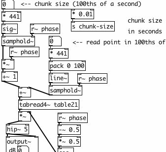
A Pure Data patch...
This visual metaphor borrows much from the history of 20th Century electronic music, where sounds were created and transformed by small electronic devices which were connected together via patch cables.
...and an analog synthesizer patch.
The sounds that were heard were the result of the types of devices the composer used and the way in which she or he connected them together. Nowadays, much of this electronic hardware has been replaced by computer software capable of making the same sounds, and many more.
Real Time
The real advantage of Pure Data is that it works in "real time". That means that changes can be made in the program even as it is running, and the user can see or hear the results immediately. This makes it a powerful tool for artists who would like to make sound or video in a live performance situation.
What is digital audio?
Since we'll be using Pure Data to create sound, and since Pd treats sound as just another set of numbers, it might be useful to review how digital audio works. We will return to these concepts in the audio tutorial later on.

A diagram showing how sound travels through your computer. The "Analog to Digital" & "Digital to Analog Conversion" is done by the soundcard. The "Digital System" in this case is Pure Data.
Source: http://en.wikipedia.org/wiki/Image:Analogue_Digital_Conversion.png
Frequency and Gain
First, imagine a loudspeaker. It moves the air in front of it and makes a sound. The membrane of the speaker must vibrate from it's center position (at rest) backwards and forwards. The number of times per second it vibrates makes the frequency (the note, tone or pitch) of the sound you hear, and the distance it travels from it's resting point determines the gain (the volume or loudness) of the sound. Normally, we measure frequency in Hertz (Hz) and loudness or gain in Decibels (dB).
A microphone works in reverse - vibrations in the air cause its membrane to vibrate. The microphone turns these acoustic vibrations into an electrical current. If you plug this microphone into your computer's soundcard and start recording, the soundcard makes thousands of measurements of this electric current per second and records them as numbers.
Sampling Rate and Bit Depth
To make audio playable on a Compact Disc, the computer must make 44,100 measurements (called samples) per second, and record each one as a 16-bit number. One bit is a piece of information which is either 0 or 1, and if there are 16 bits together to make one sample then there are 216 (or 2x2x2x2x2x2x2x2x2x2x2x2x2x2x2x2 = 65,536) possible values that each sample could have. Thus, we can say that CD-quality audio has a sampling rate of 44,100 Hz and a bit-depth or word length of 16 bits. In contrast, professional music recordings are usually made at 24-bit first to preserve the highest amount of detail before being mixed down to 16-bit for CD, and older computer games were famous for having a distinctively rough 8-bit sound. By increasing the sampling rate, we are able to record higher sonic frequencies, and by increasing the bit-depth or word length we are able to use a greater dynamic range (the difference between the quietest and the loudest sounds it is possible to record and play).
An example of 4-bit sampling of a signal (shown in red). This image shows that 16 possible values can be made from 4-bits--a very low dynamic range indeed! In Pd, our scale of numbers goes from -1 to 1, with 0 in the middle. Source: http://en.wikipedia.org/wiki/Image:Pcm.svg
The number we use to record each sample has a value between -1 and +1, which would represent the greatest range of movement of our theoretical loudspeaker, with 0 representing the speaker at rest in the middle position.
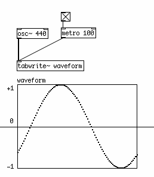
Graphical depiction of a sine wave, which crosses zero from the negative to the positive domain.
When we ask Pd to play back this sound, it will read the samples back and send them to the soundcard. The soundcard then converts these numbers to an electrical current which causes the loudspeaker to vibrate the air in front of it and make a sound we can hear.
Speed and Pitch Control
If we want to change the speed at which the sound is played, we can read the samples back faster or slower than the original sampling rate. This is the same effect as changing the speed of record or a tape player. The sound information is played back at a different speed, and so the pitch of the sound changes in relation to the change in speed. A faster playback rate increases the pitch of the sound, while a slower playback rate lowers the pitch.
Volume Control, Mixing and Clipping
If we want to change the volume of the sound, we have to multiply the numbers which represent the sound by another number. Multiplying them by a number greater than 1 will make the sound louder, and multiplying them by a number between 1 and zero will make the sound quieter. Multiplying them by zero will mute them - resulting in no sound at all. We can also mix two or more sounds by adding the stream of numbers which represent them together to get a new stream of sound. All of these operations can take place in real-time as the sound is playing.
However, if the range of numbers which represents the sound becomes greater than -1 to 1, any numbers outside of that range will be truncated (reduced to either -1 or 1) by the soundcard. The resulting sound will be clipped (distorted). Some details of the sound will be lost and frequencies that were not present before will be heard.
The waveform on the left is at full volume (i.e. it's peaks are at -1 and 1). The volume of the waveform on the right has been doubled, so that it peaks at -2 and 2. The graph shows what would be heard from the soundcard: a clipped signal with the peaks of the sinewave removed.
The Nyquist Number and Foldover/Aliasing
Another problem occurs if one tries to play back a frequency which is greater then half the sampling rate which the computer is using. If one is using a sampling rate of 44,100 Hz, the highest frequency one could theoretically play back without errors is 22,050 Hz. The reason being, a computer needs at least two samples to reproduce a single frequency. The number that represents half the sampling rate is called the Nyquist number.
If you were to tell Pd to play a frequency of 23,050 Hz, what you would hear is one tone at 23,050 Hz, and a second tone at 21,050 Hz. The difference between the Nyquist number (22,050 Hz) and the synthesized sound (23,050 Hz) is 1,000 Hz, which you would both add to and subtract from the Nyquist number to find the actual frequencies heard. So as one increased the frequency of the sound over the Nyquist number, you would hear one tone going up, and another coming down. This problem is referred to as foldover or aliasing.

Here we can see two possible waveforms which could be described by the samples show. The red line shows the intended waveform, and the blue line shows the "aliased" waveform at <Desired Frequency> - (<Desired Frequency> - <Nyquist Number>).
Source: http://en.wikipedia.org/wiki/Image:AliasingSines.png
DC Offset
DC offset is caused when a waveform doesn't cross the zero line, or has unequal amounts of signal in the positive and negative domains. This means that, in our model speaker, the membrane of the speaker does not return to its resting point during each cycle. This can affect the dynamic range of the sound. While DC offset can be useful for some kinds of synthesis, it is generally considered undesirable in an audio signal.

An example of DC offset: the waveform is only in the positive domain.
Block Size
Computers tend to process information in batches or chunks. In Pd, these are known as Blocks. One block represents the number of audio samples which Pd will compute before giving output. The default block size in Pd is 64, which means that every 64 samples, Pd makes every calculation needed on the sound and when all these calculations are finished, then the patch will output sound. Because of this, a Pd patch cannot contain any DSP loops, which are situations where the output of a patch is sent directly back to the input. In such a situation, Pd would be waiting for the output of the patch to be calculated before it could give output! In other words, an impossible situation. Pd can detect DSP loops, and will not compute audio when they are present. For more information, see the "Troubleshooting" section.
It's All Just Numbers
The main thing to keep in mind when starting to learn Pure Data is that audio and everything else is just numbers inside the computer, and that often the computer doesn't care whether the numbers you are playing with represent text, image, sound or other data. This makes it possible to make incredible transformations in sound and image, but it also allows for the possibility to make many mistakes, since there is no 'sanity checks' in Pure Data to make sure you are asking the program to do something that is possible. So sometimes the connections you make in Pd may cause your computer to freeze or the application to crash. To protect against this save your work often and try not to let this bother you, because as you learn more and more about this language you will make fewer and fewer mistakes and eventually you will be able to program patches which are as stable and predictable as you want them to be.
Installing on OS X
Software name : Pd-extended
Homepage : http://puredata.info
Software version used for this installation: Pd-extended 0.39.3
Operating System use for this installation: Mac OS 10.4.11
Recommended Hardware : Any Mac running Mac OS X 10.4 or later
To begin the installation visit the download page for Pure Data ( http://puredata.info/downloads ) :
You can download either Miller Puckette's version of Pure Data, or Pd-extended. Miller's version of Pure Data is called "Pd-vanilla" because it has just the basic minimum set of functionality. It does not contain any external libraries or any of the features developed by the Pure Data community which are included in Pd-extended. We will use Pd-extended for this manual, so chose your installer from the "Pd-extended" section of this webpage.
Since there is not a "Universal Binary" for Pd-extended, you will want to select the Mac OS X installer that best suits your computer. Use the one labelled "Mac OS X i386" for the newer, Intel-processor equipped Mac computers. For example, any Mac Pro or MacBook is an Intel Mac. Any iMac that is less that a couple years old is an Intel Mac.
Use the "Mac OS X PowerPC" installer if you have a PowerMac, PowerBook, or iBook with a G4 or G5 processor running Mac OS 10.4 "Tiger" or later. Older iMacs use G4 and G5 processors, so they use the PowerPC version as well.
If your computer has a G3 processor or is running Mac OS X 10.3 Panther, then you will need to use older version of Pd-extended, 0.39.3. You can see all of the older versions on the downloads page by clicking on  . There you can also find installers for versions of Mac OS X older than 10.3 Panther.
. There you can also find installers for versions of Mac OS X older than 10.3 Panther.
Once you've downloaded the right installer, you'll have a .dmg (Disk Image) on your harddrive.
Double click to open and mount it, and you will have a chance to read and accept the License Agreement.

Once you click "Agree", the Disk Image will mount and automatically open. Then simply drag the Pd-extended.app to the provided shortcut to your Applications folder (or to another location of your choice.) This will copy Pd-extended to your harddrive.

After that, make sure to check the "ReadMe" file for important installation information.

As indicated, the Pd-extended.app is setup by default to load most of the included external libraries. If you want to change the libraries which are loaded at startup time, or any of the other startup settings, please notice the instructions here in the "ReadMe", and be sure to read the chapter "Configuring Pure Data" in this manual.
From here, you can open up your "Applications" folder in the Finder, and start Pd by clicking the "Pd-extended.app" icon found there.
Status: X11 Library not loaded
When starting Pd-extended it will check to see if all standard libraries are loaded. The X11 library is an expected fundamental graphics library. If you see the following error message in the Pd window, you do not have X11 installed on your Mac. Instructions to install X11 follow.

Installing X11 on Mac OS X 10.3 Panther and 10.4 Tiger
Pd-extended needs X11 for some graphics libraries. Starting with Mac OS X 10.5 Leopard, X11 comes installed by default. If you are running Mac OS X older than 10.5 Leopard, then you will need install it yourself, if you haven't already. It comes on your Mac OS X DVD or CD. If you no longer have that DVD or CD, then you can find it online. The FAQ on puredata.info has the current links: http://puredata.info/docs/faq/macosx
- Insert your OS X Tiger Install Disc (#1). Scroll down to locate the Optional Installs icon and double-click it

- Click Continue on the first screen

- Read the Software License Agreement and then click Continue
- Click Agree
- Select a location and click Continue

- Click the small triangle directly next to Applications and then place a check in the box labeled X11. When you’re ready, click Upgrade.
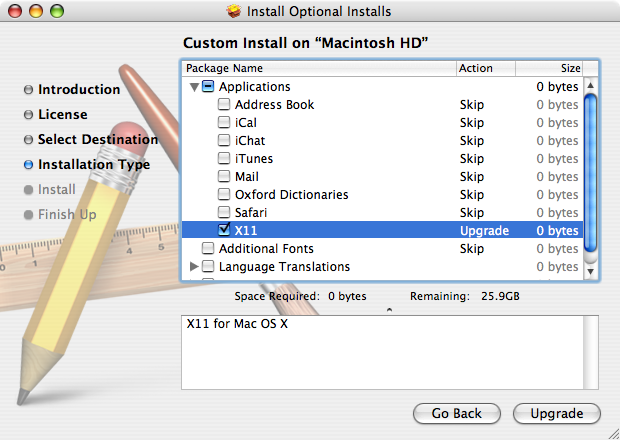
- Enter your password when prompted, and then click OK

- Wait until it finishes installing...
- After X11 has successfully installed, click Close
- And that's it, X11 is installed
Installing on Windows
Software name : Pd-extended
Homepage : http://puredata.info
Software version used for this installation : Pd-extended 0.39-3
Operating System use for this installation : Microsoft Windows XP
Recommended Software : Windows 2000 or later
Recommended Hardware : 300 Mhz processor (CPU) minimum
To begin the installation visit the download page for Pure Data ( http://puredata.info/downloads ) :
You can download either Miller Puckette's version of Pure Data, or Pd-extended. Miller's version of Pure Data is called "Pd-vanilla" because it has just the basic minimum set of functionality. It does not contain any external libraries or any of the features developed by the Pure Data community which are included in Pd-extended. We will use Pd-extended for this manual, so chose your installer from the "Pd-extended" section of this webpage.
In the first group of links under "pd-extended'"click on the link marked "Microsoft Windows (2000/XP/Vista)" and you should see something like this (this example using Firefox) :
Press "OK" and the download should proceed, leaving you (hopefully) with a dialog box that informs you the download is complete. If you are using Firefox then the dialog may look something like this:
Now you can either browse your computer to look for the installer icon which will look something like this :

you can double click on this icon to start the installation process. Alternatively, you may wish to click Open in the download dialog :
If you choose to do it this way then you may see the following window :

if you see this click "OK" and continue. Either of the steps above should put you in the same place, which is this :
now press "Next >" and the installation process will begin. You will see this screen :
This is the standard license page. If you don't agree with the license you can't install the software. So, my recommendation is - click on the green button next to 'I accept the agreement' and then press 'Next >'. You will see the following :
The above assists you in deciding where to install Pd-extended. Unless you have a good reason to, leave the default settings as they are. If you have a good reason, and know what you are doing, you can press 'Browse' and choose another place to install Pd-extended on your computer. If you decide to change the defaults, or keep them, youy must then press 'Next >' to continue :

The above screen is merely choosing what to call the installation in the Windows 'Start Menu', Just leave it as it is and press 'Next >'.

You really don't want to uncheck the last two boxes as they are necessary for the installation. The first two choices are merely cosmetic and effect the 'shortcut' icons. It doesn't matter if you check these or leave them as they are. When you are ready press 'Next>'.
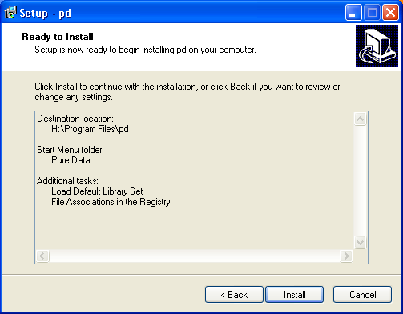
The above is the summary window. Press 'Install' and the installation will commence. It might take some time depending on how quick your computer is. While you wait the installer will present you with progress bars :

Then when the installation is complete you will see a final screen :

If you click 'Finish' your browser will open the (rather unattractive) Read Me page :

It is rather uncompelling material but it does have one useful hint...
"To make sure that all of the included libraries are loaded when Pd runs, double-click C:\Program Files\pd\pd-settings.reg"
This is rather important, so you need to open the 'Program Files' in your file browser. Usually you can right-click on the Windows Start Menu to open a file browser :
Then you will see something like this:
Double-click on 'Program Files' and the the directory called 'pd', in this window you should see a file called 'pd-settings':

Double-click on this file and you will see the following :
Press 'Yes' :
Then press 'OK' and that window will disappear. Now you probably want to actually open Pure Data. Click on the Windows Start Menu and slide across to 'All Programs' and 'Pure Data', then finally again to the 'Pure Data' icon :
Release the mouse button and Pure Data should open :
Installing on Ubuntu
Software name : Pure Data Extended
Homepage : http://puredata.info
Software version used for this installation : Pd-Extended 0.39-3
Operating System use for this installation : Ubuntu 8.04 (tested also on 7.10)
Recommended Hardware : 300 Mhz processor (CPU) minimum Â
Installation on Ubuntu Gutsy (7.10) and Ubuntu Hardy (8.04) is the same process. It is made a little tricky because Pure Data Extended requires some software that is not normally part of these operating systems but is included in an older version of Ubuntu. So we must indulge a short work around to get Pure Data Extended working correctly. Thankfully it is quick and simple.
Installing libflac7 and libjasper
Pure Data Extended requires two software 'libraries' from an older version of Ubuntu - libflac7 and libjasper
To prepare Ubuntu to install them when you install Pure Data Extended, you first need to open the Synaptic Package Manager :

You will be asked for a password. Enter in your adminstrator password (not your user password) and you will see Synaptic open.
Now we need to add the older software repositories too install these 2 software libraries. Click on Settings and then Repositories and you will see the Synaptic Repository Manager :
Now click on the second tab entitled Third-Party Software. It is here that you will now need to enter information about these two repositories:
deb http://archive.ubuntu.com/ubuntu/ feisty main restricted
deb-src http://archive.ubuntu.com/ubuntu/ feisty main restricted
You need to add them one at a time by clicking on + Add and typing one of the above lines into the text field provided and then press Add Source. Then do the same for the next line.
Now close the repository manager window and you will be asked to reload the repository information because it has changed. This can be done by pushing the blue Reload button on the Synaptic interface. Then quit the Synaptic Package Manager.
Installing Pure Data
Now download the Pure Data Extended package. Visit the download page ( http://puredata.info/downloads ) :
You can download either Miller Puckette's version of Pure Data, or Pure Data Extended. Miller's version of Pure Data is called "pd-vanilla" because it does not contain any external libraries or any of the features developed by the Pure Data community which are included in Pure Data Extended. We will use Pure Data Extended for this manual, so chose your installer from the "pd-extended" section of this webpage.
In the very first section click on the link "Debian and Ubuntu (intel i386 processor)", this will forward you to a download page. Don't do anything else, the download should start automatically. When the file has downloaded browse to the files and right click on it and choose 'Open with "GDebi Package Installer"'
The package installer will open :
Now press Install Package - you will be asked to enter your password, and then Pure Data Extended will be installed. When the process is finished close GDebi and open Pure Data Extended:


Now it is important to open the Synaptic Package Manager again and disable the two new repositories so they don't cause issues with future software installations.
Installing on Debian
Software name : Pure Data Extended
Homepage : http://puredata.info
Software version used for this installation : Pd-Extended 0.39-3
Operating System use for this installation : Debian Linux (4.0 rc3 stable)
Recommended Hardware : 300 Mhz processor (CPU) minimum
To install Pure Data Extended, first visit the download page ( http://puredata.info/downloads ) :
In the very first section click on the link "Debian and Ubuntu (intel i386 processor)", this will forward you to a download page. Don't do anything else, the download should start automatically. If you used the default Debian web browser (Ice Weasel) you will see the following :
Don't use the archive manager, instead choose 'Save to Disk' and press 'OK'. When your file has downloaded you must browse to it. The default download location is the Desktop, on my Desktop I see this :

Right-click on this icon and choose 'Open with "GDebi Package Installer"':

This will show something like this :
This is the general package (software) installer for Debian. Just click "Install Package" and you will be asked for the administrator ('root') password for your computer :
Enter the password and the installation process will start :
When the process has completed just open a terminal :

Type in the terminal 'pd' and press return :

and now Pure Data should appear :
Configuring Pure Data
Pd-Extended has done a lot to make installing and setting up Pure Data easier than ever before. But every computer system is different, and each Pd user will have different needs. This section shows how to configure the most basic parts of Pd, including the soundcard and MIDI devices, as well as some advanced configuration options for those wishing to customize their installation.
Basic configuration
The first thing we'll want to do once Pd is running is make sure that the audio is configured correctly. This includes choosing the correct drivers, the correct soundcard and the proper latency for your system to be both responsive and glitch-free. Also, if you have any MIDI devices (such as keyboards or fader boxes), you can set Pd up to use those as well. After that, you can test the audio and MIDI to make sure it is working properly.
Audio drivers
Pd can use a variety of audio
drivers to connect to the soundcard. So our first step is to chose the correct ones. This can be done via the
"Media" menu:
OSX : Media -> portaudio/jack
Linux : Media -> OSS/ALSA/jack
Windows : Media -> ASIO (via portaudio)

This part of the menu should list the available audio drivers on your system, and allow you to switch between them. The drivers you have depend on your operating system, and what drivers you have installed on that operating system. Keep in mind you may not have all of these installed on your computer:
Linux
OS X
Windows
Linux users are encouraged to investigate JACK (Jack Audio Connection Kit), an audio server which allows different audio applications to be connected with virtual "cables" in your computer. JACK, and it's Graphical User Interface QJackctl, should be available from whatever Linux distribution you happen to be running.
Many OS X users have also reported that audio runs smoother and with less CPU load when using JackOSX, an implementation of the JACK server and user interface for the Mac OS. JackOSX can be found at http://jackosx.com/
And Windows users may find configuring their ASIO soundcards much easier by using ASIO4ALL, which can be downloaded from http://www.asio4all.com/
MIDI drivers (Linux only)
Linux : Media -> default-MIDI/ALSA-MIDI
This menu which allows you to switch between the built-in Pd MIDI drivers and the ALSA MIDI drivers, if they are installed. If the ALSA MIDI drivers are used, then JACK users can use the QJackctl application (available in most Linux distributions) to connect external MIDI devices and other MIDI applications running on the same computer to Pd.
Audio Settings
OSX : Pd-extended -> Preferences -> Audio Settings
Linux & Windows : Media -> Audio Settings
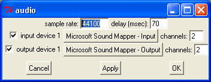
This is one of the most important configuration menus in Pd. Here you can change the sample rate, delay, input and output devices as well as the number of channels they use.
Sample rate
The sampling rate for CD quality audio is 44,100 Hz. Most computer soundcards run at this sampling rate, or at 48,000 Hz, by default. Choose the rate that matches the rate of your soundcard or audio drivers here.
Delay (msec)
Your computer needs a certain amount of time to process all the information coming out of Pd and send it to the soundcard for playback. Likewise, when you are recording, Pd needs a certain amount of time to gather all the information coming from the soundcard. The term for this delay is called latency, and it measures the amount of time between the moment when you tell Pd to do something (for example by playing a note on a keyboard), and when you hear the result of that action. A shorter latency means you will hear the results quicker, giving the impression of a more responsive system which musicians tend to appreciate. However, with a shorter latency you run a greater risk of getting an interruption or 'glitch' in the audio. This is because the computer does not have enough time to "think about" the sound before sending it to the soundcard. A longer latency means less chances of glitches, but at the cost of a slower response time. It is up to you to find the best balance for your own needs, but the default latency in Pd is 50 milliseconds. You can increase or decrease the latency of Pd by entering a value in milliseconds in this box. If you are using the JACK API, the delay will be set by your JACK audio server and manual inputs in the field 'delay' are without effect.
Input Device
Choose the soundcard you wish to use with Pd and the number of channels you want to use. In the case of a normal, stereo soundcard you would enter the number 2. For a multichannel soundcard, you may choose some or all of the channels. Make sure this is checked if you would like to record sound into Pd.
Output Device
Choose the same soundcard as you selected for the Input Device, and a matching number of channels as you selected for the Input Device as well. Although it may be possible to use different soundcards and unmatched numbers of channels for input and output on some systems, this can also cause problems for Pd, so experiment first. Make sure the checkbox next to the device is checked.
MIDI Settings
OSX : Pd -extended -> Preferences -> MIDI Settings
Linux & Windows : Media -> MIDI Settings

On Linux, you have a choice of using the built-in MIDI drivers, or the ALSA-MIDI drivers if they are installed. If you are using the built-in drivers, you should be able to choose which devices to Pd will send and receive MIDI messages with. You may also select "use multiple devices" if you have several applications or devices using MIDI. This method is rather complex, because you must set up the devices by number using your startup flags and you will not be able to change them while Pd is running. Using the ALSA-MIDI drivers is easier to manage, and therefore recommended.
When using the ALSA MIDI drivers on Linux, you can tell Pd the number of In and Out Ports to use here. These are connections which other MIDI applications or devices can use to connect to and from Pd. To connect devices or applications, you can use ALSA MIDI with the JACK audio drivers and the Qjackctl if you have them installed. In Qjackctl, you will see a tab for MIDI, and be able to connect the inputs and outputs of MIDI devices and applications by clicking on them.
On Mac OS X, to use MIDI you must first open the "Audio MIDI Setup.app", which is located in your Applications/Utilities folder. Once this application is open, and you have connected your external MIDI devices (if any), you should be able to see your MIDI devices in this window. Minimize the "Audio MIDI Setup.app" and return to Pd and this "MIDI Settings" menu. Now you will be able to choose which devices with which Pd will send and receive MIDI messages. You may also select "use multiple devices" if you have several applications or devices using MIDI.
Test Audio and MIDI
OSX, Linux & Windows : Media -> Test Audio and MIDI
To make sure that you've configured your audio and MIDI correctly, Pd includes a patch to test your setup. If you open "Test Audio and MIDI", you will see this window:
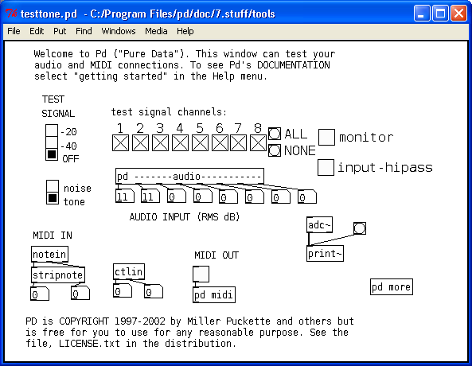
First, click one of the radio buttons marked either "-20" or "-40" under "TEST SIGNAL". If your audio is set up correctly, you will hear a test tone and you will see some of the number boxes above "AUDIO INPUT" changing to measure any incoming audio signal from the line in or microphone of your computer. If you have any external MIDI devices or a piece of MIDI software connected to Pd, you can test the connection by sending MIDI data to Pd and watching to see if the number boxes connected to [notein] and [ctlin] change.
Advanced configuration
Since Pd-Extended is installed with most of the settings, search paths and external libraries already configured, many users won't have to worry about configuring these parts of Pure Data at all. Advanced users, however, may be interested in customizing these settings. The settings which can be changed in Pure Data are the same as those available when starting from the command line:
audio configuration flags:
-r <n> -- specify sample rate
-audioindev ... -- audio in devices; e.g., "1,3" for first and third
-audiooutdev ... -- audio out devices (same)
-audiodev ... -- specify input and output together
-inchannels ... -- audio input channels (by device, like "2" or "16,8")
-outchannels ... -- number of audio out channels (same)
-channels ... -- specify both input and output channels
-audiobuf <n> -- specify size of audio buffer in msec
-blocksize <n> -- specify audio I/O block size in sample frames
-sleepgrain <n> -- specify number of milliseconds to sleep when idle
-nodac -- suppress audio output
-noadc -- suppress audio input
-noaudio -- suppress audio input and output (-nosound is synonym)
-listdev -- list audio and MIDI devices
-oss -- use OSS audio API
-32bit ----- allow 32 bit OSS audio (for RME Hammerfall)
-alsa -- use ALSA audio API
-alsaadd <name> -- add an ALSA device name to list
-jack -- use JACK audio API
-pa -- use Portaudio API
-asio -- use ASIO drivers and API
-mmio -- use MMIO drivers and API
MIDI configuration flags:
-midiindev ... -- midi in device list; e.g., "1,3" for first and third
-midioutdev ... -- midi out device list, same format
-mididev ... -- specify -midioutdev and -midiindev together
-nomidiin -- suppress MIDI input
-nomidiout -- suppress MIDI output
-nomidi -- suppress MIDI input and output
-alsamidi -- use ALSA midi API
other flags:
-path <path> -- add to file search path
-nostdpath -- don't search standard ("extra") directory
-stdpath -- search standard directory (true by default)
-helppath <path> -- add to help file search path
-open <file> -- open file(s) on startup
-lib <file> -- load object library(s)
-font-size <n> -- specify default font size in points
-font-face <name> -- specify default font
-font-weight <name>-- specify default font weight (normal or bold)
-verbose -- extra printout on startup and when searching for files
-version -- don't run Pd; just print out which version it is
-d <n> -- specify debug level
-noloadbang -- suppress all loadbangs
-stderr -- send printout to standard error instead of GUI
-nogui -- suppress starting the GUI
-guiport <n> -- connect to pre-existing GUI over port <n>
-guicmd "cmd..." -- start alternatve GUI program (e.g., remote via ssh)
-send "msg..." -- send a message at startup, after patches are loaded
-noprefs -- suppress loading preferences on startup
-rt or -realtime -- use real-time priority
-nrt -- don't use real-time priority
-nosleep -- spin, don't sleep (may lower latency on multi-CPUs)
All of the Audio and MIDI configuration flags in this list are set using the menus described above. Note that not all settings are available on all platforms (for example, there are no -asio or -mme options on Mac OS X or Linux, nor the -alsa, -oss, -pa or -jack settings on Windows, etc...)
The next most-important configuration options have to do with the external libraries which Pd loads at startup time (and thus which objects you will be able to use), as well as the locations in your file system where Pd can search for these externals and for other resources the program uses to run.
Pure Data uses a system called pdsettings to store all these options and use them every time Pd starts up. The pdsettings can be configured through various menus in the application, as we saw with the audio and MIDI settings. But they can also be configured by other tools, which are specific to each operating system.
We'll start by looking at the built-in menus for Startup and Path, and then we'll look at other methods to change the configuration options.
Startup Flags
OSX : Pd-extended -> Preferences -> Startup
Linux & Windows : File -> Startup
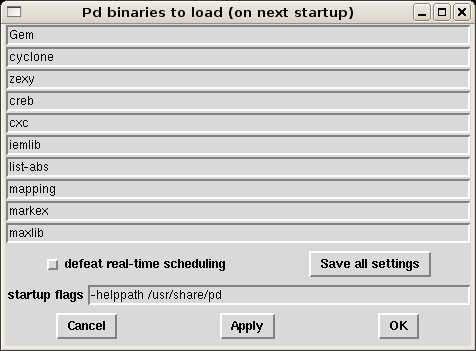
The things we want to pay attention to in this menu are the externals we load, which are listed as "Pd binaries to load (on next startup)", and whether or not we "defeat real-time scheduling".
Under "Pd binaries to load", you can make a list of the external libraries which you have installed on your system which you would like to be available in Pd. You will then be able to run these externals the next time you start Pd. Because you are using the Pd-extended distribution, this section should be completed for you with a list of the externals which come with the distribution.
If you would like to add more libraries to the ones listed, the simplest way is to add them to an existing line of the Startup menu, like so:
Gem:my_new_lib
And then click "Save all settings" and "OK". However, Pd-Extended is still a program which is under development, and this method has been noted to have some problems lately, so you may wish to try the Platform-Specific Configuration Tools below.
If you are running Pd on Linux, you may want to experiment with using "real-time scheduling" to improve the audio quality by allowing Pd faster access to the soundcard. On some systems, however, you must run Pd as the administrator of the system (i.e. "root" or "su") to have permission to do this. To use "real-time scheduling", enter the following in your "startup flags"
-rt

But keep in mind that if Pd overloads or locks up your system by using too much of the processer's resources, it can be very difficult to quit the program when using "real-time scheduling".
Users on Mac OS X should not use the "real-time scheduling" flag, and should click the box which says "defeat real-time scheduling" for better audio quality.
Path
OSX : Pd-extended -> Preferences -> Path
Linux & Windows : File -> Path
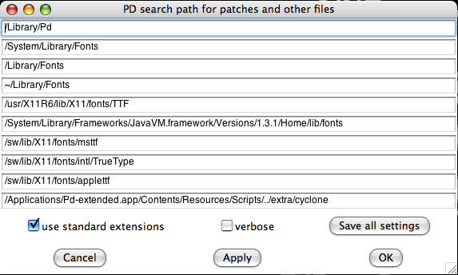
Shown here is the Mac OS X menu for setting the Paths. These are the Search Paths that Pd will use to locate external libraries, help patches, and other any patches, fonts, soundfiles, videos ar anything else which you may need while working in the program. If you would like to add more directories to the ones listed, the simplest way is to add them to an existing line of the Path menu, like this:
/Library/Pd:/home/my_name/my_new_path
And then click "Save all settings" and "OK". However, as with the Startup menu, some people have had problems using this method, so you may wish to try the Platform-Specific Configuration Tools below.
Quite a bit of this configuration has been taken care of by Pd-Extended already, so let's look at some real-world examples of when you might want to add a path. One situation would be if you want to use an audio file or a collection of audio files in your patch, but you don't want to have to specify the whole location every time it's needed in any object or message.
So, instead of typing
/home/beaver/my_soundfiles/spoken/boy/geewhiz.wav
or
/home/beaver/my_soundfiles/spoken/girl/golly.wav
you could add
/home/beaver/my_soundfiles/spoken
to your Path, and then call these soundfiles by typing:
boy/geewhiz.wav
girl/golly.wav
Another very common situation is when you would like to use a Pd patch you have saved as an abstraction (which essentially treats the saved patch like another Pd object) inside another Pd patch. In this case, you must either have the patch you wish to use as an abstraction saved in the folder as the "parent" patch you wish use it in, or you must add the folder containing the abstraction to your Path. For example the path:
/home/pdfreek/puredata/abstractions/reverb_tools
might contain various kinds of reverb abstractions that the user "pdfreek" created to be reused in other patches. For more information about abstractions, please see the DataFlow Tutorials chapter.
Finally, if you want to compile your own external Pd libraries, or use ones which you have downloaded from the internet, then you need to place the binary files (which end in .pd_linux for Linux, .pd_darwin for OS X and .dll for Windows) in a folder and add that folder to your path, such as:
~/pd/extra
where ~/ means your home directory (i.e. /home/"username" on Linux and /User/"username" on Mac OS X). Please note that in the case of name clashes (where two objects or files have the same name), the one which is loaded last takes precedence over all others. An example of this is the object [counter], which exists in several external libraries, and which has a different function in each one!
Platform-Specific Configuration Tools
Since Pd-extended and the vanilla version of Pure Data really function as separate apps, they each of their own separate files for saving configuration settings. Also, this settings file is saved with a format, name, and location that is appropriate for the operating system you are using. The locations for the Pd settings files are:
Pd-extended
- OS X: ~/Library/Preferences/org.puredata.pd.plist (~ means your home folder)
- Windows: HKEY_LOCAL_MACHINE -> SOFTWARE -> Pd-extended (using REGEDIT.EXE, etc.)
- Linux: ~/.pdextended (~ means your home folder)
Pure Data vanilla
- OS X: ~/Library/Preferences/org.puredata.pd.plist (~ means your home folder)
- Windows: HKEY_LOCAL_MACHINE -> SOFTWARE -> Pd (using REGEDIT.EXE/REGEDIT32.EXE)
- Linux: ~/.pdsettings (~ means your home folder)
Linux
Linux users may edit the file directly via command line applications such as joe, vim, pico or nano, or with whatever other text editing application comes with your distribution:
$ nano /home/derek/.pdsettings
GNU nano 1.2.4 File: /home/derek/.pdsettings
audioapi: 5
noaudioin: False
audioindev1: 0 4
noaudioout: False
audiooutdev1: 0 4
audiobuf: 50
rate: 44100
nomidiin: False
midiindev1: 0
nomidiout: False
midioutdev1: 0
path1: /home/derek/pd/rradical/memento
path2: /home/derek/pd/ix_toxy
path3: /home/derek/pd/berlin
path4: /home/derek/pd/rradical/memento/tutorial
path5: /home/derek/workshop_patches
path6: /usr/local/lib/pd/doc/5.reference
path7: /usr/local/lib/pd/extra/xjimmies
npath: 7
standardpath: 1
verbose: 0
loadlib1: pool
loadlib2: iemlib1
loadlib3: iemlib2
loadlib4: iem_mp3
loadlib5: iem_t3_lib
loadlib6: OSC
loadlib7: zexy
nloadlib: 7
defeatrt: 0
flags: -alsamidi -rt
[ Read 31 lines ]
^G Get Help ^O WriteOut ^R Read File ^Y Prev Page ^K Cut Text ^C Cur Pos
^X Exit ^J Justify ^W Where Is ^V Next Page ^U UnCut Txt ^T To Spell
Remember that if you add a new path or loadlib, then you will need to give it a number higher than the last existing one, and you will need to change the npath or nloadlib to the number of new paths or loadlibs you have added. In the above pdsettings, to add the loadlib pdp, you would have to add/change the following:
loadlib8: pdp
nloadlib: 8
OS X
OS X users may wish to try using the Property List Editor.app, which can be installed from the XCode Tools or Server Tools CDs available for free from Apple:
http://developer.apple.com/tools/xcode/
Here is the Property List Editor, with the org.puredata.pdextended.plist file open:
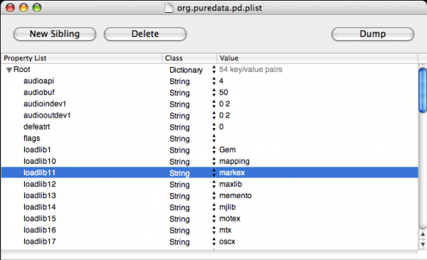
You can click directly in the Value field to change a value, or use the New Sibling button to add a new line.
The command line utility defaults can also be used. The following line in the terminal lists all the pdsettings in org.puredata.pdextended.plist:
defaults read org.puredata.pdextended
The following command can be used to write a new line to pdsettings:
defaults write org.puredata.pdextended loadlib30 test
and this command can be used to delete one line from pdsettings:
defaults delete org.puredata.pdextended loadlib30
In this case, loadlib30 represents the next possible line that could be added to load a library (29 libraries are loaded already), and test represents a hypothetical library which we add to the startup in the first case using the write command, and remove from the startup in the second case by using the delete command. For more information about defaults, type:
defaults --help
Windows
Windows users may also use the REGEDIT program to edit their pdsettings. This program comes with the Windows operating system, and can be located under the name REGEDIT.EXE or REGEDT32.EXE (Windows XP or newer). Please note: manually editing the Windows Registry files using a text editor instead of REGEDIT is generally considered unsafe, since errors here can disrupt the entire operating system! Those interested in more details about the Registry should read:
http://en.wikipedia.org/wiki/Windows_Registry#Editing

Starting Pure Data
Now that you have Pd-Extended installed on your computer and configured, let's look at different ways to start it--from simply clicking an icon through starting from the command line and adding different startup flags or using a script to save different sets of startup information.
Starting via an icon
There are two ways of starting Pure Data. The way that will be used most commonly on Windows or Mac OS X will be to click on the icon which the installer put in your "My Programs" or "Applications" folder. On Windows, this is "Start -> Pure Data -> Pure Data".

On Linux, your system may also have a menu bar, such as "Programs/Multimedia" or "Programs/Sound" where Pd can be started by clicking the menu item.
Starting via command line
The other way is to open Pd from the terminal or shell via a command line. This is most often done on Linux, but it can be done this way on any platform. To do this, one must know the location of the Pd application on his/her system, which can be different depending on where Pd was installed.
Linux (from xterm)
/usr/local/bin/pd
Mac OSX (from Terminal.app)
/Applications/Pd-extended.app/Contents/Resources/bin/pd
Windows (from the DOS shell or Command Prompt)
C:\Program Files\pd\bin\pd.exe
Why would we want to open Pd by command line? The most common reason would be is if we wanted to use a different set of flags than the default ones. For example, if you were using Pd in a live performance, and you wanted it to open up the same patch whenever you started it in this situation, you might use the command:
/usr/local/bin/pd -open /home/pdfreek/liveset.pd
Which would start Pd and open the patch liveset.pd. You could also add other startup flags, such as which soundcard and drivers to use, which external libraries to load or which search paths to add. Flags are additional pieces of information which can alter the configuration of Pd for that particular startup, rather than the pdsettings which we looked at in the ConfiguringPd chapter, which affect the program every time it starts.
Like almost any program launched by command line, you can add the flag "--help" to see a long list of configuration options, which gives you some idea of the different possibilities for starting up Pd:
$ /Applications/Pd-0.39.2-extended-test4.app/Contents/Resources/bin/pd --help
usage: pd [-flags] [file]...
audio configuration flags:
-r <n> -- specify sample rate
-audioindev ... -- audio in devices; e.g., "1,3" for first and third
-audiooutdev ... -- audio out devices (same)
-audiodev ... -- specify input and output together
-inchannels ... -- audio input channels (by device, like "2" or "16,8")
-outchannels ... -- number of audio out channels (same)
-channels ... -- specify both input and output channels
-audiobuf <n> -- specify size of audio buffer in msec
-blocksize <n> -- specify audio I/O block size in sample frames
-sleepgrain <n> -- specify number of milliseconds to sleep when idle
-nodac -- suppress audio output
-noadc -- suppress audio input
-noaudio -- suppress audio input and output (-nosound is synonym)
-listdev -- list audio and MIDI devices
-jack -- use JACK audio API
-pa -- use Portaudio API
(default audio API for this platform: portaudio)
MIDI configuration flags:
-midiindev ... -- midi in device list; e.g., "1,3" for first and third
-midioutdev ... -- midi out device list, same format
-mididev ... -- specify -midioutdev and -midiindev together
-nomidiin -- suppress MIDI input
-nomidiout -- suppress MIDI output
-nomidi -- suppress MIDI input and output
other flags:
-path <path> -- add to file search path
-nostdpath -- don't search standard ("extra") directory
-stdpath -- search standard directory (true by default)
-helppath <path> -- add to help file search path
-open <file> -- open file(s) on startup
-lib <file> -- load object library(s)
-font <n> -- specify default font size in points
-typeface <name> -- specify default font (default: courier)
-verbose -- extra printout on startup and when searching for files
-version -- don't run Pd; just print out which version it is
-d <n> -- specify debug level
-noloadbang -- suppress all loadbangs
-stderr -- send printout to standard error instead of GUI
-nogui -- suppress starting the GUI
-guiport <n> -- connect to pre-existing GUI over port <n>
-guicmd "cmd..." -- start alternatve GUI program (e.g., remote via ssh)
-send "msg..." -- send a message at startup, after patches are loaded
-rt or -realtime -- use real-time priority
-nrt -- don't use real-time priority
To learn more about Pd's startup options, please see the Configuring Pd chapter.
Starting from a script
Once you have created a command line for your specific situation, you can save that command as a script, which is a short file containing a list of commands, which can be run by typing its name in the terminal or shell. The exact format of your script depends on which operating system you use.
Windows
Windows uses the DOS language for its commands, so we must create a .bat (DOS batch) file containing the location of the Pd program and the startup flags we want to use. Using a simple text editor, make a file named "pdstart.bat", and place the following in it, for example
"c:\pd\bin\pd.exe" -font 10 -path "c:\pd\doc\vasp" -lib cyclone -lib iem_t3_lib -lib iem_mp3 -lib mjLib -lib OSC -lib percolate -lib vasp -lib xeq -lib xsample -lib zexy -lib iemlib1 -lib iemlib2 -listdev %1 %2 %3 %4 %5 %6 %7 %8 %9
Though it may appear to be many lines, this command must in fact be one long line with no breaks. If the version of Windows you are running has a "Save as type" option, choose the type "All files" to prevent your .bat file from being saved as a text file. Once this is saved, you can double-click on the file to run it.
Linux and OS X
Since both Linux and OS X use the same Unix-type system to interpret and run command lines, the process for creating a script is the same for both. In your favorite text editor, create a new file and start it with the line:
#! /bin/bash
which tells the operating system that what it is reading is a script, and that it will use the bash command line interpreter. On the line below that, copy this or a similar line:
/usr/local/lib/pd -font 10 -path /home/pdfreek/pd/my_abstractions -lib cyclone -lib iem_t3_lib -lib iem_mp3 -lib mjLib -lib OSC -lib percolate -lib vasp -lib xeq -lib xsample -lib zexy -lib iemlib1 -lib iemlib2 -open /home/pdfreek/pd/liveset3.pd
This should be all in one line, with no breaks. Please note that you should give it the correct path to the Pd program in the beginning (which could be different if you are running OS X for example), and you should replace the example flags with ones of your own.
Once you have written and saved this file with the .sh (shell script) file extension, such as "start_pd.sh", you must make it executable as a script with the following command:
chmod +x start_pd.sh
After you have done this, you can start this script, which will run Pd with all the flags you have added to it, by typing:
sh start_pd.sh
Some Linux window managers such as KDE or Gnome may support double-clicking to start shell scripts either by default or by selecting the default application. On OS X, you could configure the Finder to open .sh files with the Terminal.app by default (but then you would have to manually chose to open them with TextEdit.app for editing later on).
Advanced scripting for starting Pd
One of the beautiful things about the Unix system, which both Linux and OS X are based on, is that it is designed to allow many applications to communicate with each other and work together. This means that shell scripts can be constructed to do an enormous amount of tasks.
For example, the following script for Linux starts the JACK audio server (with some flags of its own), opens the Qjackctl interface for JACK and then starts Pd with the -jack flag and the -open flag listing two specific files:
#! /bin/bash
jackd -d alsa -d hw -r 44100 -p 1024 -s &
/usr/bin/qjackctl & sleep 5 ; /usr/local/bin/pd -jack -open /home/derek/pd/delnet/delaynet.pd:/home/derek/pd/echoplex_footswitches/midiswitches.pd
The ampersand (&) between the commands means that the command preceeding it will be run in the background. In other words, the previous command will keep running while we execute the next ones, instead of quitting. The section "sleep 5" tells the shell to wait 5 seconds before running the next command, in this case in order to give JACK time to start up. The semicolon (;) is used to seperate jobs, meaning that the next command won't be run until the previous one is finished (in the case of "sleep 5") or sent to the background (in the case of the ampersand symbol).
This script could be expanded to open other applications (in the following case, the looping application SooperLooper), use the aconnect application to make ALSA MIDI connections from Pd to SooperLooper, and use the jack_connect command to make audio connections between Pd, SooperLooper and 6 channels of a sound card via the JACK audio server:
#! /bin/bash
jackd -d alsa -d hw -r 44100 -p 1024 -s &
/usr/bin/qjackctl & sleep 5 ; /usr/local/bin/pd -jack -open /home/derek/pd/delnet/delaynet.pd:/home/derek/pd/echoplex_footswitches/midiswitches.pd & sleep 5 ; /usr/local/bin/sooperlooper -L /home/derek/pd/echoplex_footswitches/3loops.slsess -m /home/derek/pd/echoplex_footswitches/3loops.slb & sleep 5 ; /usr/local/bin/slgui & sleep 5 ; aconnect 'Pure Data':1 'sooperlooper_1':0 ; jack_connect alsa_pcm:capture_1 sooperlooper_1:common_in_1 ; jack_connect alsa_pcm:capture_2 sooperlooper_1:common_in_2 ; jack_disconnect alsa_pcm:capture_1 pure_data_0:input0 ; jack_disconnect alsa_pcm:capture_2 pure_data_0:input1 ; jack_disconnect alsa_pcm:capture_3 pure_data_0:input2 ; jack_disconnect alsa_pcm:capture_4 pure_data_0:input3 ; jack_connect alsa_pcm:capture_3 pure_data_0:input0 ; jack_disconnect pure_data_0:output0 alsa_pcm:playback_1 ; jack_disconnect pure_data_0:output1 alsa_pcm:playback_2 ; jack_disconnect pure_data_0:output2 alsa_pcm:playback_3 ; jack_disconnect pure_data_0:output3 alsa_pcm:playback_4 ; jack_connect pure_data_0:output0 alsa_pcm:playback_7 ; jack_connect pure_data_0:output1 alsa_pcm:playback_8 ; jack_connect sooperlooper_1:loop0_out_1 alsa_pcm:playback_1 ; jack_connect sooperlooper_1:loop0_out_2 alsa_pcm:playback_2 ; jack_connect sooperlooper_1:loop1_out_1 alsa_pcm:playback_3 ; jack_connect sooperlooper_1:loop1_out_2 alsa_pcm:playback_4 ; jack_connect sooperlooper_1:loop2_out_1 alsa_pcm:playback_5 ; jack_connect sooperlooper_1:loop2_out_2 alsa_pcm:playback_6
Detailed syntax for aconnect and jack_connect can be found by typing:
aconnect --help
or
jack_connect --help
Bash shell scripting is a huge area to investigate, curious readers are encouraged to check out one of the many websites and books detailing the Bash environment.
The Interface
Now that Pd is installed let us look at the result when the main Pd window opens.
Main Pd Window
As of Pd 0.39, all of the messages that Pd produces are sent to the main Pd window (before this, they were sent to the shell which was running Pd). When you start Pd, this main Pd window should tell you important information, such as the externals you are loading and whether any errors occurred while loading them, as well as any errors connecting to the soundcard. Later, you will also use this main Pd window to see information about the patch you are working on, as well as for debugging (correcting errors in your patch). So keep this window in a place where you can find it on your screen.
Here is an overview of common messages that you will encounter in the Main Pd Window:
[import] tells details of the current version on Pd-extended, in this case 'Pd version 0.14.4 extended.'
GEM: describes the details of the Graphics Environment of Multimedia available.
libdir_loader: itemizes the various libraries loading into Pd-extended. This screen grab shows about 20% of the libraries that are loading.
Error example: If you were reading the Pd window on a Mac, the Pd window might tell you that you did not have X11 library that is an application to display unix programs, a desirable component of Pd. See how that error message appears in the chapter InstallingOSX "Status: X11 Library not loaded."
There are a few other important features about this main Pd window. At the top of the window, you will find audio level indicators that provide a general idea of the loudness of the sound that you are sending to the soundcard. If this level goes to 100 or higher, you are sending too high a level and you will hear a distorted sound. The boxes marked "Clip" will also flash red. To use the audio level meters, check the box that says "peak meters" in the main Pd window.
Also found on the top part of the Main Pd Window is a box marked "compute audio", which you can use to turn on and off audio processing. When you open the "Test Audio and MIDI" patch, Pd will automatically turn audio processing on for you.
Last is a box marked "DIO". This stands for Digital In Out errors, and this box should flash red when Pd has difficulties sending data to your sound card. If you click this box, Pd will print a list of times when these DIO errors occurred in the main Pd window. The "console" box oggles the text displayed in the Pd window.
Help Browser Window
The last thing to point out before getting started with a new patch is the "Help" menu. You can access this resource from the "Help" menu on the top navigation bar. Under this drop-down menu, you can open the official Pd manual, written by Miller S. Puckette in "HTML" format, which can be viewed in your web browser. You can also open a file "Browser", pictured above, which will list the built-in help patches which come with Pd. </p
All of these documents are valuable resources, however many newcomers to Pd can find them confusing. We will cover some of these basics in the "Dataflow", "Audio" and "Patching Strategies" tutorials in this manual, after which you can return to the built-in help files with a bit better understanding.
Starting a new Patch
Under the "File" menu in the main Pd window, create a "New" Pd patch. It should look something like this:
Unlike other software for creating audio or video media, such as Ableton Live, CuBase or Final Cut Pro, where a new file shows you a variety of buttons, menus and timelines, Pd gives you a blank, white space. Within that white space, you can make a synthesizer or video mixer, translate sensor input into the movements of a robot or stream movies to the internet, for example. The difference between Pd and software like Live is that it doesn't start with any preconceived ideas about how to make your artwork. Where Live provides you with a set of tools suited primarily for the production of loop-driven dance music, Pd acts more like a text editor where anything is possible, so long as you know how to write it. It is this kind of possibility and freedom that attracts many artists to using Pd.
To explore these possibilities, you must understand Pd as being a written language like German or Chinese. As in any language, Pd has a vocabulary (the words used in the language) and a grammar (the way to put these words together so that they make sense). And like learning any language, you first have to learn how to say simple things like "What is your name?" before you can write poetry! So let's start simple.
You will notice that once we have opened a new Pd patch, there are a few new menu items to choose from. The "Edit" menu has all the kinds of functions you would expect from a text editor like Notepad, TextEdit, OpenOffice or Word, such as "Cut", "Paste", "Duplicate", "Select All", etc etc.
There is also a "Put" menu, containing a list of the kinds of things you will be putting in your patch, such as "Object", "Message", "Number", "Symbol", "Comment" and a range of GUI (Graphical User Interface) elements such as "Bang", "Toggle", "Slider", etc.
Interface differences in Pure Data
While the main functionality of Pure Data doesn't change between operating systems, the locations and contents of some of the menus do. Depending on the system you are running, you will be able to do the following:
Linux
From the "File" menu, you can:
- Create a "New" Pd patch
- "Open" a Pd patch which is saved on your computer
- Send a "Message" to the running Pd application
- Set the search "Path" which Pd uses
- Change the "Startup" flags which Pd uses
- "Quit" Pd
From the "Find" menu, you can:
- "Find last error" which occurred in the program
From the "Windows" menu, you can:
- Change between the different open Pd patches
From the "Media" menu, you can:
- Turn audio "ON" and "OFF"
- Change between the different available audio drivers
- Change between the different available MIDI drivers
- Change the "Audio Settings"
- Change the "MIDI Settings"
- "Test Audio and MIDI"
- View the CPU "Load Meter"
And from the "Help" menu, you can:
- Read information "About Pd"
- Open a "Browser" to see some help patches which are included in Pd
Mac OS X
From the "Pd" menu (which should contain the version number as well), you can:
- Read information "About Pd"
- Change the following "Preferences":
- Set the search "Path" which Pd uses
- Change the "Startup" flags which Pd uses
- Change the "Audio Settings"
- Change the "MIDI Settings"
- Quit" Pd
From the "File" menu, you can:
- Create a "New" Pd patch
- "Open" a Pd patch which is saved on your computer
- Send a "Message" to the running Pd application
- "Quit" Pd
From the "Find" menu, you can:
- "Find last error" which occurred in the program
From the "Media" menu, you can:
- Turn audio "ON" and "OFF"
- Change the "Audio Settings"
- Change the "MIDI Settings"
- "Test Audio and MIDI"
- View the CPU "Load Meter
From the "Windows" menu, you can:
- Change between the different open Pd patches
And from the "Help" menu, you can:
- View the author's documentation as an HTML file
- Open a "Browser" to see some help patches which are included in Pd
Placing, connecting and moving Objects in the Patch
Use the "Put" menu to place an "Object" in your patch. Click on the patch to drop the object in its place. You will see a box made of a broken blue line, with a flashing cursor inside indicating that you should type something there.

Objects are the "vocabulary" of Pd. The more names of objects you know, the more complicated things you can do with Pd. If you type the word "print" inside this object and click again outside the box, you will create the [print] object. </p?
Return to the "Put" menu, and this time place a "Number" in your patch. Notice that the shape of the number box is different from the shape of the object box.

To get help associated with a specific object you can right-click it. or use the Control key and click on OS X. Then just select "help" from the drop-down menu (pictured below). This is something like the "dictionary entry" for the object, and should define what it does and also show several examples of its use.
You should also notice that both the object and the number boxes have small rectangles at the corners. If these are at the top of the object, they are called "inlets", and at the bottom they are called "outlets". When you are working on your patch, your cursor is shaped like a pointing finger. If you put that finger over an outlet, it changes into a black circle which indicates that the outlet is selected.
Select the outlet of the the number box, click and drag that black circle until it reaches the inlet at the top of the [print] object. When you have done that, you will see the cursor change from the pointing finger to the black circle again. If let go of the mouse button now, you will make a connection from the outlet of the number box to the inlet of [print]. If you want to remove this connection, place your cursor over the connection until you see a black X and then click. The connection will turn blue and you can remove it with the Backspace or Delete key on your keyboard.

If you click on the patch away from the number box and [print] object and drag, you can draw a box which selects them. You will see they are selected because they will turn blue. Single objects can be selected by clicking once on them.
Once the objects on screen are selected, you can:
- Move them by dragging them with the mouse
- Move them in small increments with the Arrow keys
- Move them in larger increments with the Shift and Arrow keys
- Delete them with the Backspace or Delete keys
- Copy them by using the Control and C keys (Apple and C keys on OS X) or the Copy menu item under Edit
- Cut them by using the Control and X keys (Apple and X keys on OS X) or the Cut menu item under Edit
- Once Cut or Copied, you can Paste them with the Control and V keys (Apple and V keys on OS X) or the Paste menu item under Edit
- You can also Duplicate the selected items with the Control and D keys (Apple and D keys on OS X) or the Duplicate menu item under Edit
It is recommended to use the duplicate function rather than the paste function, because pasted objects are placed directly on top of the previous object, making it difficult to see them. Duplicated objects are placed to the lower right side of the original, making them easier to find and move.
Pasted or duplicated objects are automatically selected together, so you can grab ahold of them and move them immediately after placing them in the patch.
Edit Mode and Play Mode
So far we've been able to put objects in the patch, connect them, move them around or delete them. But how does one get some results from this patch? In this case, we have connected a number box to a [print] object, which should print the numbers we send to it in the main Pd window. Now we have to learn how to send numbers to the print object.
To make this happen, we need to change out of "Edit Mode" and into "Play Mode". You can do this by clicking on the "Edit Mode" item in the Edit menu, or by using the Control and E keys (Apple and E keys on OS X).
When you enter into "Play Mode", you will see that the pointing finger cursor changes into an arrow cursor. This change signifies that the mouse will interact differently with the elements within the patch.
Now, if you click inside the Number object and drag your mouse up or down you can change the numbers inside of it. Any changed number is sent out through the outlet to any connected objects. Since the object is connected to the inlet of the [print] object the number is printed to the main Pd window.
If you hold the Shift key while using the mouse to change the number, you will scroll through decimal numbers. Using the Alt key plus a mouseclick will toggle the Number box between 0 and 1. You can also change the number by clicking once on the number box, using your keyboard to change the value, and then pressing the Enter key to send the value to the outlet.
If you want to make any changes to a patch that is "Play Mode", you have to switch back to "Edit Mode". To do so, use the "Edit Mode" menu item or the key combination Control (or Apple) and E. Note that you are automatically placed in Edit Mode whenever you add any new item from the "Put" menu to your patch.
Messages, Symbols and Comments
The "Message" box is used to store and send information to other objects, and can contain numbers or text. It also has a unique shape, which resembles an envelope like you would use to send a letter. Place two different messages above the number box in our exercise. Like the object, messages also give a flashing cursor indicating that you should enter some information when you create them. Enter "2" in one of the messages and "4" in the other, and connect both to your number box. Switch to Play Mode and click on each of the messages. When you do, you will see that the number box changes according to the message that you send it, and that the message is also sent onwards to the [print] object.
You can also send numbers and other information to the message box. Create a message with the text "$1 is a beautiful number", and connect it to the [print] object. Then connect a Number to the inlet of the message, and in Play Mode change the value of the number. You will see in the main Pd window that whatever number you send to this message replaces the $1. This is because $1 is a "variable", and will take the value of whatever you send to it. This is important because different objects need to be sent different messages in order to do things. We will look at more uses for messages and variables later in the Dataflow Tutorial.

A "symbol" is another way of storing and sending information. Once created, you can use it to display the output of some objects, or you can type directly into it and hit Enter to send the text out. Please note that no spaces will appear in the symbol box when you type into it, since separate words would be considered separate symbols.
A "comment" is simply a way of making a note to yourself so that you (or someone else) can understand what you were trying to do later on. You can make as few or as many as you want, and they have no effect on the patch itself.

GUI Objects
Pd has a number of GUI objects you can use to graphically control your patch and to improve its visual appearance. These are:
- Bang: this GUI object sends a Message named "Bang" every time it is clicked. "Bang" is a special message, which many Objects interpret as "do an action right now!". Using the Bang GUI object is the same as creating a Message box with the word Bang in it. The Bang GUI object can also be used to receive and display Bang messages. For more information on this, see the "Counter" chapter in the Dataflow Tutorial.
- Toggle: when clicked, the Toggle sends out one of two values--a zero when it is unchecked and a non-zero number when it is checked. The non-zero number is 1 by default, however this can be changed in the "Properties". The Toggle also has an inlet, which can be used to display whether an incoming number is zero or not.
- Number2: this is almost identical to the Number box, however it has further options in its "Properties", including the ability to save its current value when the patch is saved (by changing the "no init" box to "init"). The Number2 has an inlet which can be used to display incoming numbers as well.
- Vslider and Hslider: these are Vertical and Horizontal sliders which send out their current value when moved with the mouse. The default range of a slider is 0-127, which can be changed in the "Properties". Both sliders have an inlet which can be used to display incoming numbers within the range of the slider.
- Vradio and Hradio: these are Vertical and Horizonal "radio buttons", which send out their current value when one of the buttons in them is clicked with the mouse. The default size of a radio button is 8 buttons, which can be changed in the "Properties". Both types of radio buttons have an inlet each, which can be used to display integer (whole) numbers within the range of the radio buttons.
- VU: a VU meter displays the average volume level of any audio signal which is connected to it in Decibels. You may switch the value scale on the right side on and off in the "Properties".
- Canvas: a canvas is a rectangular area of pixels, whose size and color may be changed under its "Properties". Canvases are useful as backgrounds in your patch to improve its visual appearance and readability. Canvas also can be used as movable GUI objects that gather information about their position (x,y) inside a patcher. Keep in mind that Pd remembers the order in which anything is placed in the patch, so if you want your canvas to be behind certain objects, you must either create it first, or you must Select, Cut and Paste the objects you want in the foreground so that they appear in front of the canvas.
GUI Object Properties
If you right-click (or Control and click on OS X) on any GUI object, you will see the "Properties" menu. Here, you can change many aspects of each GUI object, such as its default values, size in pixels or its color. To change colors on Linux and Windows you should see a selection of available colors. On OS X these boxes are empty, so you must click on the "Compose Color" button. You can also add a label to your GUI object as well as set the Send and Receive symbols. For more information on Send and Receive, please see the Send/Receive chapter of the Patching Strategies tutorial.

Arrays and graphs
An "array" is a way of graphically saving and manipulating numbers. It works in an X/Y format, meaning you can ask the table for a value by sending it a value representing a location on the X (horizontal) axis, and it will return the value of that position value on the Y axis.
To create an Array, use the "Put" menu. When the new array is created, you will see two menus where you can change the properties of the array.
In the "canvas" properties menu, you can set the "X range" and "Y range", which represent the length in units of each axis, as well as the visual size of the array in pixels. In the "array" properties menu, you can set the "size" of the Array, which represents its length on the X axis, as well as it's name. Each Array you create must have a unique name, otherwise you won't be able to read from them.
Once an array is created and you are in Play Mode, you can click on the line inside and draw curves into the array. Arrays can also be filled with information from datafiles or soundfiles on your computer, as well as with mathematical functions. We'll discuss arrays in more detail in the arrays chapter of the Dataflow Tutorial.
Graph
A "graph" is simply a container a graphical container that can hold several arrays. An array needs a graph to be displayed, so whenever you create an array from the menu, you will be asked whether you want to put it into a newly created graph or into an existing graph.
A Note on using GUI Objects
Pd uses a "vector-based" system for drawing the user interface. That means that every element on the screen is defined by a set of numbers rather than an image, and every change to these elements means that your computer must recalculate that part of the screen. For this reason, having a lot of GUI elements which are constantly changing is not recommended, as it can cause interruptions in the audio or slow down the response time of the interface.
In particular, be careful not to use too many of the following:
- VU meters
- Graphical bangs, number boxes, sliders or radio buttons with rapidly changing inputs
- Arrays which are visible on the screen and which are redrawn
For a way of "hiding" GUI elements when they are not in use, please see the Subpatches and Abstractions chapters of the Patching Strategies Tutorial. And for a way of "hiding" the connections between GUI elements, please see the Send/Receive chapter of the Patching Strategies Tutorial.
Troubleshooting
There are many small things that might not work straight away. Here are some of the most common issues you might come across.
I don't hear any sound!
First make sure that the box marked "compute audio" is checked in the main Pd window. Then check to see that you have selected the right soundcard and drivers for your system, and that the soundcard is connected and operating. On OS X, make sure the check-boxes next to your selected soundcard have been checked in "Audio Settings". On Linux or OS X with Jack, make sure the Jack application is running. On all platforms, check the audio control panel which comes with your Operating System and make sure the proper output is enabled there, and that its playback volume is turned up. Also make sure you are using the correct sampling rate in Pd to match that of your soundcard.

Left: the "compute audio" button in the main Pd window. Right: the "Audio Settings" dialog.
There are clicks, glitches or crackles in the test tone!
More than likely you have chosen a latency that is too fast for your computer and soundcard to handle. Return to the "Audio Settings" menu and increase the "delay" time there. On Linux, it is also possible that other processes running on your computer, or even a badly configured or slow graphics card, can affect the performance of Pd. Consider running Pd with the "-rt" flag enabled (Linux only!). This can be done from the command line, or by adding "-rt" to the "startup flags" under the "Startup" menu. On Linux or OS X with Jack, it is possible to set the latency of the Jack application to a greater amount and reduce glitches (called "xruns" in Jack) there as well.
The test tone sounds distorted!
It is possible that you are playing the sound too loud for your soundcard. Using the controls of your soundcard to reduce the playback volume. Also make sure you are using the correct sampling rate in Pd to match that of your soundcard.
I'm not seeing any audio input!
Perhaps you did not enable sound input. On OS X, make sure the check-boxes next to your selected soundcard have been checked in "Audio Settings". Also, some cards with an uneven number of in and out channels can have problems in Pd. Try setting the number of channels the same for the input and output. On all platforms, check the audio control panel which comes with your Operating System and make sure the proper input is enabled there, and that it's recording volume is turned up.

The QJackCTL application on Linux allows easy routing of audio signals between applications and the soundcard, or between applications on the same computer.
I don't see any MIDI input!
Check to see that your MIDI devices or programs are actually sending data, and that your Operating System is correctly sending this data to Pd. On OS X, check to see that you have selected the proper MIDI devices, and that the "Audio MIDI Setup.app" was running before you started Pd. On Linux using the default MIDI drivers, check to see that you selected the proper MIDI device at startup. On Linux with the ALSA-MIDI drivers, make sure you have properly connected your MIDI devices or MIDI programs to Pd. Using Jack with the "QJackctl" application is recommended for this purpose. On Windows, consider using an application like MIDI Ox/MIDI Yoke Junction to see, analyze and manage your MIDI connections.

The "MIDI Settings" dialog.

It is necessary to have the "Audio MIDI Setup" application on OSX running in to connect MIDI hardware and software ports to Pure Data.

QJackCTL also allows Linux users to route ALSA MIDI between applications and hardware MIDI ports.
I get the message "... couldn't create" when I type an object's name and there's a dashed line around my object!
The reason for this error is that you have asked Pd to create an object which does not exist. There can be several reasons for this error, and the most common one is spelling. Object names in Pd must be spelled correctly, and they are case sensitive. [Osc~] or [OSC~] will not create in place of [osc~], for example, nor will [osc] without the tilde. Sometimes users accidentally combine the creation argument and the object name, such as [+1] instead of [+ 1]. A creation argument is additional information given to an object and sets the parameters for it.
New Pd users also often get confused between Objects and Messages, which are very different types of elements that can be placed in the patch from the "Put" Menu. You can use the "Find last error" function under the "Find" menu to track down which objects did not create. Please see the chapter called "The Interface" for more details.

I get the message "... couldn't create" when I open a patch and there's a dashed line around my object!
If you get this error when opening a patch which you're pretty sure works otherwise (i.e. you've downloaded it from the internet or you created it in a previous Pd session), then it's likely that there is an External Object which was available when the patch was created, but is not available now. You can use the "Find last error" function under the "Find" menu to track down which objects did not create. Pd will preserve the location and connections of an object which fails to create, but it will not function. While most of the Pd Externals are available in the Pd Extended distribution, some are not, or require additional configuration of the "Path" and "Startup" settings. Please see the relevant sections in the "Configuring Pd" chapter. If the External is not available in Pd Extended, you may need to install it yourself.
I get the message "error: signal outlet connect to nonsignal inlet (ignored)" when I open a patch.
This error tends to go with the previous error "I get the message '... couldn't create' when I open a patch...". Often this error means that an object has failed to create, usually because it uses an External Object which is not available in the current installation or configuration of Pd. Pd will preserve the location and connections of an object which fails to create, but it will not function. You can use the "Find last error" function under the "Find" menu to track down which objects caused errors. Pd will treat uncreated objects as Dataflow Objects even if they were originally Audio Objects, so this error will follow the previous one. Please see the relevant sections in the "Configuring Pd" chapter for information about setting the "Path" and "Startup" options. If the External is not available in Pd Extended, you may need to install it yourself.
I get the message "error: can't connect signal outlet to control inlet" and I cannot connect two objects together!
The output of Audio Objects (those with a tilde ~ in their name) normally cannot be connected to Dataflow Objects (those without a tilde ~ in their name). So Pd will not allow these connections to be made. You might want to look at your patch and make sure that you are using the proper combination of objects.
I get the message"error: DSP loop detected (some tilde objects not scheduled)" when I click "Audio ON", and the sound is not working!
In an analog electronic system, you can easily connect the output of a mixer back to one of the inputs, turn up the channel and get feedback. This is because everything in an analog system happens pretty much simultaneously. Computers do not work like this, however, and therefore you cannot ask a Pd patch to compute results based on it's own simultaneous output. Pd works in what are called Blocks (i.e. a group of samples, such as the default number of 64 samples), and all the Samples in each Block must be computed before they are output. So a DSP loop occurs when a patch needs information which is calculated inside the same Block in order to create output. You can use the "Find last error" function under the "Find" menu to track down which objects are causing the DSP loop. The easiest way around this problem is to create at least a one Block delay between the objects which are connected together. The objects [send~] and [receive~] are useful for this, because they have a built-in delay of one Block. To change the number of Samples computer in each Block, you can use the [block~] object.
I get the message "error: stack overflow" when I connect two Dataflow Objects together!
A "stack overflow" happens when you have asked Pd to compute a recursive operation, and this operation causes Pd to run out of memory. Often this is the first step before crashing Pd! A common example of a recursive operation which could cause this error is the classic counter, using [float] and [+ 1]. A [float] stores a floating point number on its right inlet, and outputs the result when it receives a bang. If the output of [float] is connected to the input of [+ 1], and the output of [+ 1] is connected to the right-most ("cold") inlet of [float], then a "bang" message sent to the left-most ("hot") [float] will output a number which increases by one every time that message is sent.
If, however, the output of [+ 1] is connected to the left-most ("hot") inlet of [float], then sending the message "bang" to the left inlet of [float] will have a different effect. It will ask [float] and [+ 1] to add numbers together as fast as the computer will let them do it. Because Pd will not stop and ask you "are you sure you want to do this?", this operation will quickly use up all the memory resources which Pd has, and cause a stack overflow. Please see the sections on "Hot and Cold" as well as on "Trigger" in the "Dataflow Tutorials" section for more information on how to avoid stack overflows.
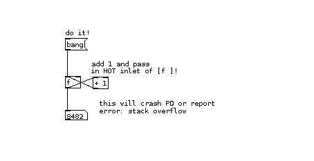
I get the error message "connecting stream socket: Network is unreachable" when I start Pd!
If you are using the Linux operating system, and see this message when you start Pd, it means your machine cannot make a network connection to itself. You must configure your loopback network device. In many Linux distributions, you can do this by answering "yes" when the system configuration tools ask if the machine will be a "network" (even if it won't).
Building a Simple Synthesizer
This tutorial uses the concept of simple electronic musical instruments to introduce some of the core concepts of synthesizing and processing audio in Pure Data. Those who are already familiar with audio synthesis should quickly grasp how it works in Pd, while those with no previous knowledge will be introduced to its theory alongside its practical application in Pd.
The MiniMoog is one of the most famous analog synthesizers in the world. We'll take a shot at reproducing some of its basic features in this tutorial. Source: http://en.wikipedia.org/wiki/Image:Minimoog.JPG
A synthesizer is one of the most fundamental instruments in electronic music. Its essential function is to generate a musical tone when it receives a note from either a keyboard or a sequencer. In analog electronic music, a synthesizer is built from several modules, or parts:
- The Oscillators, which generate the tones.
- The LFO (Low Frequency Oscillator), which usually modulates either the frequency or gain of the Oscillator(s), or the frequency of the Filter.
- The Filter, which emphasizes and/or removes certain frequencies.
- The Envelope Generator, which controls changes in frequency or gain over the duration of the note.
- The Amplifier, which controls the gain of the synthesizer.
Synthesizers can be capable of playing one note at a time (monophonic), or several notes at a time, allowing for chords (polyphonic). The number of simultaneous notes that a synthesizer can play are called its voices. Originally, the word "Voltage" was used (i.e. Voltage Controlled Oscillator, Voltage Controlled Filter or Voltage Controlled Amplifier) because in an analog synthesizer each of these modules was controlled by electrical voltage from the keyboard, sequencer or another module. Because we're working in the digital domain, this voltage is replaced by data in the form of numbers, messages and streams of digital audio.
For this tutorial, we will construct a monophonic synthesizer in Pd based roughly on the design of the famous MiniMoog analog synthesizer (but much simpler!), and with a sound which is useful for generating basslines. It will take input from the computer keyboard, a MIDI keyboard or the sequencer we will build in the the next tutorial. This synthesizer will be based on two Oscillators to produce the note, another oscillator (the Low Frequency Oscillator) which will change the gain of the sound, a Filter which will only allow only certain frequencies of the sound to pass, an Envelope Generator which will control the "shape" of the gain of the note, and a final Amplifier which will be controlled by the Envelope Generator and a volume setting on the screen.
Downloads
The patches used in this tutorial can be downloaded from :
http://en.flossmanuals.net/floss/pub/PureData/SimpleSynthesizer/simple_synth.zip
Oscillators
Oscillators are the basic signal generators in electronic music. By combining, filtering or modulating them, almost any imaginable sound can be created. In Pure Data, audio signals are represented by a stream of numbers between the values of -1 and 1. So the waveform of each oscillator has been programmed to send out values within this range.
The name of each oscillator refers to its waveform, which is the shape of one period (or one Hertz) of that oscillator. Different waveforms make different sounds.
Sine Wave Oscillator
The Sine Wave Oscillator makes a pure tone with no harmonics. The shape of the wave smoothly moves from 0 up to 1, back down through 0 to -1 and back up to 0. (Remember to turn the DSP on so that you can hear the audio).

Sawtooth Wave Oscillator
The Sawtooth Wave Oscillator sounds harsher in comparison to the Sine Wave, and it contains both odd and even harmonics of the fundamental frequency. This makes it ideal for filtering and for synthesizing string sounds. The shape of this wave ramps up sharply from "0" to "1", then immediately drops back to "0".

Square Wave Oscillator
The Square Wave Oscillator has a "hollow" sound, and contains only odd harmonics and is useful for synthesizing wind instrument as well as "heavy" bass sounds. Its shape alternates instantly between 0 and 1. Since there is no square wave object in Pd, we create a square wave by checking to see if the output of the Sawtooth Wave object [phasor~] is greater than 0.5. If it is, the Expression object [expr~] outputs a 1, otherwise it outputs a zero. This creates the "high" (1) and "low" (0) states of the square wave, as you can see in the graph.
Other Waveforms
Other possible waveforms include a triangle wave as well as many other mathematical shapes.
Frequency
In order to to create sound, each oscillator object takes a numerical input which represents a frequency in Hertz. This number determines the number of times the oscillator will make its waveform during one second. By using a creation argument (a default setting typed into the object box when the object is first created), we can set the initial frequency of an oscillator. And by using an [hslider] (Horizontal Slider), a Number or a Message, we can send numerical messages to change the frequency of the oscillator.
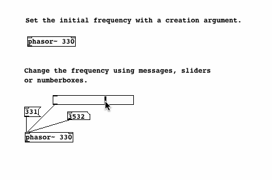
Audio vs Message Cables
In all the examples so far, notice the difference between the cable for messages, which is thin, and the cable for audio, which is thicker. Messages can be sent to audio objects (those with a ~ in their name), but usually audio cannot be sent to message objects (those without a ~ in their name). Attempting to do so will cause Pd to print "error: can't connect signal outlet to control inlet", and it will not allow the connection to be made.
MIDI and Frequency
For many musical applications, the MIDI scale is a useful way of controlling the frequency of an oscillator. One can imagine the MIDI scale as a piano keyboard with 128 keys on it, and each key has been marked with a frequency in Hertz which represents that musical note. Below is a part of the table which makes up the MIDI scale. Three octaves are shown. The most important thing to notice is that a note which is one octave higher than another note (for example, the three A notes of 110 Hz, 220 Hz and 440 Hz) has a frequency which is twice that of the lower note.
MIDI MIDI MIDI
Note Frequency Note Frequency Note Frequency
C 36 65.4063913251 48 130.8127826503 60 261.6255653006
Db 37 69.2956577442 49 138.5913154884 61 277.1826309769
D 38 73.4161919794 50 146.8323839587 62 293.6647679174
Eb 39 77.7817459305 51 155.5634918610 63 311.1269837221
E 40 82.4068892282 52 164.8137784564 64 329.6275569129
F 41 87.3070578583 53 174.6141157165 65 349.2282314330
Gb 42 92.4986056779 54 184.9972113558 66 369.9944227116
G 43 97.9988589954 55 195.9977179909 67 391.9954359817
Ab 44 103.8261743950 56 207.6523487900 68 415.3046975799
A 45 110.0000000000 57 220.0000000000 69 440.0000000000
Bb 46 116.5409403795 58 233.0818807590 70 466.1637615181
B 47 123.4708253140 59 246.9416506281 71 493.8833012561
For the complete table, see http://www.phys.unsw.edu.au/jw/notes.html
The object in Pd which turns a MIDI note into a frequency in Hertz is called [mtof], or MIDI to Frequency. When the MIDI note "69" is sent to it, for example, it will output the number "440". Looking at our examples, you can see that each slider has a range of 0-127, and this is converted by an [mtof] object to a frequency which tells the oscillator what to do.
Of course, you aren't limited to the notes that Western music schools teach you are correct. So-called "microtonal" notes are possible as well. If you hold down the Shift key while using the mouse to change a Number, decimal numbers are possible, so that you can tell an [osc~] to play MIDI note number 76.89, for example.
Additive Synthesis
Because Pd adds the audio signals that come to the inlet of any audio object, combining two or more signals into a single waveform is simple. Adding a sawtooth wave and a sine wave results in the follwing waveform:
Note that the two waveforms are sent to an audio multiplication [*~] object, which halves (multiplies by 0.5) the combined signal to reduce the total range of values sent to the sound card.
At full volume, each oscillator goes from either 0 or -1 to 1 many times a second. Because Pd handles numeric values, not waves, you can add any number of signals. If, however, the combined value of these signals exceeds the -1 to 1 range when it reaches the digital-to-analog converter [dac~] object (that is, the line out to the sound card), clipping and distortion occur. Any value outside of the accepted range is treated as a -1 or a 1. You can see how two combined signals can go outside this range on the graph in the patch below.

If you combine two waveforms whose frequencies are very close to each other, the combined values of the two waves interfere with each other, causing a periodic modulation of the sound. The frequency of this modulation is equal to the difference of the two original frequencies, in Hz. This is known as a "beating frequency," or "phase interference." The sound of two oscillators slightly de-tuned from each other is often used for different kinds of electronic music sounds, such as a "fat" bass effect.
Amplitude Modulation
Amplitude Modulation Synthesis is a type of sound synthesis where the gain of one signal is controlled, or modulated, by the gain of another signal. The signal whose gain is being modulated is called the "carrier", and the signal responsible for the modulation is called the "modulator". In classical Amplitude Modulation, or AM Synthesis, both the modulator and the carrier are oscillators. However, the carrier can also be another kind of signal, such as an instrument or vocal input. Amplitude Modulation using a very low frequency modulator is known as Tremolo, and the use of one audio signal to Amplitude Modulate another audio signal is known as Ring Modulation.
Simple AM Synthesis
Classical AM Synthesis is created by using one oscillator to modulate the gain of another oscillator. Because we are changing the gain of the carrier oscillator from 0 (no gain) to 1 (full gain), the modulating oscillator must output a signal which changes between 0 and 1. This is most often done at audio frequency rates from 20 Hz and up. In this case, the sawtooth waveform of a [phasor~] is used as the modulator, and the sine waveform of an [osc~] is the carrier.

Tremolo
Tremolo is a form of Amplitude Modulation where the gain of an audio signal is changed at a very slow rate, often at a frequency below the range of hearing (approximately 20 Hz). This effect is commonly used to alter the sound of organs or electric guitar.
Since a sine wave is often used for a smooth-sounding tremolo effect, in this patch we have taken the output of an [osc~], which normally moves between -1 and 1, and scaled it so that it's output is now from 0 to 1. This is known as adding a DC Offset to the signal. For more discussion on this, please see the chapter on DC Offset.

Ring Modulation
You can also modulate one audio signal with another audio signal (i.e. a signal which has both positive and negative values). This effect is called Ring Modulation. If you have a microphone connected to your computer, try the following patch. The sound of your voice will enter Pd through the Analog to Digital Converter [adc~] object (the line in from the soundcard), and be modulated by the sine wave of a [phasor~] object. Notice that there is no sound when only one audio signal is present (i.e. when you are not speaking). This is because one audio signal multiplied by zero (no audio signal) will always be zero. And the louder the input signal is, the louder the output will be.
The Ring Modulation effect was often used in Science Fiction movies to create alien voices. You may want to use headphones when running a microphone into Pd to prevent feedback (the output of the speakers going back into the microphone and making a howling sound).
Frequency Modulation
While Amplitude Modulation Synthesis changes the gain or volume of an audio signal, Frequency Modulation Synthesis, or FM Synthesis, is used to make periodic changes to the frequency of an oscillator. In it's simplest form, Frequency Modulation uses two oscillators. The first is the carrier oscillator, which is the one whose frequency will be changed over time. The second is the modulator oscillator, which will change the frequency of the carrier.
For the carrier, we only set the base carrier frequency using a Number box and a MIDI to Frequency [mtof~] object. Because all the adjustments afterwards will be done by audio signals, it's best to use the audio version of [mtof], hence the tilde is added to its name.
The modulator is where we do most of the adjustments. The first thing we want to do is set the frequency of the modulator, i.e. how fast it will change the frequency of the carrier. We do this with a Number box. The second thing we want to set is how much change we will make in the base frequency of the carrier. So the output of the modulator [osc~] is multiplied by another Number box using an Audio Multiplier [*~] object to get the modulation amount.
When this stream of numbers, which is changing with the speed the modulator and in the range set by the modulation amount, is added to the carrier frequency, then the carrier frequency will change as well. This stream of numbers is sent to the second [osc~], where it produces a complex sound which you can see in the graph.
When the amount of modulation is very small (only a few Hz), then a vibrato, or "vibration" of the carrier frequency will be heard. When the amount of modulation is greater, then a greater "glissando", or sweeping of the carrier frequency will be heard. The frequency of the modulator will determine how quickly these changes heard in the frequency of the carrier will happen.
Even more complex sounds can be created by using further modulators to make changes in the frequency of the main modulator oscillator.
Square Waves and Logic
Let's look a little more closely at manipulating square waves with Low Frequency Oscillators and Logic Operations.
Pulse Width Modulation
We've already seen how a simple mathematical check ("is the value of this audio ramp greater than 0.5?") can be used to turn a Sawtooth wave into a Square wave. This produces a Square Wave which has a value of "1" half the time, and of "0" the other half of the time. This is called the Pulse Width of the Square Wave. Different Pulse Widths make a different sound. And when we use a Square Wave as an LFO (Low Frequency Oscillator), different Pulse Widths will have different effects on the sound it is modulating.
When the Square Wave is "1" half the time and "0" the other half, it is said that it has a Pulse Width of 50%. To change the Pulse Width, it is necessary to send a new number to replace the "0.5" in the [expr~] object. The [expr~] object currently has one Variable, which is written as $v1, and one constant, "0.5". If the constant is replaced with a second variable, $v2, then we can use a Number box to change the Pulse Width. Sending the number "0.25" will result in a Pulse Width of 25%, i.e. the Square Wave will be "1" a quarter of the time, and "0" three quarters of the time.
It is also possible to modulate the Pulse Width of the Square Wave with an LFO, which creates a unique sound. Instead of using a Number box, the output of a Sine Wave Oscillator is sent to an Absolute audio [abs~] object, which converts any negative values from the [osc~] into positive ones, and this stream of numbers is sent to the second inlet of the [expr~] object.
Math & Logic Operations
Once we are working with Square waves, whose value is either a "0" or a "1", then we can also use Logic operations to create patterns. Logic operations take as their inputs either a "0" or a "1" (and nothing in between!), and compare the two numbers, giving either a "0" or a "1" as an output.
The AND operation works like this:
0 AND 0 = 0
0 AND 1 = 0
1 AND 0 = 0
1 AND 1 = 1
In short, this means that the output is "1" only when both inputs are also "1", otherwise the output is "0". In Pd, this is represented by the && operation used in the Expression [expr] or Audio Expression [expr~] objects, i.e. [expr~ $v1 && $v2].
The OR operation works like this:
0 OR 0 = 0
0 OR 1 = 1
1 OR 0 = 1
1 OR 1 = 1
In short, this means that the output is "1" only when both inputs are also "0", otherwise the output is "0". In Pd, this is represented by the || operation used in the Expression [expr] or Audio Expression [expr~] objects, i.e. [expr~ $v1 || $v2].
And the EQUAL operation works like this:
0 EQUAL 0 = 1
0 EQUAL 1 = 0
1 EQUAL 0 = 0
1 EQUAL 1 = 1
In short, this means that the output is "1" only when both inputs are the same, otherwise the output is "0". In Pd, this is represented by the = operation used in the Expression [expr] or Audio Expression [expr~] objects, i.e. [expr~ $v1 = $v2].
In the following patch, different logic operations are used to make patterns from two Square Wave Oscillators, which are then compared with a final Square Wave Low Frequency Oscillator. What you will hear is a pattern of Square Waves which are switched on and off by each other. The final LFO makes a recognizable rhythm in the sound.

Try replacing any of the && (AND) or || (OR) operations in the [expr~] objects with an == (EQUAL) operation to hear the difference it makes in the sound. Or add further Logic operations to the output of the LFO to make more complex rhythmic patterns. You can also experiment with changing the Pulse Width as described in the previous patches.
Generating Waveforms
Outline
This chapter will cover generating sawtooth, triangle and square waveforms from a combination of sine wave harmonics, graphing these waveforms to an array and playing this array back as an oscillator.
Introduction
Besides using the built-in oscillators such as [osc~] and [phasor~], or using audio mathematics on the output of [phasor~] to create new waveforms, it is possible to generate the waveforms of a saw, triangle or square wave out of a combination of sine waves. When written to an array, these waveforms can be played back as an oscillator.
This method has a few advantages over using [phasor~] to create different waveforms. The first advantage is that the resulting waveforms will be bandlimited. This means the number of harmonics they produce will be limited, and will cause less aliasing noise. For more details on aliasing, see the Antialiasing chapter of this FLOSS Manual.
The second advantage is that these waveforms much more closely resemble the kinds of waveforms generated by analog electronics. Real world analog waveforms do not have the completely sharp angles of their idealized, digital counterparts due to the "rippling" effect inherent in the resonance of their circuitry. One could subjectively say that these waveforms are more "warm" and "analog-sounding" than the ones produced by [phasor~].
The basic principle we will use here comes from the Fourier theorem. This theorem states that any complex waveform can be broken down into a series of simpler sine waves which, when added back together, can reproduce that waveform. The more sine waves used to represent the complex wave, the more accurate the reproduction will be. While a full explanation of the math behind this is outside the scope of this manual, we will cover the use of this theorem to create three basic wave forms, the sawtooth, the triangle and the square.
Using Sinesum
In Pd, we can write waveforms to a table using an internal message. An internal message is a message box which, when clicked, sends the message inside to the Pd application itself. An example would be the messages we can use to turn audio processing on and off in Pd:

So to create and load a table with a waveform, we must first create an array from the Put menu. Then we give it the name "waveform" in the properties:

After that, we create a message, and type the following in it (using the Return key after the semicolon to start a new line):
;
waveform sinesum 2051 1
The semicolon indicates that the message is an internal message, and "waveform" indicates that we are sending information to the array named "waveform". The word "sinesum" tells the array that we will be sending it a series of harmonics to graph. The number "2051" tells the array that we want to graph those harmonics out on 2051 units on the X range, so the array will be resized from 100 (its default size) to 2051. Finally, the number "1" indicates that we want to write a single sine wave with a peak amplitude of 1 to the array.
When we click the message, we see a pure sine wave graphed to the array:

Sawtooth Wave
The way that sinesum works is that you send it a list of the amplitudes of the harmonics you wish to graph. A sawtooth wave is the simplest, as it uses the formula 1/h (where "h" indicates the number of the harmonic) to compute the amplitudes. Therefore, the amplitude of the first harmonic is 1/1 = 1, the second is 1/2 = 0.5, the third is 1/3 = 0.33333, etc etc.
Here is a message to compute a very rudimentary sawtooth wave using only four harmonics:
;
waveform1 sinesum 1 0.5 0.33 0.25
And here it is graphed:

Because the graph is the product of several sine waves being added up, the waveform can go outside the normal -1 to 1 bounds of an audio signal. The message:
;
waveform1 normalize 1
will adjust the range of the signal to fit within the bounds of -1 and 1. Below, we have two examples of sawtooth waves, both normalized to the range of -1 to 1. As can be seen, the more harmonics used to calculate the waveform, the closer it gets to its idealized mathematical form:
Playback of the Graphed Waveforms
To play back the waveforms we have graphed to the arrays, we use the [tabread4~] object. It takes an audio signal as its input, which reads along the X axis of the array and outputs as an audio signal the values that it finds along the Y axis.
We can use [phasor~] to play the array as an oscillator when we scale its output, which is normally 0 to 1, to fit the whole length of the array. Thus, if our array is 2051 places long, then we can use an Audio Multiplication [*~] object to get an output of 0 to 2051. Increasing the frequency of the [phasor~] will increase the frequency at which the waveform in the array is played back from start to finish

The [tabread4~] object can take the name of the array it will read as a creation argument, or you can use a message such as the following to change the array it reads from:
set waveform 2
Triangle Wave
A triangle wave can also be quite simply generated with only a few harmonics. The shape of a triangle wave is made using only the odd harmonics (1, 3, 5, 7, etc). Zeros are used for the amplitude of the even harmonics (2, 4, 6, 8, etc). Then 1 is divided by the square of each of those harmonics (i.e. 1/h2). Finally, the amplitude of every other harmonic is multiplied by -1 (i.e. the amplitudes of the third, seventh, ninth, etc harmonics). The triangle wave takes shape very quickly with only four harmonics, and as more harmonics are added, the points of the triangle become sharper.
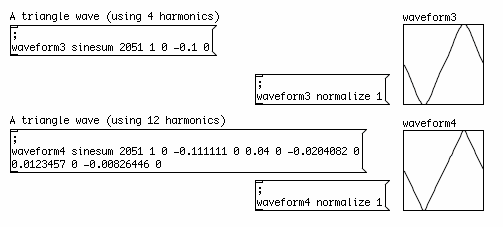
Square Wave
A square wave takes a few more added harmonics to get close to its ideal mathematical shape. This waveform is created also using only the odd-numbered harmonics (1, 3, 5, 9...), and zero is also used for the amplitude of the even harmonics (2, 4, 6, 8...). Then 1 is divided by the number of the harmonic to get its amplitude (i.e. 1/h). As illustrated below, a square wave made up of only four harmonics isn't very square, but when more harmonics are added its shape becomes very clear.
Normalizing & DC Offset
In order to optimize a signal for playback, it is often necessary to make some final adjustments to the gain of the signal to fit it into certain ranges which maximize the dynamic range, or the difference between the loudest and the quietest parts of the signal. Two very important processes are to remove the DC offset in the signal, and to normalize the signal.
DC offset is when a waveform has unequal amounts of signal in the positive and negative domains. Normally, we want the signal to have a middle point at zero to allow a maximum dynamic range. While DC offset can be useful in the control of some kinds of synthesis (such as Amplitude Modulation or Frequency Modulation), it is generally considered undesirable in an audio signal.
An extreme example of DC offset: the waveform is only in the positive domain.
And to normalize an audio signal means to adjust its gain to peak at the maximum the sound card allows before clipping (i.e. -1 and 1). This is done to maximize the dynamic range of the signal when it is played back.
For example, by default the [phasor~] object ramps from 0 to 1. The middle point (i.e. the DC Offset) is 0.5, and its dynamic range (the difference between the minimum and maximum values) is half the biggest possible. In order to get a waveform which uses the full dynamic range of the soundcard without any DC offset, we need to multiply its signal by two in order to double the dynamic range. This is the normalizing part. Since now the DC Offset is 1,Then we remove the DC offset by subtracting 1 from every sample value, resulting in a waveform which crosses zero at the midpoint of its ramp from -1 to 1.
Likewise, the same can be done with the square waves we created by comparing the output of [phasor~] with 0.5 with a simple logic operation. The resulting 0 or 1 can be normalized to -1 and 1 with the same audio math.
Since we are using the [expr~] object to create a mathematical expression for the creation of the square wave anyway, we can include the normalizing and dc offset correction directly into that expression like this:

Here, we revisit the sawtooth wave generator, made from inverting the ramp of [phasor~], comparing it with the original ramp and deriving the minimum values. The sawtooth waveform which results has a DC offset of 0.25 and a gain from 0 to 0.5. By subtracting the 0.25 offset and multiplying by 4, the waveform is DC offset corrected and normalized.

The same process can be reduced to a single [expr~] object which compares the ramps, performs the DC offset correction and normalizes the resulting waveform.

A DC Offset is a constant value, this means it has a frequency of 0Hz, because it never changes. A high pass filter can be used to remove the DC offset of a signal or combination of signals by removing frequencies below its cutoff frequency. In this case, the [hip~] object is set to attenuate frequencies at or below 1 Hz, resulting in a waveform centered on zero. It will not, however, normalize the signal afterward, nor will it prevent clipping (values greater than -1 or 1 which cannot be reproduced by the soundcard).

Many Pd programmers use a [hip~ 1] object just before each channel of the [dac~] to eliminate any accidental DC offset which may have accumulated in the audio signals of their patch.
Finally, a limiter can be used to automatically reduce the overall gain whenever the signal passing through it exceeds a certain level. In a so-called "lookahead limiter", the audio signal is delayed for a certain amount of time while the limiter decides if the signal needs to be reduced and by how much. The [limiter~] object in Pd is useful for this purpose, while the [z~] object delays the signal being measured long enough for the [limiter~] to output the amplification factor needed to keep the audio signal within bounds. Please check the help file for [limiter~] for a wide range of uses for this object.
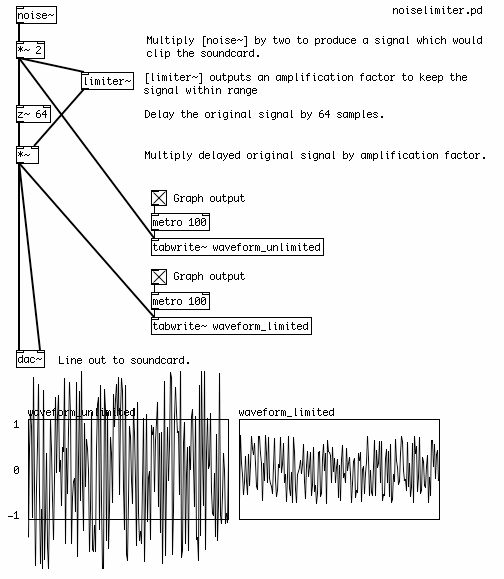
Antialiasing
Outline
This chapter describes different techniques for avoiding aliasing artifacts in digital oscillators in Pd, including the combination of oversampling plus low pass filteringas well as the use of bandlimited oscillators.
Introduction: What is Aliasing?
As discussed in the What is Digital Audio chapter, aliasing occurs when frequencies are generated in a Pd patch which are above the Nyquist frequency, or half the current audio sampling rate. Thus, for a computer replaying audio at the CD audio rate of 44,100 Hz per second, the Nyquist frequency is 22,050 Hz. Trying to reproduce any frequency higher than this creates unwanted extra frequencies in the sound. Subjectively, these aliasing noises are what can cause oscillators to sound "cheap", "cold" or "digital" in comparison with "warm" or "analog" antialiased ones.
All waveforms except a sine wave produce harmonics which are multiples of the fundamental frequency. Even if we never create an oscillator with a frequency higher than 22,050 Hz, the harmonics of any oscillator besides an [osc~] could easily go over this frequency, resulting in aliasing. Aliasing noise is almost impossible to remove once it occurs, so if we do not want to hear these inharmonic sounds, we must do something to prevent them.
The Problem: an Aliasing Oscillator
Looking at some of the oscillators covered earlier, we can see that none of them have any sort of antialiasing built into them. The following square wave, although normalized and DC offset-corrected to a full range of -1 to 1, produces many aliased frequencies which can be heard when the frequency is changed. These are heard as inharmonic sounds which "reflect" down from the Nyquist frequency as the frequency of the oscillator is increased. These aliasing noises are sometimes called "birdies".
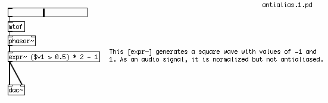
Oversampling and Filtering
One technique of antialiasing filtering involves applying a low pass filter. Because no filter is perfect, every filter has a slope from the cutoff frequency, which is the frequency at which it starts to affect the sound, to the point where the frequencies are completely removed. In order to remove the high frequency harmonics which cause aliasing, we would need a filter which has sufficient attenuation at those frequencies to reduce them below the level of hearing.
In order to create such a filter, we need to increase the sampling rate to give us the frequency range required. This process is called oversampling, and in Pd this can be done with the object [block~]. When given the creation arguments "1024 1 16", [block~] will oversample the audio which comes into a subpatch by a factor of 16 (i.e. up to 705.6 KHz if the current sampling rate is 44.1 KHz), in chunks of 1024 samples at a time. The signal can then be digitally filtered, removing the higher harmonics which could cause aliasing, and when it leaves the subpatch it will be downsampled back to the original sampling rate.

The antialiasing filter shown above is taken from the example J07.oversampling.pd in the 03.audio.examples folder found in the Pd Documentation Browser in the application.
Because this is a very CPU intensive process, it is wise to only include the oscillators you wish to antialias in this subpatch, and to control them via the [inlet]s of the subpatch!
Bandlimited Waveforms
Another solution to this problem is to use waveforms which produce fewer harmonics for the oscillators. These waveforms are said to be bandlimited, because the number of harmonics in them have been limited by the shape of the wave. Bandlimited waveforms are usually the product of a combination of sine waveforms which add together to produce a certain shape. An example of this is shown below.

Example taken from audio design coursework by Andy Farnell.
The message
;
saw1 sinesum 2051 1 0.5 0.33 0.25 0.2 0.16 0.14 0.12 0.11
is an internal message which tells Pd to fill up 2051 places of the table "saw 1" with the product of a series of nine sinewaves. You can see the table, "saw 1" on the left, with the bandlimited waveform, and it's properties are shown below. To play the table back, the ramp of a [phasor~] is multiplied by 2048 and is sent to a [tabread4~] object, which uses the incoming audio as the index to play back table "saw 1". The audio which comes out must be scaled slightly because, as can be seen from the table, the waveform has extremes outside the normal -1 to 1 bounds.
It should be noted that no technique can completely eliminate aliasing noise, as eventually any oscillator which is not a pure sinewave will eventually produce harmonics above the Nyquist frequency when its frequency is increased. The above oscillator is no exception, and sounds best when used as a bass synthesizer. For more information on bandlimited oscillators, see the Generating Waveforms chapter in this FLOSS Manual.
Filters
A filter works by allowing some frequencies through, while reducing or eliminating others. There are three different kinds of basic filters to work with in Pd: the Low Pass Filter, the High Pass Filter and the Band Pass Filter, as well as a Voltage Controlled Filter which can be controlled using some of the LFO techniques we have already looked at.
Low Pass Filter
A filter which allows only low frequencies to pass is called a Low Pass Filter. The object for this kind of filter in Pd is [lop~]. It has one inlet for audio and one inlet for a number which determines the frequency in Hertz where the filter starts to reduce the audio (the Cutoff Frequency). Frequencies above the Cutoff Frequency are reduced or eliminated.
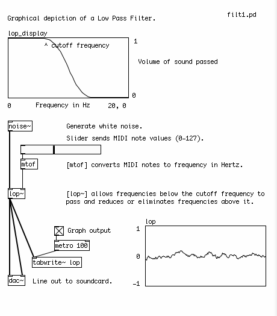
High Pass Filter
While one which allows only high frequencies is called a High Pass Filter. The object for this kind of filter in Pd is [hip~]. It has one inlet for audio and one inlet for the the Cutoff Frequency. Frequencies below the Cutoff Frequency are reduced or eliminated.
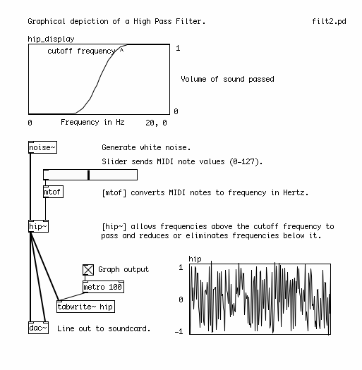
Band Pass Filter
A filter which allows some range of frequencies between highest and lowest is called a Band Pass Filter. The object for this kind of filter in Pd is [bp~]. It has one inlet for audio, a second inlet for the center frequency that it will allow to pass and a third inlet for the Resonance, which determines the width of the range of frequencies it allows to pass (the Pass Band). The Center Frequency will pass unchanged, and frequencies higher or lower than that will be reduced or eliminated. How much they will be eliminated depends on the Resonance. Useful numbers for the Resonance tend to be between 0 and 10.

The three filters we've seen so far all take numbers to control their Cutoff or Center Frequencies as well as their Resonance (in the case of [bp~]. However, there are times when you might want to control the frequency of a filter with an audio signal. A typical situation is when a filter is swept by an LFO.
Voltage Controlled Filter
[vcf~] (Voltage Controlled Filter) is a filter whose Center Frequency and Resonance can be controlled by audio signals. The way this is done is quite similar to the tutorial on Frequency Modulation. A Slider sends a MIDI note to a MIDI to Frequency audio [mtof~] object to provide the Center Frequency to be swept, or modulated. Then we have an LFO [osc~] object, whose output is multiplied by the amount in Hertz which we want to sweep the filter frequency. This stream of numbers is added to the Center Frequency coming from the [mtof~] object and sent to the Frequency inlet of the [vcf~]

The Envelope Generator
The Envelope of a sound refers to changes in either its pitch or gain over the duration of a note. A gain envelope is the most common, because it is used to synthesize the dynamics of acoustic instruments. For example, a piano has a very sharp or percussive attack, with the note becoming loud quite quickly before gradually fading out. A violin, on the other hand, takes a longer time for the sound to build up as the strings begin to vibrate, and then fades away relatively quickly. A gain envelope has five main characteristics:
- Attack: the length of time it takes the note to reach it's loudest point.
- Decay: the length of time after the Attack it takes the note to reach it's Sustain volume.
- Sustain: the volume of the note which is held until the note is Released.
- Release: the length of time it takes the note to fade to zero after the key on the keyboard has been released.
This is commonly abbreviated as ADSR, and can be drawn graphically like this, where the horizontal axis represents time and the vertical axis represents volume:
An additional parameter which comes from the MIDI world is called Velocity, and it refers to how hard the key of the keyboard has been pressed. In our synthesizer, Velocity will refer to the volume of the note at its loudest point, i.e the peak of the Attack.
Simple Envelope Generator Using [line]
The simplest Envelope Generator can be made using the object [line]. This object takes two numbers, a target and a time (in milliseconds), and interpolates numbers to that target in the time given. If it is sent a single number, the time of the ramp is assumed to be zero, and [line] "jumps" to that value. It remembers that last value that it reached, so the next pair of numbers will start a new ramp from the current value. If a new pair of numbers is sent to [line] while it is still making a ramp, it will immediately stop that ramp and start the new one.
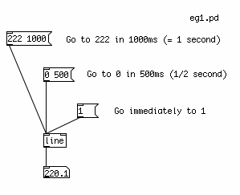
To make a simple up/down, or Attack/Decay envelope, we need to send two different messages to [line]. The first will tell it to go to "1" in a certain amount of time, the second will tell it to go back to "0" in a certain amount of time. These two messages can be triggered with a single "bang" message, as long as we delay the triggering of the second message long enough for the first ramp to finish, using the [delay] object.
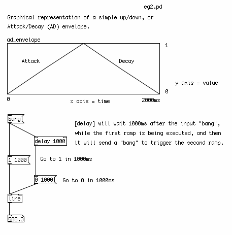
Complex Envelope Generator Using [vline~]
A more complex envelope can be created with the [vline~] object. This object can be programmed to make sequences of ramps in order, and with a delay in between them. For example, the message "10 1000, 0 0 1000, 1 1000 3000" would tell [vline~] to do the following:
Ramp up to "10" in 1000ms, then jump to "0" in 0ms after waiting 1000ms (from the start of the ramp), and finally ramp back up to "1" in 1000ms after waiting 3000ms (from start of the ramp).

Because it accepts more complex messages, [vline~] is useful for the traditional Attack/Decay/Sustain/Release envelope. Also, [vline~] is an audio object rather than a numeric object, which means it is more suitable for audio multiplication, as we will see in the next section.
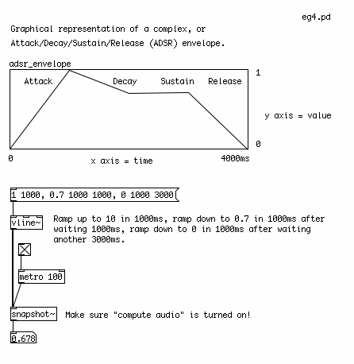
Envelopes Stored In Arrays
For an envelope with an arbitrary curve, a table is the most useful way to go. First we must create a table, by using the Put menu to place and Array in the patch. When we do that, we will see two Properties dialogs appear. In one, we name the Array "envelope" and set a length of 100 units. In the second we can change the graphical appearance and the range of the X and Y axes. In this case, set the X range to "0 to 99", and the Y range to "1 to 0". The size can be anything that is convenient, and is measured in pixels. You can get these Properties dialogs back by Right-clicking or CTL+clicking on the Array. These dialogs appear under the screenshot below.
To read a table, we can use the object [tabread]. The [tabread] object takes a creation argument of the name of the table it is supposed to read. In order to draw inside the table, you should click on the line and drag with the mouse. A value sent to the inlet of [tabread] represents a point on the X axis, and the output is the corresponding value on the Y axis.

If we want to read a table continuously from start to finish, we can use [line] to send a continuous stream of numbers to [tabread], starting with the first position on the X axis of the table ("0"), and ending with the last position ("99"). Remember that [line] takes a pair of numbers, the target ("99", the end of the table) and the time it takes to get there (4000 milliseconds, or 4 seconds). When we want to start over from the beginning of the table, we send a single number, "0", and the [line] object jumps back to it.
In the example below, [tabread] gets values between 0-1 from the table "pitch_envelope". We multiply these numbers by 127 with a [*] (Multiplication) object, to get a MIDI note value between 0-127. After that, we use a [mtof] (MIDI to Frequency) object to convert the MIDI notes into a frequency in Hertz. The frequency is sent to a sine wave oscillator [osc~] object, which sends audio to the [dac~] (Digital to Analog Converter), Pd's connection to the soundcard.

The Amplifier
The next step in our synthesizer is to create the audio amplifier, which will change the gain of the signal. Whatever method you use to create your envelope, if you are using it to control the amplitude of a signal you will want to make sure the output is an audio signal as well. This is done to avoid clicks in the audio.
Using a Slider
In the two examples below, an audio signal from the Sine Wave Oscillator [osc~] is being changed manually, via a slider, in the same way as the Volume knob on your home stereo might work. In the first example, the numbers from the slider, which go from 0-127, are divided by 127 with a Division [/] object, to get them within the range of 0-1. These numbers are sent directly to the right inlet of the Audio Multiplication [*~] object, so that every audio sample coming from the [osc~] is multiplied by a number between 0-1. This will reduce the volume of each sample. "0" means no sound, "1" means full volume. However, these changes in volume will have clicks in them, as each number from the slider is sent to the [*~].
Using [line~], [vline~] and [tabread4~]
In the second example, the numbers from the slider are sent to an Audio Ramp object [line~], after being packed together into a message by [pack] with the number 50. What this message, which might appear as "0.76 50" for example, tells line is that it should ramp to the next number in 50 milliseconds. This is known as Interpolation, which is to smoothly transition from one value to another by providing (or guessing) all the values in between. Since the [line~] object is an audio object, the signal it sends out should cleanly control the volume of the audio signal.

If you use [line] to make your envelope, you can make an audio signal by using the audio object [line~] instead.
[vline~] outputs an audio signal already.
And to read a table and get an audio signal out, the [tabread4~] object is useful. Note that [tabread4~] responds better when controlled with an audio signal as well, so [line~] is used instead of [line].
Controlling the Synthesizer
Reviewing what we've covered in this tutorial, we can see that all the building blocks of a simple synthesizer are present.
We have various Oscillators to generate the tones. Then there are Low Frequency Oscillators, which provide the possibility to modulate either the frequency or gain of the Oscillator(s), or the frequency of a Filter. There are also different types of Filters, which emphasizes and/or removes certain frequencies. Envelope Generators control changes in frequency or gain over time, and Amplifiers control the final gain of the synthesizer.
The way each of these elements are put together gives the final definition to the sound and functionality of your synthesizer. And there are an infinite number of was to do this! In the following examples, we'll look at some simple ways to combine the different elements of a basic synthesizer with ways of controlling it, either from the computer keyboard, a MIDI keyboard or a 16 step sequencer which we will build.
Input from the Computer Keyboard
To get a very crude input from the computer keyboard, we can use the objects [key] and [keyup]. Each key on the computer keyboard has what is called an ASCII value, which is a number used to represent that key. [key] outputs this number when a key is pressed, and [keyup] sends this number when a key is released. Like MIDI Notes, these numbers are within the range of 0 to 127. However, the layout of these ASCII values on the computer keyboard is far from musical! But they are a good way to get some immediate input into a patch, and later on [key] and [keyup] can used to trigger different elements of a Pd patch besides musical notes.
In the following patch, the ASCII values of the computer keyboard are treated as MIDI notes and control the frequency and volume of a Sine Wave Oscillator. We will use [line~] as a simple Attack/Decay Envelope Generator here, to make the envelope of the note smooth and to avoid clicks.
When a key is pressed, [key] sends the ASCII value, which becomes a frequency through [mtof] and controls the [osc~]. At the same time, when the key is pressed, the output of [key] is converted to a "bang", which triggers the message "1" to be sent to [pack]. In [pack], this "1" is packed together with "50" to make a message which says "1 50". [line~] interprets the message "0 50" to mean "ramp to 1 in 50 milliseconds". This will smoothly ramp the audio signal from the [osc~] up to full volume.
When a key is released, then [keyup] will send a number out as well. We will convert this to a "bang", which sends the message "0" to [pack]. [pack] then makes the message "0 50" and sends it to [line~], and [line~] will ramp back down to 0 in 50 milliseconds.

Input from a MIDI Keyboard
This task is made simpler (and more musical!) with the addition of a MIDI keyboard. Make sure you have selected the proper MIDI input device in your Preferences (see Configuring Pd for more details). The [notein] object receives the MIDI Note and Velocity information from the MIDI keyboard. Because usually you will want to listen to the first MIDI keyboard you plug in, we give [notein] a creation argument of "1", thus [notein 1] will receive MIDI Notes on MIDI Channel 1. The MIDI Note played will come out the left outlet, and the Velocity (how hard the key is pressed) will come out the right outlet.
The MIDI Note we send to an [mtof], which converts it to a frequency and sends it to the [osc~]. The Velocity we divide by 127 to get a value between 0 and 1. This value gets [pack]ed together with 50, and sent to the [line~] object, which we will use again as an Attack Decay Envelope Generator. [line~] makes a 50 millisecond audio ramp, either to "0" when the MIDI key is released and the Velocity is "0", or to a value between 0 and 1 when the MIDI key is pressed, depending on how hard it has been pressed. [line~] sends an audio ramp to the Audio Multiplier [*~], which smoothly changes the volume of the audio signal form the [osc~].
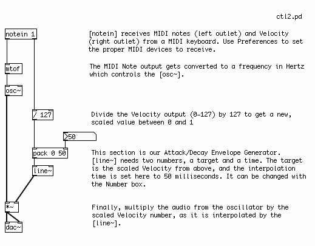
Building a 16-Step Sequencer
Besides using a keyboard, another way to control a synthesizer is with a Sequencer, which stores MIDI Notes and plays them back in sequence, and at a speed which can be changed from faster to slower.
A Counter
Before we can build the note-storing section of the Sequencer, however, we have to learn a little bit about dataflow in Pd in order to make a counter. This counter will count from 0 to 15, and each number it sends out will trigger one of the steps in a 16-Step Sequencer.
The patch below shows a counter, built with basic Pd objects.

[metro] is used to send the message "bang" every so many milliseconds. This interval is set by a Number sent to the right inlet. The [metro] is turned on and off by sending either a "1" or a "0" to the left inlet. We use the [toggle] object to send these messages.
Hot and Cold
Below the [metro] is a construction which takes advantage of one of the most fundamental lessons in learning about dataflow in Pd: "hot" and "cold" inlets. The left-most inlet of almost any non-audio Pd object is called the "hot" inlet. Any input to the hot inlet of an object gives immediate output. Any other inlet to the right of the hot inlet is called a "cold" inlet. Input to a cold inlet is stored in the object, waiting for input on the hot side. In this case, when a new number comes to the hot side of the [*], it is multiplied by the number stored in the cold side. The information in the cold inlets is kept there until new information received at that inlet changes it, or until the object is re-created (by retyping its name, cutting/pasting the object or by reopening the patch).


So in our counter, there is an object called [float], which stores and outputs a Floating Point Number. Floating Point Number is another name for a number with a decimal place, usually called simply a "float". The opposite of a "float" is an Integer, or "int", which has no decimal place. All numbers in Pd are assumed to be floats. When [float] receives a "bang" to its left ("hot") inlet, it outputs the float which is stored on it's right ("cold") inlet. When this [float] outputs a number, it is also sent to the inlet of a [+ 1] object, where 1 is added to that number and sent back to the "cold" inlet of [float] to wait for the next "bang". So, every time this construction receives a "bang", the number it will output will be 1 more than before.
For more information on "hot" and "cold", as well as other descriptions of how to get used to how dataflow works in Pd, please see the Dataflow Tutorials in this FLOSS Manual.
The numbers sent from our counter will increase endlessly. In order to keep them within the bounds of our 16-Step Sequencer, we need a way to "wrap" these numbers around so that they start over when the counter reaches 16, and every other division of 16 that comes later on. [mod] is the object which does this. Technically, [mod] means "modulo", and it outputs the remainder of a division operation using the number in the creation argument. Thus "16" becomes "0", "17" becomes "1", "18" becomes "2" and so on.
Storing and Retrieving MIDI Note Values
In the next patch, we see how to store and recall a number from an [hslider] using the [float] object as well. Here, [float] has been abbreviated to the commonly used [f]. At the bottom of our counter construction from the previous example, we have replace the Number with an [hradio] array of buttons, so that we can see which step of our Sequencer we are at. (Right or Control+Click on the [hradio] to see its properties, and type "16" in the "number" field to set the size.)
Below the counter we have the object [select]. This object checks the input on its left inlet against either the input on the right inlet, or in this case against a series of creation arguments. When the input on the left matches one of the creation arguments, then the message "bang" comes out of the corresponding outlet. Thus, an input of "0" will send a "bang" out the first outlet, an input of "1" sends a"bang" out the second outlet, etc etc. In this way, we have a separate "bang" for each step in the Sequencer.
For each step in the Sequencer, we will use a [f] object to store a MIDI Note send from a [vslider]. The range of the [vslider] is 0-127, and the number it outputs is sent to the "cold" inlet of [f], to wait for a "bang" to come to the "hot" inlet. When that "bang" comes, the MIDI Note is sent out. You can change the value of the [vslider] with the mouse at any time, and the MIDI note will only be sent at step 0 of the sequence.
The Finished 16-Step Sequencer Patch
And here we have the finished patch, with all 16 steps included, connected to a simple synthesizer. Each step of the sequence sends a MIDI Note to [mtof], which controls the frequency of a [phasor~] as well as the frequency of a Band Pass Filter [bp~]. The creation arguments of the [bp~] set it's starting frequency as 220 Hz, but this is changed every time it receives a new number from the [mtof], which has been multiplied by 1.5 to make the center frequency of the filter a half octave above that of the Sawtooth Oscillator [phasor~]. The resonance is set very high, at "5", so the harsh sound of the [phasor~] is softened.
In this version, no Envelope Generator is used, so the volume of the audio going to the soundcard remains constant. This leads to noticeable clicks when the frequencies of the MIDI Notes change. An Envelope Generator based on [line~], [vline~] or [tabread4~] could be inserted between the output of [bp~] and the [dac~] if desired.
A Four Stage Filtered Additive Synthesizer
Our final example shows all the different elements of a simple synthesizer combined together into an instrument which can be played by the computer keyboard using [key]. It has four distinct sections:
- The INPUT STAGE: where note information is received and sent to the other stages.
- The OSCILLATOR STAGE: where the notes received from the INPUT STAGE are converted to frequencies which control two detuned Sawtooth Oscillators.
- The FILTER STAGE: where notes received from the INPUT STAGE are turned into an audio signal which sweeps a Voltage Controlled Filter, and where the audio signal from the OSCILLATOR STAGE is filtered.
- And the AMP STAGE: where the "bang" at the start of every note from the INPUT STAGE is used to trigger a message to the [vline~] Envelope Generator, which smoothly changes the volume of the audio from the FILTER STAGE.
The Input Stage
At the INPUT STAGE, we use the [key] object to get the ASCII values of the computer keys being pressed. This information is passed to the [trigger] object. [trigger] is a very important Pd object used to specify the order in which events happen.
What [trigger] does depends entirely on its creation arguments. When it receives any input, [trigger] sends messages to its output in a right to left order, based on these creation arguments. In this case, our [trigger] has the creation arguments "float", "float" and "bang". So on any input from [key], which sends a Floating Point Number (a "float"), [trigger] will first send the message "bang" out its right-most outlet, which will go the AMP STAGE. The it will send that float which came in to the center outlet, which will go to the FILTER STAGE. And finally it will send that float to the left-most outlet, which will go the OSCILLATOR STAGE. [trigger] is often abbreviated as [t], so the [trigger] in this example could also be typed as [t f f b].
For more information on [trigger], please see the Dataflow Tutorials in this FLOSS Manual.
The Oscillator Stage
This stage is concerned only with the Additive Synthesis of two detuned Sawtooth Oscillators. This means that the output of two [phasor~] objects, whose frequencies are slightly different from each other, will be added together. Since the difference in frequency is quite small (one [phasor~]'s frequency is 99% of the other's), instead of hearing two tones we will hear a periodic modulation of one tone.
The float from the [trigger] in the INPUT STAGE arrives at an [mtof] object, which converts it to a frequency in Hertz. This frequency is sent immediately to one [phasor~], and also to a Multiplication [*] object, which makes a new frequency number which is 99% of the other, and this new scaled frequency is sent to a second [phasor~].
The audio output of the two [phasor~] objects is added together in an Audio Multiplier [*~] object, which reduces the overall volume by 50% to prevent clipping when it reaches the soundcard. The resulting audio signal is sent to the FILTER STAGE.
The Filter Stage
The FILTER STAGE is responsible for taking the audio from the OSCILLATOR STAGE and applying a swept Voltage Controlled Filter [vcf~] object to that signal. The center frequency of the [vcf~] is also determined by the key which has been pressed on the keyboard.
When the float sent by [trigger] from the INPUT STAGE reaches this stage, it is converted into a frequency number by [mtof]. This number is multiplied by 1.5 so that the center frequency of [vcf~] is a half octave above that of the Sawtooth Oscillators. The number from [mtof] is [pack]ed together with 300 and sent to a [line~] object. This message tells [line~] to ramp to any new number it receives in 300 milliseconds.
The audio ramp from [line~] is used to control the center frequency of the [vcf~] object. The result is that the [vcf~] will not jump to any new frequency it receives, but it will smoothly ramp there over 300 milliseconds, resulting in the distinctive "filter sweep" sound.
The audio leaving the Voltage Controlled Filter is now sent to the AMP STAGE.
The Amp Stage
This final stage controls the overall volume of each note played by this synthesizer. It uses a [vline~] object as a complex Envelope Generator.
Every time a key on the keyboard is pressed, the [trigger] object in the INPUT STAGE sends the message "bang" to the AMP STAGE. Here it triggers the message "1 150, 0.9 150 150, 0 1000 500", which is sent to the [vline~] and tells [vline~] to make this audio ramp.
The exact instructions the message tells [vline~] are as follows:
- First ramp to 1 in 150ms
- Then ramp down to 0.9 in 150ms after a delay of 150ms from the start of the complex ramp.
- After that, ramp down to 0 in 1000ms after a delay of 500ms from the start of the complex ramp
This translates to:
- Attack: 150ms
- Decay: 150ms to a value of 0.9
- Sustain: 200ms (the 500ms of the last ramp minus the 300ms of the first two ramps equals a "rest period" of 200ms)
- Release: 1000ms
With these instructions, [vline~] creates an audio ramp which smoothly controls the overall volume of the audio coming from the FILTER SECTION via an Audio Multiplication [*~] object.
Subpatches
Now that we have an instrument that is separated into four distinct stages, we may want to make the screen a bit easier to look at by putting each stage inside its own Subpatch.
A Subpatch is simply a visual container which objects can be placed in to get them out of the way. To create a Subpatch in a Pd patch, simply create an object named [pd mysubpatch], where "mysubpatch" can be any name you choose. A new empty patch window opens up and you can cut or copy and paste the objects you want to place in the Subpatch inside this new window. When you close the window, the objects will be inside this Subpatch, still functioning as normal.
To get information in and out of a Subpatch, you can use the objects [inlet] and [outlet] for numbers and other messages, and the objects [inlet~] and [outlet~] for audio. This will create inlets and outlets in the Subpatch in the main patch you are working in, that you can connect as normal. You can give a creation argument to each inlet or outlet, which could be a reminder of what is supposed to come in our out of that inlet or outlet ("midi_note", "start_trigger", "audio_from_filter", etc etc).
Here is our Four Stage Subtractive Filtered Synthesizer, with each stage inside it's own Subpatch.


Dataflow Tutorials
While a Pd user (which is, lovingly enough, a Pd programmer at the same time) can learn how to use the software just by playing around and trying new things, there are important functions that are not immediately apparent through play, trial and error.
The following tutorials try to explain and practically demonstrate in a quick and simple way some of the more important 'grammatical' aspects of this graphical programming environment.
All examples in the tutorials are available as Pd patches. It is recommended that you download them and try them out while reading the tutorial. Get the zipped file here: http://en.flossmanuals.net/floss/pub/PureData/DataFlow/DataFlowTut_patches.zip
These tutorials can be used in two ways:
- they can be followed from start to finish
- they can be accessed also as a reference
So if something is too obvious to the reader, she can skip a section or two (or just check the screenshots).
Building a Simple Sequencer: A step by step guide
Basic elements
*Refer to the Interface chapter for understanding the basic elements including Objects, Numbers, Messages, Symbols and Comments.
Using the Interface
*Refer to the Interface chapter for controlling objects, properties and making connections.
1. Create a switch
Put a Toggle into the patch.
* We have chosen to use a toggle in this example, however there are many ways to turn your sequencer on and off, including sending a message to the object.
2. Regulate the timing
a. Put a [metro] object with a creation argument into the patch. A [metro] object sends a bang periodically so here this will regulate the time interval between bangs.
For example, if you put a [metro] with a creation argument of 300, your bangs will output at 300 milisecond intervals.
* The [metro] has two inlets: the first (left) for turning it on and off, the second (right) for altering the creation argument.
b. Connect the outlet of the Toggle to the first inlet of the [metro].
c. Put a number box into the patch. This provides you with a variable and enables you to alter the frequency of your bangs.
d. Connect the outlet of the number box to the second (right) inlet of the [metro].

3. Set up a counter
a. Put in a [float] (this can be written as [float] or [f]). This stores the number on its right inlet, and outputs the result when it receives a bang.
b. Connect the outlet of the [metro] to the inlet of the [float].
c. Put in an addition arithmetic object with a creation argument of 1 [+ 1]. This will set up the counting of the object.
d. Connect the outlet of the [float] to the first inlet of the [+ 1] object and the outlet of the [+ 1] object to the right inlet of the [float]. This will store the number in the [float]'s right inlet and the result will be sent when the [float] receives a bang.
* Be aware of stack overflow which happens when you connect the output of the [+ 1] object to the first inlet of the [float] This creates a feedback loop by sending the creation argument in a neverending circle between the [+ 1] object and the [float] (if you let this go it could crash your system!).
d. Put in a [number box] and connect the [float]'s output to the number box's inlet. This enables you to see what is happening to your creation argument.
* The [number box] is being used in this example as a visual aid and enables you to observe what is happening.
e. Put a [mod] object with a creation argument which will specify the number of steps in your sequencer into the patch. This will define how many steps the sequencer has and distribute the input accordingly. For example, if you put a [mod] with a creation argument of 4, you will build a 4 step sequencer.
f. Put a [horizontal radio] object into the patch. This acts as a visual aid and enables you to see the individual steps of the sequencer as they happen.

4. Set up a distribution channel
a. Put a [select] object with creation arguments numbering the sequencer's steps. This distributes the bangs to the corresponding outlets. For example, put in an object of [select 0 1 2 3] for a 4 step sequencer (start with 0 because mod objects output 0 as well).
* Every time you create a [select] object, the number of outlets will be equal to the number of creation arguments with an extra outlet in order to distribute the surplus signals.
b. Put the number of [float] objects for each step of the sequencer into the patch.
c. Connect the outlets from the [select] object to the inlets of the corresponding [float] objects.
d. Put a vertical slider into the patch for each step of the sequencer. These enable you to adjust the pitch of the individual steps in the sequence. For example, put in four vertical sliders for a four step sequencer.
e. Connect the outlet of the vertical sliders to the second (right) inlets of the [float] objects. This enables you to change the pitch of each step and hear it only when the counter hits that note.

5. Convert a midi number to frequency
a. Put a [mtof] (midi to frequency) object into the patch. This converts the incoming midi numbers to frequency.
b. Connect the outlets of the [float] objects to the inlet of the [mtof] object.
6. Send the frequency to audio
a. Put an [osc~] (oscillator) object with a creation argument into the patch. This outputs audio - ie. a pure sine wave.
* Refer to the Oscillator chapter in Audio Tutorials for more.
b. Connect the outlet of the [mtof] object to the inlet of the [osc~] object.
7. Send the audio to a soundcard
a. Put a [dac~] object into the patch. A [dac~] object is a digital to analogue converter and creates a line out to the sound card.
b. Connect the outlet of the [osc~] object to the inlet of the [dac~] object.

CONGRATULATIONS! You have now created a functioning sequencer in Pure Data.
This is how the sequencer should look:

* We have chosen to use the above elements to set up a sequencer however there are many ways to set one up, including using a table. We're sure you will discover these as you delve deeper into the world of Pure Data.
Messages
Pd's objects intercommunicate using messages, which typically flow from an outlet of one object to an inlet of another through black lines called wires, or patch cords. These messages are usually a request to do something, like open a file, compute a sum, or store some data. Apart from audio signals all other data in Pd are messages.
Anatomy of a message
Messages are made up of one or more pieces of data called atoms. There are several atom types that may be used in Pd, but the two most important ones are:
- numeric - a number such as "3," "4.5," or "5.55556e+06"
- symbolic - typically, a word that cannot be interpreted as a number and that contains no white space, such as "open," "pitch," "file001," "reset"
Messages in Pd begin with a symbolic atom, called the selector, which may be followed by zero or more atoms, referred to as the elements of the message (all separated by white-space). Aside from two convenient exceptions covered below, Pd messages follow adhere to the following form: selector element1 element2 etc...
The selector of the message tells the object what to do-- that is, when a message arrives at one of its inlets, the object checks the selector and chooses an appropriate action, or method, in response. The particular action depends on what the object was designed to do. For example, an object may accept messages consisting of the selector "set" followed by one numeric atom, like "set 12," to store the number 12. Another object might accept a message with the selector "clear" (with no elements) as a way to "forget" the current data stored in the object. (Note: you can usually find out which messages an object accepts by right-clicking it and choosing "Help.")
All Pd objects will send an error to the console if you attempt to send a message that the object doesn't understand. For example, the [change] object accepts "float" and "set" messages, but if you try to send the message "elvis is king," an error will let you know that the selector "elvis" isn't understood: "error: change: no method for 'elvis'." For secondary inlets, the error message will give you a hint as to the correct selector, like: "error: inlet: expected 'float' but got 'elvis'."
Standard Message Types
There are many different people who have created and continue to create objects for Pd, designing them to accept messages with whatever selectors they find appropriate to the task at hand (open, vibrato, learn, kill, stop, etc.). So you might wonder how exactly the user is supposed to keep track of all the messages a given Pd object understands. Luckily, there are several standard message types built into Pd:
- float message - the word "float" with one element that is a number, like "float -5." Also known as floats (floating point numbers).
- symbol message - the word "symbol" followed by a word. E.g., "symbol foo."
- list - the word "list" followed by groups of numbers and/or symbols and/or pointers.
- bang - the single word "bang." Often used simply to trigger an object to perform an action.
- pointer - references to data stored in graphical data structures.
The standard messages shown above make it easy to perform common tasks in Pd-- for example, if you know that a certain object performs simple arithmetic, you can guess that it will accept float messages as input.
In the example below, notice that Pd provides a shortcut for typing both float messages and lists of numbers; you can leave off both the "float" and "list" selector and the objects will still accept and understand them. Since so much of Pd is basically about passing numbers around, these "implicit" float and list messages allow you to create your patch with less typing.

Message Boxes
Messages can go between objects directly - as they do in the bottom two rows of each group shown below - or be sent from message boxes (and pass through them, as we'll see later). The message box allows the user to type a message that may be sent to an object by clicking it with the mouse. It also allows the user to view the message directly.
Message boxes also allow the user to send more than one message to an object. If you put a comma at the end of one message, you can then create a separate message which will be sent immediately after the first message. The comma breaks the message, creating a new instance.
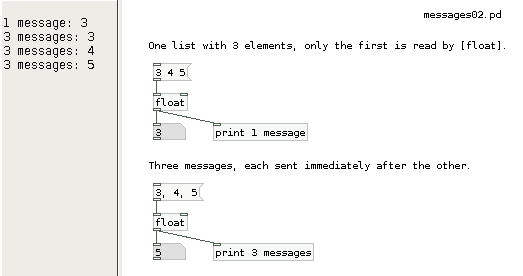
The message box also has an advanced feature: it allows you to send messages without wires by using a semicolon. Like commas, semicolons can be used to create separate messages. However, all messages after the first semicolon will be sent to a destination specified by the selector of the message, which below is the [receive] objects name "parameter" and "parameter1." (Messages may also be sent to the Pd engine in this way by using the selector "pd" to specify the destination). This technique is usually used to send several different messages to different destinations. (Note: you can use a leading semicolon if you don't want to send anything to the outlet of the message box.)

Special Methods of Message Boxes
Just like most other Pd objects, message boxes also react in special ways when they receive messages starting with special selectors. For example sending a message starting with the selector-word "set" to a message box will set the content of this message box the whatever follows the "set"-selector. "set 1 2 3" for example will erase the previous content of the message box receiving this message, then fill it with "1 2 3".
There are many more special methods for message boxes, like "add", "add2", "adddollar" and so on. Please check the help file for message boxes for details. Changing message boxes by these method- or meta-messages dynamically is a powerful feature of Pd, but it can also be a cause for subtle bugs in your patches if you aren't careful. If you want to avoid accidentally deleting the content of a message box, you can guard it with a [list] object in front of the box. This will convert all messages to proper list-messages that have a selector "list". a "set x" sent through [list] will become a "list set x" and it will not delete the message box content anymore. Of course, if you actually want to set the message box to "x" don't add the [list] or add a [list trim] after it as well.
Packing elements and variables into a list
You can create more complex messages by joining several elements together as a list - the most current object for that is [pack]. Elements may be numbers (specified by "f"), symbols ("s"), or a mixture of the two.

If you want to work with a list that combines fixed and variable elements, you can use dollarsign variables in a message box. These will get filled in by the corresponding elements from the message that arrives at the inlet. $1 will take the first element, $2 the second, and so on. Note that $1 refers to the first element, not the selector-- with the message "frequency 660" $1 would be "660." Also, remember that "13" is shorthand for "float 13," so in the example below the message "time $1" will expand to "time 13." Finally, note that "symbol end1" is what comes out of the symbol box (which shows how symbol messages can be useful).
Combining the power of [pack] with variables, it's possible to build complex commands for your patches:
Deconstructing messages: unpack and route
After you've built and formatted the commands you need, in the next part of your patch you can decide where to send them. First we can look at [pack]'s evil twin, [unpack]. As the name says, [unpack] separates a list into it's individual elements. This can be useful after you created your list command, to distribute it into the several parts of your synthesizer patch. Be sure to match the creation parameters with the format of the list you're expecting to receive.
Besides deconstructing your messages, you can also sort them qualitatively, through string comparison. For that we use [route]. With [route] you can send different messages to the same input, and sort them out quite easily.
The [route] object has two modes: the first routes messages according to the selector; this mode is set whenever you provide symbolic atoms as the arguments, like [route dog cat]. In this mode, you could use the object to route messages according to the built-in message types - bangs, floats, symbols, lists, etc.:

The [route] object typically trims off the atom that is being used for the comparison (except for float and symbol messages). In "selector mode," you can use the message selector as a kind of "filter" to channel the remaining element to a specific outlet, as below:

Below is an example of the [route] object's "float mode," where list messages are selected according to the first element (so that you can easily route lists of numbers). This mode is set by using float parameters with [route], such as [route 1 2 3]. (Remember that the message "1 20" is a shorthand for "list 1 20.")

If you just send [route] a message consisting of a single selector with no elements, you can use it just to trigger events. In this case, the output is only a bang.

And the grand finale: combine all objects (and variables) to create your own complex commands, and distribute them through the various parts of your instruments - all in the same patch:

Math
In order to work your data, using mathematical functions is essential to produce something in Pd. Numerical values can be mathematically manipulated with numerous arithmetic objects. These are divided into sections, according to their function:
[+] [-] [*] [/] [pow] simple arithmetic
[sqrt] [log] [exp] [abs] higher math
[sin] [cos] [tan] [atan] [atan2] trigonometry
[mod] [div] fraction work
[max] [min] [clip] [moses] numbers and ranges
[random] lower math
[==] [!=] [>] [<] [>=] [<=] relational operators
[mtof] [ftom] [powtodb] [rmstodb] [dbtopow] [dbtorms] convert acoustical units
[&] [&&] [|] [||] [%] bit twiddling
Simple arithmetic
This section deals with basic mathematical functions:
- [+] - plus
- [-] - minus
- [*] - multiply
- [/] - divide
- [pow] - power
Each math object does one operation only, taking usually two parameters for it. For example, if you want to sum 2 + 3 + 4, you need to create the necessary objects in a chain - because in reality you are doing two operations.

Don't forget that Pd differentiates between left inlets - the hot inlets - and other inlets - the cold inlets. So if you want to make your operation sucessfully, you must first get the right number in, and only afterwards the left number.

So, if you have an operation where you know that one of the numbers is going to be stable, you should connect that number to a cold inlet - in case the numbers can be changed and the operation still makes sense, of course.
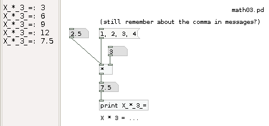
Or you can use the second number as a parameter of your object. In case you don't have any parameter it's like having 0 as a parameter (which was what happened in the previous examples). In case you put in a new number, the second parameter will be actualized.

I guess it isn't necessary to explain how [+], [-], [*] and [/] work. But for the other objects some words will be necessary. [pow] is a basic exponentiation operation, but with some perks to it. First, you can't input any negative base numbers (the left input). And second, you can use negative exponents (right input).

Higher math
Here are introduced some objects that are often used in mathematics:
- [sqrt] to take the square root of a number (no negative numbers allowed)
- [abs] for the absolute value of a number (turns negative numbers into positive numbers)
- [log] and [exp] are the normal functions already known in math
Trigonometry
The objects here relate mainly to trigonometry, and they work the same way already explained for the previous objects. In case you need any information about trigonometry, we suggest to look for a more specific manual. Only one detail: there is no symbolic definition of Pi, so in case you need it, you'll have to type the numeric value as precise as necessary.
Fraction work
With [mod] and [div] you can notice if a fraction produces a remainder and what that remainder is. [div] gives the result of a division without any decimal numbers. [mod] does the opposite, produces the remainder of a division. Note that these objects only work with integer numbers.

Although the explanation before might seem to be a bit dry, these objects are quite useful if you want to build a step sequencer. Combining [div] and [mod] you can control higher group orders of numbers, creating bars and beats. For example:

In this patch [div 4] divides the total beat count by 4 without any remainder, producing the bar number. [mod 4] shows only the remainder of the same division, which in turn is the beat number. Note that the original results vary between 0 and 3 - but it makes more sense to us to see numbers between 1 and 4, so we add 1 to them.
Numbers and ranges
It can be important to know how to make number streams fit certain ranges. For that there are several choices around. The most simple operations imply limiting a range on the upper or lower side. For that you can use [min] or [max], respectively.

Of course, you can change the parameter at any time, by sending a new value to the right side input. Note also that these objects output a number even if the output doesn't change.
[clip] acts as a mixture of both [max] and [min]. You just define the range boundaries.
Another much used object is [moses]. This one doesn't limits the range, but distributes it through it's outlets - a bit like we already saw with [route]. For example, if we wanted to divide between positive and negative numbers, we would have to use only [moses 0]:
This can be quite useful to distribute numbers around several inputs - imagine you have an instrument which plays midi notes up to 60, and another for the higher tones...
Random numbers
Random numbers are quite important in electronic music. Whenever you want to add some imprevisibility to your patches, you'll need someone else to make decisions for you. For that you can use objects like [random] or [shuffle] to generate numbers for you according to certain rules. These numbers are never completely random, as there is always a certain logic to how they work. But they do feel random, as the repetition pattern is too large for a human to grasp.
[random] is Pd's standard integer generator. What is makes is that if produces a "random" number between 0 and X-1, being X the generation parameter you give to the object (or feed it on the right side). Each time [random] gets banged, it produces any number in range. Here is a sequence of random numbers with [random]:

A quite similar object is [shuffle], a Pd-Extended object. It works on the same way (except that you define the range yourself), but with one big difference: it keeps the numbers in memory, so that no number is repeated until the whole sequence has been gone through. This can make a big difference, for example, if you're playing back random samples, and want them to repeat more or less often. These are two nuber sequences where all possible numbers have been generated.
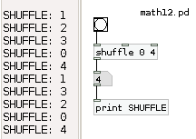
Relational operators
At some point while programming you'll need to compare values to judge situations. Pd offers the normal logical operations that you surealy already know. These objects produce an answer in binay form: 1 for yes and 0 for no.

Conversion between acoustical units
Another set of very useful objects is the next group, which makes conversions between the realms of acoustics. Of course it would be possible to program these objects yourself, as long as you know the formula. But since they're quite used, it makes much more sense to have them around ready to use.
[mtof] transposes from midi pitch into frequency in Hertz. A good reference point is the central C at 60, or the 440Hz central A at 69 - after that add or subtract 12 (semitones) for each octave. Obviously, [ftom] does the inverse operation. By the way, you can also use float numbers - which would produce a microtonal scale.
[dbtorms] converts from decibels to linear RMS amplitude, so that 100 dB corresponds to an RMS of 1 Zero amplitude. [rmstodb] takes over the inverse operation.
And [dbtopow] converts from decibels to power units, that is, the square of the RMS scale.
Bit twiddling
aa
Expr
aa
Audio math
aa
Lists
First, download the patches for this chapter: Lists.pd.zip
Often you want to group elements like numbers together into a single message so that an object can respond to multiple things at once. The simplest kinds of lists are made up of collections of numbers. For example if you want to turn on and off notes in a musical synthesizer, then you could make a list of two numbers that includes the pitch and the amplitude as a single message.

For many math objects, you can use a list as a shortcut for sending data to each inlet. With an object like [+ ], you can send a list of two floats to the left inlet, and [+ ] will interpret the second, rightmost number in the left as if it was sent to the right inlet, and the first, leftmost number as if it was sent to the left inlet.

Lists vs. list-messages
If you use the term "list" in common language, it may describe any collection of things. For example "milk eggs honey" could be your shopping "list". In Pd, lists are a very similar concept to something like a shopping list or a to-do list: a list is a collection of data that can be manipulated. Like to-do lists, you can add and remove items from lists. You can also do a wide range of things to lists in Pd, from sorting to math to generating symbols.
The term "list" often is used as a shorthand to describe a special kind of message: the so called "list-message". List-messages are messages that have the symbol "list" as their very first element (the selector). Lists starting with other words are sometimes called meta-messages in Pd lingo, and most objects react very different depending on what kind of message they receive. Lists are collections of data, that can be sent around between objects, while meta-messages are like commands to an object, telling the receiving object to do something specific, like open a file (e.g. "open voice.wav").
Pd sorts lists from meta-messages by looking at the first element. If the first element of a message is a float, then Pd labels that message a list. If the first element is a symbol, then Pd calls that message a non-list, or a meta-message. There is one caveat: if the first element is the symbol "list", then Pd calls that message a list.
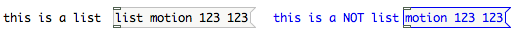
Converting to and from lists
Our shopping list from above would not be a list-message to Pd, because it starts with the symbol "milk" instead of "list". So Pd would interpret it as a "milk"-message. To convert it to a proper list-message, you can send it through a [list] object: [list] will take any input and convert it to list-messages by prepending the symbol "list" in front so that it reads "list milk eggs honey" afterwards. If the first element already was "list", it will pass the message unchanged and not add a second "list" in front. To convert a list to a non-list meta-message, use [list trim] which will strip off the "list" again and leave you with "milk eggs honey".

Lists can used for processing collections of data. Once the data is organizing into lists, then it is much easier to sort the data and route it to the places it needs to go. There are a number of objects that output a range of different kinds of data, so they need to use lists instead of specific outlets.
Pd-extended includes a very useful library of objects that simplify all kinds of list operations: the list-abs. It gives you a wide variety of ways of manipulating and working with lists.
Order of Operations
The order of operations in Pd is determined by rules regarding:
- hot and cold inlets
- order of connecting
- depth first message passing
The application of these concepts appears frequently in Pd code.
Hot and Cold Inlets
The order in which inlets are triggered is largely ruled by the concept of 'hot and cold inlets'. The leftmost inlet of any object is always a hot inlet. Whatever an object receives to the hot inlet will trigger the object and create an output.
All other inlets are cold inlets. Whatever the object receives to them, it stores as a value, but does not output anything. This can be seen at work with a simple counter example:

A "bang" to a hot inlet is a special message that causes an object to process and produce output using previously initialized or set values.
In the above example, the following occurs :
- The cold (right) inlet of the float object stores the result from the addition object [+1]
- The float object does not output before it receives anything at hot (left) inlet.
- When sent a "bang" message, the float object sends a value and a 1 is added in the [+ 1] object
- The result of the [+1] object is sent to the cold inlet of [float]
- Because this inlet is a cold inlet - the value is stored until the next bang. This is why above construction does not produce an endless loop (thus crashing your Pd session or reporting a stack overflow) as shown in the example below:
Note : If there is no value specifies in the creation argument of the object inputting and outputting to and from the float, the default value will be output. For example, a float object will output 0 if no value was specified.
Order of Connecting
While multiple incoming connections to the same inlet are rarely problematic, care has to be taken when:
- the order of operations is important
- making multiple outgoing connections from a single outlet
The order of events is determined by the order in which the inlet connections were made.
Note : Since Pd does not illustrate the order of events it is not easily known by looking at the patch itself.
Trigger
Trigger is a very useful object for managing the order of events. Trigger takes an incoming value, converts it according to its arguments, and outputs the new values through its outlets in order from right to left.
Below you can see Trigger in action.
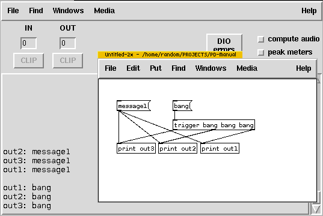
Note : you can use 't' instead of 'trigger' when creating the object.
Depth first message passing
There is one more rule of Pure Data programming that is important when scheduling events - 'depth first message passing'.
This rule states that at a forking point (as in a trigger object, or multiple connections from a single outlet) a single scheduled action is not "finished" until its whole underlying tree is "done".
Consider this simple example. Try following the path with your finger remembering that the trigger's right to left order and depth first rule:

The resulting number will be always the same as the input number as the scheduling logic is taken care of according to rules we defined so far.
Consider again the improperly connected counter example that will either crash your Pd session or report stack overflow due to the infinite loop which is enabled:
From the point of view of depth, the above example represents infinite depth - the message passing is never finished.
Wireless Connections
Soon after some introductory patching, a Pd user will soon discover the slight inconvenience of connection lines running over objects to reach other objects. Luckily, there's a solution.
Using the send and receive objects data can be sent from one part of the patch to another without connecting lines. These objects can also send data to other windows. The send and receive objects need an argument to identify each other. This argument is usually in the form of a word.
In the above example, [metro 1500] generates bangs at the interval of 1.5 second (1500ms) and is sending the data to the [send beat] object. This in turn sends the data to the [receive beat] object.
A single send object can be received by multiple receive objects.

The bangs in the above example are picked up by each [receive beat] object because they all have the same argument - "beat". There is no limit to the number of sends and receives with same argument. It is possible to have many sends. Just add to the example above more [metro] objects:
What kind of data can be sent?
[send] and [receive] are for control data - messages, symbols, lists. For audio signals a 'tilde' version of these objects are needed. [send~] and [receive~] can be used to receive a single audio signal at many places.
This example shows audio sends used to create a multitap delay:
Throw and Catch
In the above example you may notice that outputs from delay lines are not sent with [send~] back to [r~ out]. Audio signals can only have one [send~] but many [receive~]. While there are technical reasons for this difference, a handy pair of audio objects that can help to achieve many-to-one sends are [throw~] and [catch~]. Many [throw~]s can send audio signals to one [catch~].

Using [catch~] it is possible to further control and process audio (i.e.: volume control, VU metering, limiting, reverbs, etc...).
Coincidentally, all objects we described above ([send], [receive], [send~], [receive~], [throw~], [catch~], as well as [delwrite~] and [delread~]) all work across different patches, subpatches and abstractions.
In conclusion, the objects described above are powerful tools to not only send and copy data and audio around a single patch without messy connections, but to create connections between individual patches, subpatches and abstractions.
A word of warning though: the arguments passed to these objects are always global - they are accessible from all patches and abstractions opened in a single Pd session. This simply means that a situation can arise with unwanted 'crosstalk' of data or multiplies defined. Care has to be taken on names of arguments, while at the same time a technique exists to localize arguments using dollarsigns.
Subpatches
With more complex coding, patches can become large and difficult to manage. Subpatches help resolve this problem.
It is useful to think of subpatches as container or drawers, where code is organized and stored. A subpatch is created by typing "pd" into an object box followed by any an arbitrary word. When creating a subpatch like this, a new empty subpatch window will appear and you can put code in this window.

Subpatch Inlets and Outlets
Subpatches can have inlets and outlets. These are created by using the inlet and outlet objects (and inlet~ or outlet~ for audio signals).

When you create inlets and outlets note that the origial subpatch object also gains inlets and outlets.
Closing and Reusing Subpatches
When closing subpatch windows the code is not lost but still exists and works. Subpatch windows can be reopened by left-clicking on subpatch objects or by right-clicking and choosing "Open" from menu.
Subpatch objects can be freely copied and each copy can be individually edited - changes are not reflected in any other subpatches, even if they have the same name.
Abstractions
Subpatches are useful to clear code from the main canvas. However, sometimes precisely the same code is used again and again, in which case it isn't convenient to create copies of subpatches. In these cases it is much more useful to call an external patch directly. This kind of patch is known as an abstraction.
Consider a situation where a random note on minor C scale converted to frequency is needed multiple times in one patch. A basic construct for this would be:
Every time [random] is banged, one of the displayed numbers will be transposed + 50 and through [mtof] converted to frequency. It's a construct that's inconvenient to reproduce many times in a patch. The abstraction is a separate patch with inlet's and outlets and saved separately.
Saving Abstractions
The abstraction needs to be saved on a path (folder) that Pd looks into each time an object is created. That path (folder) can be defined in Pd preferences however its simpler to have the abstraction in the same folder where the patch that calls it is saved.
Calling and Editing Abstractions
Consider a main patch "cminor-oscilations.pd" saved in /home/user/puredata/ and "cminor.pd" in the same folder. The abstraction (or an instance of it) is called simply by typing the name of the patch (without extension .pd) into an object box.
By clicking on the [cminor] (or right-clicking and choosing "open") the abstraction is opened in new window, just like a subpatch. However now a separate patch (cminor.pd) is being edited. This means when changes are saved all instances in the calling patch are updated.
Dollar Sign Arguments
Sometimes when you are programming, you want to mark a position where you will later put a value. In Pd this is done by using dollar sign arguments. They are used in object boxes and message boxes, but careful, they have different meanings when used in message boxes versus object boxes. In both cases, they could be called "replacement variables": they mark the spot where you want to replace them with an actual value.
spot where you want to replace them with an actual value.
In Object Boxes
In the same way as objects like [metro], [random] or [osc~] accept arguments (as in [metro 1000]) an abstraction can accept arguments that can be used inside of it. Consider an abstraction that combines [metro] and [random] objects to produce random numbers that also denote time intervals at which they are produced. In its basic form it could look like this:
The abstraction above has two inlets, at left it would receive on/off (1/0 float) input and at right the range for the [random] which will then pass random numbers to [metro] and at abstraction's outlet. As it can be seen, the abstraction will initialize with 1000ms to [metro] object and range from 0 to 1000 to [random] object. Now, imagine you are writing an abstraction not knowing what specific arguments you want to pass on to it. Or, if you would like to change the value of the random object dynamically, you would have to change the value that is passed on to the right inlet.
However, this can be done differently by passing arguments to the abstraction at the creation time using dollarsigns inside the abstraction. Consider this change including demonstration of usage. (Note: the loadbang object outputs a single bang when the sketch is opened):

At the creation time two arguments (1000 and 1100) are passed to an abstraction [randometro1]. Inside the abstraction, $1 is substituted with the first argument (1000), and $2 with the second (1100). The effect (which was goal in the first place) is to be able to define the min-max range (as opposed to only 0-max) at which abstraction works. Because [random] inside the object needs a 0-max range, first argument (presumably smaller) is subtracted from the second. The result is passed to random to produce random numbers which are then added to the first argument. In demonstration of usage in the window behind the abstraction this construct produces random numbers between 1000 and 1100 in the first case, and 500 and 600 in the second.
While $1, $2, ... etc. represent first, second, etc .. argument to the abstraction, there is one special dollarsign that is extremely useful in Pure Data. $0 is a variable that is internally substituted by unique four-digit number per patch or instance of abstraction. In other words, Pd takes care that each instance of an abstraction or patch will be assigned this unique number and stored in $0 variable. The usefulness of this is immediately apparent in the following example of simple delay abstraction where delay-lines with the same name in multiple instances of same abstraction must be avoided:

It is important to understand that, despite $0 isn't actually substituted with the unique number inside the delwrite~ object, the latter actually writes audio signal to delay-line named "1026-dline". $0 variable is assigned in every opened or called patch, which also solves the problem of two or more instances of same patch (i.e.: simple synth). $0 also saves from situations from unwanted crosstalk of frequently used variables in different patches. An attentive reader/user could also point out a possibility to use $1, to use an argument passed to an abstraction (like "one" and "two" in above example), in which case care must be still taken to assign unique arguments to abstractions used in the same Pd session.
$0 is at times called localized variable, however, in my view, that is not entirely true. A variable constructed with $0-something can still be accessed from the global namespace by simply finding that unique number and than calling that appropriate variable (like for example to read the delay-line named 1026-dline from above example from within another independent patch). In fact this can sometimes be even useful. It is however true that using dollar variables is a localization technique.
In Message Boxes
A frequent confusion arrises from the use of dollarsigns in message boxes. It is important to understand that dollar variables in message boxes are actually totally local to that message box itself regardless where they appear. They will be substituted only by what a message box receives on its inlet. In an example of abstraction within which both types of dollar variables are used:

The [shotline] abstraction, which has a goal of producing a ramp of values in specified time from some starting value to ending value, takes three arguments - speed, from-value and end-value. These variables are accessed inside the abstraction with $1, $2 and $3 in the [pack object]. The latter sends a list of those three arguments to message box, in which $1, $2 and $3
represent only elements of an incoming list and not directly arguments of the abstraction. Message box first send the second element, followed by a comma - so it resets line to that value, and then a pair of third and first element which correspond to target value and time-frame of a ramp.
Graph on Parent
In Pure Data it is extremely easy to create interfaces that include sliders, buttons, number boxes, toggles, colored backgrounds... to see how to use them, look at the "GUI objects", or simply right-click on one of them and choose 'help'.
However, they still need to be connected and to use them away from the data inlets that they control, they have to be repeatedly created in order to function the way we want. Consider an example of a delay abstraction (already used above) that takes at it's second inlet a value for time of delay which we want to control with a slider:

So, every time when an abstraction like that is created, when it is desired to be controled by a slider, many steps are needed to recreate the same visual and programmatic construct. Luckily, there is a very powerful feature of Pd: graph-on-parent. It enables a subpatch or an abstraction to have a custom appearance at the parent 'calling' patch.
Instead of plain object box with the name of abstraction and arguments, it can have different size, colour, and all the gui object inside. Here's how it's done, continuing on delay: inside the abstraction or subpatch, rightclick on white underlying canvas and choose properties. Inside a dialog that appears, enable toggle for graph-on-parent:
Applying this will create a grey-bordered box within the abstraction. This box represents the shape and form of the abstraction on the parent canvas (the calling patch). Whatever the size and contents of that grey box will be visible excluding connections, object boxes and message boxes. In the properties of the abstraction below the graph-on-parent option two rows of four values represent X and Y settings. Size will set the size of the box while margins will only set the position of that grey box within the abstraction. Adjusting these setting accordingly:
Inside the grey box it is now possible to create a suitable interface, according to users needs and aesthetic preferences needed for functional and pleasurable control of parameters. See properties of individual GUI objects (like canvas, slider, etc) and experiment what can be done with them. Simple delay abstraction in this case receives an underlying colour canvas and two sliders, one for delay-time and the other for incoming level:
While editing the abstraction with graph-on-parent, abstraction is greyed-out on the parent canvas until the abstraction window is closed. Only then the final appearance can be seen:

The purpose of a pixel wide transparent gap between the gray border and canvas in the abstraction is to reveal inlets and outlets at the parent window - however with sizing of inlaid canvas, even black borders can be hidden. Calling this abstraction as usual - by creating an object box and typing the name of abstraction without the extension .pd - will always instantly create this GUI:

that needs nothing more than to connect to audio signals and adjusting controls:

Arrays, Graphs and Tables
Often, we need a way to conveniently store large amounts of data and to be able to instantly access it. Pd uses Arrays for this purpose. An array can be thought of as a container in the computer's memory with neatly indexed drawers with data that can be looked up instantly. They are used for many purposes, including the loading of soundfiles into Pd.
Arrays are accessed by their Index number. These numbers are used to look up values stored in the array. So if we ask an array what is stored at index number "0", it will return the first value stored there. And if the array has 100 values stored in it, asking it for index number "99" will give the last value in the array.
Arrays are displayed on screen in Graphs. A graph plots out the data stored in the array using an X/Y format, meaning that the index numbers of the array are shown on the X (horizontal) axis, and the values stored at those index numbers are shown on the Y (vertical) axis. This graph is created automatically, whenever we create an array.
However, when we don't need to see the array on screen, we can hide it away inside a Table. A table is a subpatch which contains both the array and its graph. In this case, it is used with a creation argument which gives the name of the array. For example, if you create an object named [table mytablename], then inside the [table] object you will find an array named "mytablename" inside its own graph.
Creating an Array
To create a new array, choose "Array" from "Put" menu and a dialog appears:

Here the name and size of array can be defined. The name of the array should be unique and $0 can be used in a name (i.e.: $0-sample1) to avoid crosstalk. The size of the array defines how many elements it will hold. If the array will be used to control a 16-step sequencer, the only 16 elements are needed. But if it will contain a two seconds of audio at a 44.1KHz sampling rate, then the array would require 88200 elements. (The array can also be resized later, however, when the soundfile is loaded into it.)
The "save contents" button will cause Pd to save the contents of an array within the patch file. This is useful when it stores data that might be used each time the patch is opened, for example to modulate the frequency or amplitude of a sound. However, this is not recommended if soundfiles will be loaded into it, as the audio data will be stored as text information inside the Pd patch!
The next three options, "draw as points", "polygon" or "bezier curve", define how data will be visualized: as discreet points (horizontal lines), as cornered zigzagging connected lines or smoothed bezier-curved line:
The last option is whether to display the array "in new graph", or use an existing one ("in last graph"). Most often, each array will use its own, new graph. However, displaying multiple arrays in one graph can be a way of visually comparing information.
Using Arrays to Display Audio
Sometimes arrays can be used to display the waveform of sound signals. Using [tabwrite~], sound signals are recorded into table. Every time a [tabwrite~] receives a "bang" from the [metro] object, it will start recording (sampling) the incoming audio signal into the array, graphing it when it reaches the end of array:

In above example, [tabwrite~] is sent a "bang" every half second to continuously display the waveform produced from two [phasor~]s, and a [clip~] object.
Writing Data to an Array
Data can be put as values into tables too, simply by sending an index number (X-coordinate) and a value (Y-coordinate) to [tabwrite] (no tilde!) object:

In above example, for each index number (they are produced with a counter and start from beginning (0) with [mod 100] at 100) a random value between -1 and 1 is written to a table.
Reading Data from Arrays
Tables can be read (looked up) in two ways: to get discrete numbers, or to directly read them as audio waveforms. With [tabread] an index number is taken as an X-coordinate and value in the table (Y-coordinate) is output. In the following example an array is used in a repeating sequencer-like fashion as a simple rudimentary control for an sawtooth oscillator:

With [tabosc4~] table data is used as an oscillating waveform - like sinewave is used in sinewave oscillator [osc~] and sawtooth wave is used in [phasor~]:
In above example an oscillating waveform from table7 is used to modulate frequency of an oscillator that is using the same waveform to synthesize sound. Changing the table in realtime will influence the modulation and oscillation. Source for hours of fun!
Using Arrays to Play Back Samples
Another way to read data from a table is to play it as a sound recording - which usually is, especially if array is filled with data from a sound file. For this [soundfiler] object comes handy, as is shown in the following examples. In first, array is played using simple and straightforward [tabplay~] object, which offers flexibility of playing from a specific point for a specific length. Remember, digital sound recording is, simply put, high frequency measurements (sample rate, i.e.: 44.1kHz) of sound vibrations. In Pd, when soundfile is loaded into a table, every single measurement (sample) can be accessed. That is why, 44100 samples equals 1 second (in most cases).
Following to the aforementioned possibility of accessing individual samples within a sound recording that's been loaded into an array, a [tabread4~] object allows more computational flexibility. Below, [phasor~] object produces ramps (sawtooth wave) from 0 to 1 at the audio rate (commonly 44100 times in a second). If frequency of the [phasor~] oscilator is 1Hz, it will output a ramp from 0 to 1 in exactly one second. If multiplied by 44100 and sent to [tabread4~], it will read first 44100 indices (indexes) in a second and output the values as an audio signal - example below tries to demonstrates that with a twist or two:
First twist comes from an idea of changing the frequency of phasor, and this way slowing down the ramps. This would however shift the pitch of the sound - like changing speed of a vinyl record. This is prevented by multiplication with higher number of samples, which effectively turn the parameter into the length of a sample that is being looped instead of slowing it down. Looping is here because [phasor~] starts again at 0 after it has reached 1. The other twist is the starting point, which simply shifts the whole loop by adding number of samples (seconds multiplied by 44100).
GEM
GEM which stands for "Graphics Environment for Multimedia" is a tool for visuals. With GEM it is possible to generate and manipulate 2D and 3D graphics and animations, process & modify media like images & videos and generate particles.
This manual will explain the main objects that comprise GEM, and the basic techniques you will need to get started creating your own GEM projects.
A good start to get an idea about the various possibilities what can be done with GEM is to take a look at the examples & help patches that come with GEM. They can be can be accessed via the Pd Help Browser (in the Help menu, under "Browser..."), under "examples/Gem" or have a look at the GEM manual in "manuals/GEM."
GEM is a Pd Library and comes ready to use as a part of Pd-extended. It was initially written by Mark Danks. Some of the past and current GEM developers are IOhannes Zmölnig, Chris Clepper, James Tittle(tigital), Cyrille Henry.
What GEM Is For
GEM is the part of Pd used for creating motion graphics. You can use GEM to create and play back videos and still images, mix videos, draw shapes in 2D and 3D, move objects and shapes around. Because it is part of Pd, you can make your visuals react to sounds, generate them from sounds themselves.
GEM & OpenGL
Since GEM is based in a large part on OpenGL, we recommend learning about OpenGL, and 3D graphics in general. The main OpenGL book is known as the "Red Book," titled OpenGL Programming Guide: The Official Guide to Learning OpenGL. It is outside the scope of this introduction to get into the details of 3D animation, but we will do our best to explain the basics.
The Very Basics of Rendering
When your graphics are "drawn" into the computer screen, we call this process rendering. Quite simply, your graphics may come from many different sources, such as video files, image files, and algorithmic animation, but at some point they all need to be combined together and displayed as pixels on your display, whether that display is a computer monitor, TV, LEDs, or a projector. Since you may not be drawing to all the pixels on your screen at once, we call this area a "window." You are probably very familiar with the concept of different windows on your computer.
The end result of the rendering process, the section of pixels that will be drawn to the screen, is called a "frame." Rendering happens discretely, at a certain number of frames per second (e.g. the framerate). Think of it as if the frames were images on a film strip, flashing by. Each one is an individual, separate image, and the illusion of motion is created just like in film, by showing sequences of slightly different frames. 25 frames per second (fps) is the default, and around 15 fps is about as slow as you can get before you lose the illusion of movement.
You should be aware that complex graphics may take a long time to render, possibly longer than the normal time between frames. In this case, you will not be able to reach the framerate you've set.
[gemwin]
[gemwin] is the GEM object that represents the window into which your graphics will be drawn. It controls the timing of your graphics, by scheduling when frames should be drawn to the screen based on the framerate, and discards them if they have taken to long to render (is this true?). By default it also clears the window every frame and sets it to a "background" color, specified as a list of R G B values.
Messages to [gemwin] change the size of that window, start and stop the rendering process, alter the position from which you look at your 3D , and control various other aspects of the window, such as antialising. Other messages to [gemwin] are explained in detail in the [gemwin] help patch.
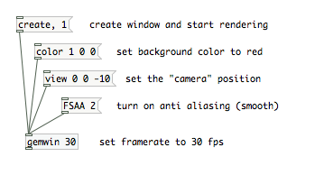
Fig. 3: Some settings for [gemwin].
gemhead
[gemhead] is the start of a chain of graphics operations connected by patch cords that should be executed every frame. Drawing operations, including video effects, cascade from the top down, adding to each other flow downwards across objects. This chain of operations is triggered invisibly by [gemwin] according to the framerate you have set. You can turn this automatic rendering off by sending [gemhead] the message 0. Additionally, [gemhead] can be triggered manuall by a bang, which is useful when you want to control the order in which your graphics chains are drawn. With several gemheads, you can force this execution order by either giving them an argument or set their order number. Lower numbers are triggered first. The default ordering number is 50.
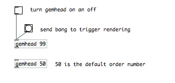
Fig. 4 The number argument after gemhead defines the order number.
Let's get started
We will start from the very beginning. GEM is based on the principles of OpenGL. You can work with images and videos (which are by the way a number of images that change with every frame), and you can also work with 3D shapes like 3D models, curves or simple rectangles.
Here is a first example that displays an image in your GEM window.
NOTE: This image "subway.png" needs to be placed in the same place as this patch..

Fig. 1: A Basic GEM patch. The key objects in this example are [gemwin] and [gemhead].
In order to open up a window into which you can draw stuff you have to create an object called [gemwin] which is your render context and you send it the messages "create" to create the window and "1" to start the rendering.
Starting with a [gemhead] you create a "render chain", that will draw things into your GEM window. In this case an image which is mapped onto a rectangle.
Here is how it looks like.

Fig. 2: GEM window
pix_objects and and 3D Shapes
The order in which objects are connected in Figure 1 might seem a little strange to you. From your real life experience you would probably do it the other way round: First grab a piece of paper or a t-shirt and then draw an image onto it. In Gem this is different, you create the image first and then you decide what you're going to do with it: project it on a square, a sphere, a 3d model.
Another basic principle of how OpenGL works, is that you distinguish between functions that affect your images and functions that affect your 3d shapes. Images have to be mapped onto 3d shapes. This means: usually no image will be drawn in the GEM window unless it is associated with a 3d shape, very often a rectangle, but of course there are also a lot of other shapes, more about that later.
Eventually, this gives us two sets of GEM objects: the one that relate to image processing and another set that relates to shapes and their transformations. The first group will get a lot of attention, especially in the beginning of this manual, but on the other hand, always have in mind, that images are only one aspect of OpenGL.
The objects that deal with textures are called pix objects and have the prefix "pix_" in their object name. The doorway into the shape world is called [pix_texture]. This object sends the image from your CPU memory to the graphics card memory from where it is "mapped" onto one or several shapes.
Images, Movies and Live Video
For any image processing you need a source image. This can be a file that you load from your harddrive or a live video feed. This chapter will introduce [pix_image], [pix_film], [pix_movie] and [pix_video].
[pix_image]
In the basics chapter we already used the object [pix_image]. This object allows you to load picture files. Supported formats are *.tif, *jpg, *.png, *.bmp and *.gif.
To load an image into [pix_image] either add the filename as an argument or send it the message open filename. If you want to select a file using a file browser you can use the object [openpanel].
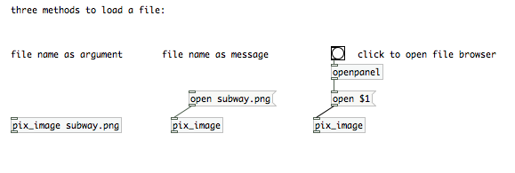
[pix_film]
As with [pix_image] you can load movie files by passing [pix_film] the file name as an argument, or by sending it an "open" message with the filename. The list of supported formats may vary depending on your installed movie codecs, but usually you should be able to play *.avi, *.mov and *.mpg files.
Please be aware that sound is not supported by [pix_film] ([pix_movie] neither). If you want to sync a soundtrack of a video to your images, you have to first extract it using an external video editor.
[pix film] will play your movie automatically if you send it a message "auto 1". The framerate at which your movie is played is dependent on the framerate that was set with gemwin. The message "auto 0" will cause [pix_film] to just display the current frame. You can use the right inlet to scroll through your movie or jump to a certain frame. That also allows you to play movies at different speeds, even backwards.
The rightmost outlet of pix_film will output a "bang" everytime the end of the film is reached.
[pix_movie]
[pix_movie] works exactly like pix_film. The only difference is that you don't need [pix_texture]. You can directly connect the outlet of [pix_movie] to a rectangle.
[pix_video]
[pix_video] will grab live input of a camera that is attached or built into your computer. Usually you can receive a video signal only once on your machine, so if another application or even another Pd patch already uses video input, [pix_video] will not be able to receive a signal. On the other hand, if you have several cameras attached to your system, you can use several [pix_video] objects and specify the the camera devices with messages like "device 0" and "device 1".
A "dimen" message will let you set the resolution of your video image. If you use a small resolution, your render engine will have less pixels to render and thus be faster, but of course this will also decrease the image quality. To test different resolutions you might want to set the quality setting of [pix_texture] to 0. You will also realize that not all resolutions are supported by your system. Just play around with dimen to figure out how high or low you can set dimensions.
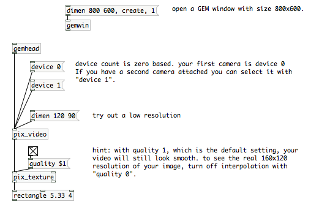
Related Objects
Finally, I also would like to briefly mention some other objects that allow you to "create" images. [pix_multiimage] will allow you to load several images at once. Use the right inlet to switch between them. Also check out [pix_set] if you want to create an empty image. Or play around with [pix_sig2pix~] if you want to feed your audio signal into an image buffer.
GEM mini-video mixer..
One of the first things you can do with GEM it´s a "video mixer". A video Mixer it used to be a "hardware" machine. basically, this machine combines the two inputs into a single output. Into a VJ setup, it used to be a very important piece, because that was the machine that allowed to mix in a creative way video content from vhs´s dvd´s video cams, ipods, laptops w video output or any other device with a compatible output..
Modern video mixers have more inputs, more outputs, different mixing modes and effects.
In pd it´s very practical to "emulate" that classic setup, one of the first benefits it´s that you can get rid of all that expensive hardware and do exactly the same function for a quarter of the price of a deccent video mixer.. (not counting the VHS´s, dvd players, video monitors and so..)
These are the basic elements you need to make the simplest two channel video mixer in gem:
Here we have two video players [pix_film], one video mixer [pix_mix] and the "output" [rectangle]
IMPORTANT: Pix_mix just works with same size images or movies.
Remember also that the slider that goes into the 3rd inlet of [pix_mix] has to be scaled between 0 and 1.
This is a good starting point to study the basic structure of a video mixer in gem but can be / should be modded when you want to make a serious use of it..
You can for example render each element of the composition in an diferent rectangle so you can modify rotation, position, size, etc in an independent way, instead of doing that with the final mix.
Also I recommend to make abstractions like "pd player" "pd chroma" "pd webcam".. So you will have a nice and clean modular interface.
1.5. Alpha, size..
To control the alpha and the independent size of a pix, we do the next:
NOTE: We need to transform the colorspace into rbga and enable the alpha blending. We can see which object do that function and where they should be placed.

1.6. Color.
With [colorRGB] we can colorize the video, images, etc.. there´s also an object called [color] but in that case, we don´t have an independent "inlet" for each color component. If you want to make changes in the opacity, you have to add the [alpha] object before the [colorRGB]. Default values are ( 0 0 0 1).

2- Adding webcam / live video input:
In Gem, you can use a classic usb webcam as video source and also any standard DV camera connected to the firewire port.
It´s also possible to connect several cameras into pd. In this case, check the help of [pix_video] and you will see how.
This is the structure of a minimalistic "video input" apparatus: (for more info cick help in pix_video..)
This is all we need to see the webcam in the GEM window in osX. for linux
To add pix_video to the gem string we make this:
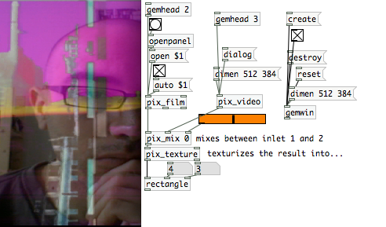
Here I added the message [dimen 512 384( to [pix_video] to adjust the dimension of the two sources to mix. If the size of the two sources in pix_mix doesn´t fit, this will not work!! .
By default, pix_video outputs 320x240 that is a decent resolution for realtime live video mixing so if you want to work in any other resolution, keep this in mind.
3-chroma key
Let´s continue modding the "mini_mixer" ..

Here, instead of the [pix_mix] we have the object [pix_chroma_key]. this obect its useful to make compositions and making transparent some parts. The [direction( message defines which video inlet will be "processed".
Also in Gem we can use another standard blend modes like add, substract, multiply, difference... we can find the objects in /reference/Gem or we can call them directly: [pix_subtract] [pix_diff] [pix_multiply] [pix_add].. It´s recommended to take a quick look into the help of this objects before using it, otherwise, probably you will get only Absolutely white images or absolutely black....
In this example, we can see [pix_diff], this objects shows the difference between two pixes.

if we change "diff" for "multiply", this is what we get..
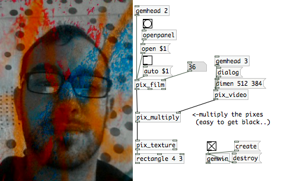

Pix Effects
In GEM, there´s a wide variety of effects and filters that can be inserted in the GEM chain.you can find most of them in the folder /reference/Gem.(listed mostly as [pix_"something"] )
The structure of the pix effects in Gem it´s similar. we have at least one inlet and one outlet that are used to integrate the effect into the GEm chain and sometimes, additional inlets used to modify the parameters of the effect. (via message or directly with a number) Of course we can know more about the effects and his parameters by clicking into his help.
I reccommend to integrate the effect in the gem chain just before the [pix_texture]. any other effects can be added to the chain in any desired order. (each order, probably will have different result..)
Since there are many effects in GEM (this could be a new book..), It´s better to explain very clear how is the typical topology of a pix effect and anyone interested in a particular effect, can check the help for more info.
[pix_lumaoffset]
[pix_duotone]
link to pix_gain and pix_threshold zip file
[pix_gain]
[pix_threshold]
Recording
Gem window
Here [pix_record] will be used to make a simple animation of png images (including transparency).
The patch might look a bit complicated but basically:
- the top quarter allows to create a Gem window and import Gem and cyclone/counter
- the lower-right part will mix two pictures at a certain rate given by the [metro] object
- the lower-left part will trigger recoding through [pix_record]
Note that pix_record can (at the time of writing) only record one pix chain - you cannot save a texture projected on a geometry (try with a [cube] for example).
GEM window properties:
This Chapter show how to go to fullscreen mode, (and leave it again) and how to setup the Gemwindow to work on the second screen.
Another options that we can perform with gemwin for example are killing the upper border, kill the macosX menubar and hide the mouse cursor over the gemwin (a must be for interactive installations..)
1- fullscreen
2-Extended desktop,
Most of the time, you have to deal first with your operating system before even opening pd...
While nothing is attached to the video output of the computer, the graphics card reserves for him all the performance, so usually you have to connect the vga/s-video cable or in some computers, like the new macs, you have to connect an "adaptor" (DVI-vga /DVI-composite..) to "inform" to the graphic card that you want to use the video output and then, your screen will turn black for one second (in case of osX) and now you are ready to go to the display preferences/ screen settings .. and turn on the second monitor, set the resolution and "extend desktop to that monitor" (in case of windows ) and set resolution and mirroring (on or off) in osX.
Note: Some times is better plug the video cable with the computer "off" an then start the computer in order to let the system recognize and adapt to the video output.
Mind that if we are using composite or s-video cable, resolutions greater than 720 x 576 are only going to cause trouble..
Also when you use DVI/Vga, the more resolution you use, less performance..
Apart of this things, When we want to use another screen or when we want to "project" the output of Gem, we are going to use at least two basical things: "fullscreen" and "offset".
in this patch we can see how it works..
Just mind that until you destroy and create the gemwin again, the changes in "fullscreen" or "offset" doesn´t take effect.
Offset it´s the amount of pixels that you have to displace the gem window. Tipically, you just need to displace the gem window in the X axis as much as the width pixels your screen has. (1024, 1280, 1440...). In the case of laptops, sometimes it´s required also to add a little bit of offset in the Y axis, Something like 20 or 40 should be enough...
Remember also that GEM it´s able to perform complex 3d things, so in addition to this basic setup objects, we can also set up a "lightning", a background color, a "camera position" and also fog!! ?!
Video Tracking
A precondition of a good working simple motion detection is that you can disable the autofocus on your camera and that you have a good control over the lightning situation (so no sun/cloud change or large shadows).
The first step to determine the position of a moving item in the field of view of your camera is to compare frames to each other. In a stream of video you can either compare the previous to the current frame or a previously selected frame to the current one. The fist method will give us the movement, but we will lose the coordinates when the movement is very small or stops.
[pix_movement]
Compare the previous frame to the current one. It takes a threshold value (0-1) as an argument and in the second inlet.

This will result in all pixel information blacked out exept the space where a difference is detected relative to the previous frame. We will get to the point how to measure that to trigger things when we compared it to
[pix_background]
It is the cousin of pix_movement with the difference that we can set the reference frame to which the current frame is compared. This is called background substraction.
Click on the reset message to pix background to set the current frame to the reference frame.
A drawback of pix_background compared to pix_movement is, that if lightning situations change, we will have to re-reset the frame to compare the current frames to.
[pix_blob]
either way, we need another object: [pix_blob]. The monochrome information we receive of Pix_movement/pix_background are called blobs. The [pix_blob] object will give us mre infomations about those blobs, which we need if a) we want to trigger things if something moves in the field of view of the camera (pix_movement) or b) something is in the field of view of the camera what wasn't there when we set the reference frame (pix_background).

With this patch, if you move in front of the camera, you will see the output of pix_blob's last outlet changing. Where I left the empty box you can continue to add something you want to have triggered. Possibly a [> 0.001] which is the threshold followed by a [change] and a [select 1] to generate a bang each time the movement goes higher than a defined value.
Getting the coordinates
OK, we built a motion detector, but what about the coordinates? Where is the actual movement happening in the image? [pix_blob] has two more outlets which are just that.
note: i was trying to translate those patches into a manual:
http://damm-net.org/wiki/index.php?title=Bewegungsmelder
The Chapter needs to be extended to cover pattern recognition (TUIO), pix_opencv (face recognition), blobs and multiblobs, IR illumination and multitouch technology.
Game Controllers
First, download the patches for this chapter: GameControllers.zip
There are many off-the-shelf Human Interface Devices (HIDs) which can serve as performance controllers. Most game controllers perform quite well in live performance since they were designed for fast paced video games. Gaming mice and joysticks and graphics tablets are especially good controllers. These types of devices can be used with Pd with very good accuracy.
Start with the Keyboard
The most basic game controller is the keyboard, and basically every computer has one, so its a good place to start learning about how to use game controllers with Pd. Pd comes with a set of very simple objects for getting the key press information: [key], [keyup], and [keyname]. In the example below, you can see the result of pressing and releasing the "Escape" key.
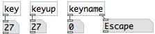
Let's start with [key] and its partner [keyup]. [key] outputs when the key is pressed down, and [keyup] outputs when the key Both of these have a single outlet which outputs a number based on which key was used, so here "Escape" has a key number of 27. This key number is based only on the position of the key, not the letter it types. This is useful since there are many keyboard layouts for different languages and countries.
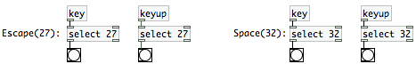
So we can now attach messages to the [select] boxes to make the space bar (key number 32) control a noise burst, and the Escape key (key number 27) control a 250 Hz sine wave. We make [key] send a 1 to make the [noise~] output sound to the [dac~], then [keyup] sends a 0 to turn off the noise.
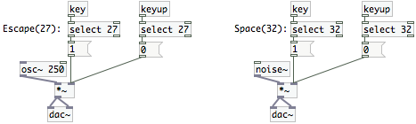
So that illustrates the most basic way of getting data from the keyboard. It is useful for many things, like turning the DSP on and off, creating the [gemwin], or toggling different parts in a performance patch. You could all of the keys to make a laptop piano.
Mouse Cursor
Basically every computer has a mouse that controls a little arrow on the screen. This little arrow is the mouse cursor. In Pd, we can get information about that mouse cursor using the [cursor] object. One piece of information that is fun to play with is the position of the cursor on the screen, called the x, y coordinates. When you bang the [cursor] object, it will output the current information about the position of mouse pointer. The "motion" message gives us the x, y coordinates. The message looks like "motion x 361" where 361 is the x position in pixels, or there is also "motion y 237" and 237 is the y position in pixels. If you use [print] you can see the "motion" messages in the Pd window.
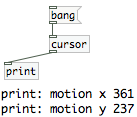
Right now, we are only interested in the "motion" information, so we are going to use [route] to get just the "motion" messages from the first outlet on [cursor]. To get updated position information automatically, we can "turn on" the [cursor]. It has a built-in clock, so you can turn it on just like [metro]. The difference is when you turn on [metro] you get regular bangs, when you turn on [cursor] you get regular information about the mouse cursor and mouse buttons. A few [route] objects will sort this information to get just the x, y position off the cursor on the screen. The [route motion] sorts out just the messages related to the mouse motion, or x, y position. Then [route x y] sorts out the x and y positions to separate number boxes so that we can see them.

So now we have two floats to work with, perfect for controlling the frequency of two [osc~] sine wave oscillators. Create two [osc~] objects, then connect one float to each, then connect both [osc~] objects to a [dac~] to output the sound to the speakers. Be sure to turn on the DSP audio computation, and you can now control these two oscillators with the mouse!
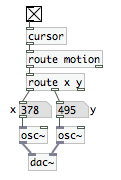
USB HID
You can also use just about any HID, such as joysticks, digitizer tablets, gamepads and ‘stomp-pads’ are widely available and inexpensive. Most of these HIDs are well built but not expensive, since they are made for the mass game market. The HIDs that are designed for "gamers", serious video gamer players, are very good quality but can cost quite a bit more.

Plug your USB joystick or gamepad into your computer, for example, and they will be recognized by your operating system as HID devices. Pd can get data from HID devices that your operating system recognizes using the [hid] object. For this example, we are going to start with a gamepad. This one is called the Logitech WingMan Gamepad Extreme, it is old so you can buy it for less than US$20. It is more fun than your average gamepad because it had a tilt sensor in it.
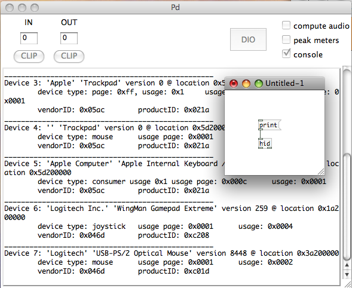
Start by creating an [hid] object and see what it finds. Send the "print" message to [hid] to get the list of HID devices that the operating system recognizes. We are looking for Device 6: 'Logitech Inc.' 'WingMan Gamepad Extreme' version 259 @ location 0x1a200000, the name matches the name of the gamepad above.
The gamepad is device 6, so send [hid] the "open 6" message. Then create a "toggle" from the "Put" menu, hook it up to the left outlet of the [hid] object. [hid] has two outlets: data comes out of the left outlet and status messages come out of the right outlet. We want the data, so we are only going to use the left outlet for now. Create a [print] and attach the left outlet of [hid] to that [print]. Now we are ready to see some data in the Pd window, turn on the toggle and you should see a lot of data when you move the gamepad and press buttons. NOTE Make sure you select your (device #) before turning on the toggle switch in order for it to work properly.
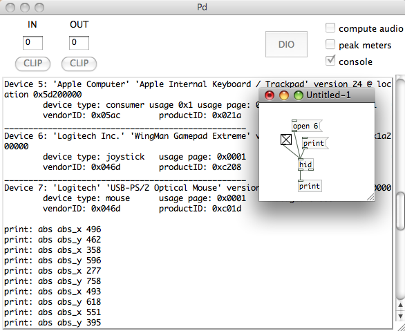
Now we can do something a lot more fun, let's make a simple instrument. We can make the left-right X axis of the gamepad control the frequency and the back-forth Y axis control the amplitude. We need to understand a little about the messages coming out of the left data outlet to use them. The data messages that come out of the left outlet of [hid] always have three parts: "type", "element", and "data". A message representing the gamepad's left-right X axis might look like "abs abs_x 254" or "abs abs_x 3". So we need to [route] those messages to get just the numbers. Then hook up some number boxes to see the numbers change.
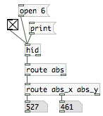
Now, the last step is the best, we get to make some noise. This example uses an [osc~] but you can use any synthesizer that you want, or even movie players, 3D shapes, or whatever else you can control using numbers. After all, once you have a number in Pd, it is just a number no different than any other, and you can use that number to control anything else. So we can use the X value directly to control the frequency, so hook that up to the left inlet of the [osc~]. Then create a [*~] to control the amplitude. For amplitude we want a number between 0 and 1. This gamepad has a maximum value of 1023, you can find that out by moving the gamepad around and watching the numbers. So we will divide the Y value using [/ 1023]. Then connect the [/ 1023] to the right inlet of the [*~]. Last, create a [dac~] to output the sound to the speakers, and connect the outlet of the [*~] to the [dac~]. Turn on the DSP, and you have a simple instrument!
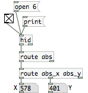
 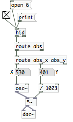
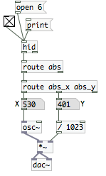
What do "abs", "rel", and "key" mean?
Any data message from [hid] that has "key" as its first element means that it is a button or key of some kind. This includes keyboard keys, mouse buttons, joystick buttons, etc. The X,Y,Z and other axes are often labeled as "abs", which is short for "absolute". That means that a given left-right position of the gamepad will always have the same value. So it is an "absolute" measurement of the position. There is another kind of data that is in contrast to the absolute "abs" data, it is "relative", which [hid] calls "rel". A mouse outputs relative data, for example. Each time it outputs data about the left-right X position, it reports how much it moved since the last time it sent the X position. So it tells you the "relative" position of the mouse, it is always "relative" to the last time the mouse sent data.
Make Your Own HID
It´s possible also to build a custom USB HID device with a microcontroller and few more parts to plug analog sensors to it and then send the data to pd. This is a USB HID board called "minia" based on the microcontroller atmega 8:
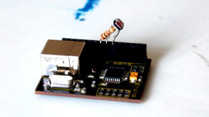
and this is the USB HID controller finished with infrared sensors, accelerometer, potentiometers, and pushbuttons.
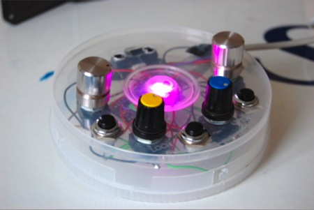
HID It´s also the protocol used to transmit the data of the sensors, buttons, etc, through the usb cable and also via bluetooth or infrared...
One of the advantages of this protocol is that is "plug&play" by definition and most of the USB HID devices doesn´t need any drivers to work.
Another good thing about HID protocol is that it´s optimized for usb, so is faster and easier to use respect to other protocols like "serial" that requires more complex hardware and it´s own drivers.
HID to Pd
To read HID data from a device in pd there are several possible objects. we can use the object [hid] in linux / osX and [hidin] in windows.
Before opening pd, we should plug the device, otherwise this probably will not show up..
To "inspect" for HID devices (internal and connected to the usb) we send the message "print" to the object [hid] and then, we can see in the console which HID devices are detected with pd
NOTE: In some computers, there are small electrical differences between the USB plugs so sometimes, if a USB HID device doesn´t show up, we can solve this by changing the plug and restarting pd.
To "inspect" for HID devices (internal and connected to the usb) we send the message "print" to the object [hid] ([hidin] in windows) and then, we can see in the console which HID devices are detected.
We can see here also that pd assigns a number to each device.
this number is used to select which HID device we are going to use to get data.
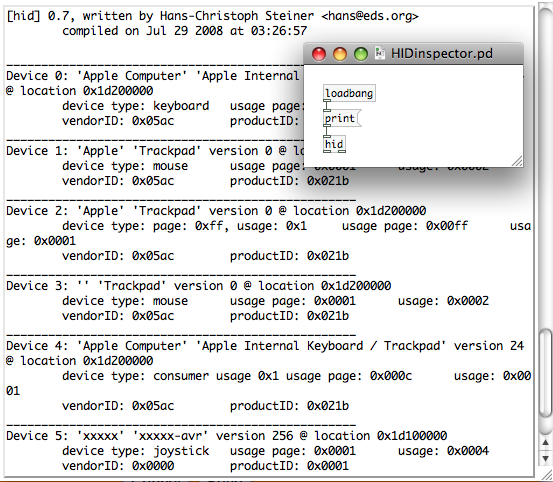
This device "5" (xxxxx-avr) is that USB HID device with sensors and potentiometers that we can see in the other picture.

Pduino:
Arduino is another microcontroller interface for creating alternative tools to map physical interaction. It is the result of an open source hardware project aimed at providing the art and design community with a tool for creating electronic interfaces. By allowing users to interact in various new ways, these new interfaces can be seen as enabling more natural bonds with computers. Arduino consists of an 8-bit microcontroller and a port through which to communicate with a computer. This allows a connection to existing software packages such as, Pure Data.
Pduino library provides communication between Arduino and Pd objects, which enables us to control analog and digital sensors with Pd interfaces. This involves receiving input data throughout the sensors as well as sending data to control and change states of the sensors. In order make this communication happen there are some steps before you can connect the Arduino board to your computer.
Installing Arduino on Fedora 12 (x86_32)
Software name : Arduino
Homepage : http://www.arduino.cc/
Software version used for this installation : Arduino 018 Alpha
Operating System use for this installation : Fedora Release 12 (Constantine)
Recommended Hardware : 300 Mhz processor (CPU) minimum
For an updated installation guide of the Arduino Software on Linux go to: http://www.arduino.cc/playground/Learning/Linux.
Requirements:
- Sun Java SE runtime enviroment (JRE RPM.bin Package)
Check if Java is installed by typing
java -version
in a Terminal which can be found in "Application/System Tools"-Menu.
If Java is not installed or a version older then 1.6.0 is found, download and install Java from http://java.sun.com/javase/downloads/index.jsp or use yum:
su-
yum install java-1.6.0-openjdk
Next the packages uisp, avr-libc, avr-gcc-c++, rxtx and avrdude are required, type:
su -
yum install uisp avr-libc avr-gcc-c++ rxtx avrdude
Now download the Arduino-Sotfware from
http://arduino.cc/en/Main/Software. Unpack the downloaded archive. If you use the Arichive Manager, double-click the file and and click "Extract".

In Terminal:
tar -xvzf arduino-00??.tgz
In order to enable the communication with the Arduino with your user account, add your user to the groups uucp, lock and dialout to enable the necessary permissions.
su -
usermod -G uucp,lock,dialout username
Alternatively you can use the graphical user interface "Users and Groups" which can be found under "System/Administration". First of all you have to disable "Hide system users and groups" in "Edit/Preferences" for showing the needed groups.
Select the groups, one after the other, click on "Properties/Group Users" and activate your username. After logging off and logging in, the changes take effect.
Start the Arduino Software with
cd <path to arduino>
./arduino
Somebody Should Set The Title For This Chapter!
Software name : Arduino
Homepage : http://www.arduino.cc/
Software version used for this installation : Arduino 018 Alpha
Operating System use for this installation : Mac OSX 10.4.11 and Mac OSX 10.4.8
Recommended Hardware : PowerBook G4
Preparations
• check out http://arduino.cc/en/Guide/HomePage
• download and install Arduino.app and driver
Installing Arduino on Mac OS X
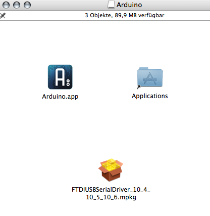
• move Arduino.app into your applications-folder
• double-click "FTDIUS.....mpkg"
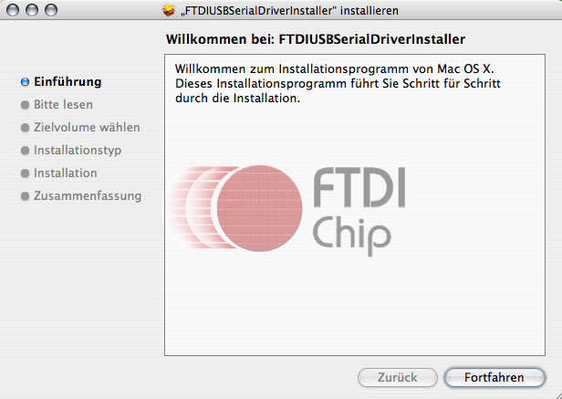
• and follow the steps to install the usb-driver... .
Installing Externals
There are many people out there writing their own libraries for Pd, often called externals. There are many of these libraries included in the Pd-extended package, but not everything. Sometimes they are just too new, or they are still in development, so they have not yet been included in the package. When you might find a really useful library that you want to use with Pd-extended, you need to install it in the right place so that you can use it in your patches.
The Arduino (http://arduino.cc) is a tiny computer that is meant for getting data from sensors and switches, controlling lights and motors, and many other things that you can do with electricity. Like Pd, it is free software, and it is a programming environment designed to be intuitive and straightforward. There is a library for Pd called Pduino that makes it easy to use the Arduino with Pd, via the Arduino library called Firmata.
Downloading and Installing
First, we need to get Pduino, you can find it at http://at.or.at/hans/pd/objects.html#pduino. Download the Pduino-0.4beta2.zip (the version number might have changed since this book, so just look for the Pduino zip file). Once you have the zip file, unzip it, usually you can just right click and "extract" or "uncompress" the file. On some computers like Mac OS X, you can double-click it to uncompress it.
Once you have uncompressed the Pduino zip file, then look in the Pduino-0.4beta2 folder. Inside is a bunch of files, the first ones to copy are arduino.pd and arduino-help.pd. We are going to copy this into a folder where Pd-extended automatically looks for user-installed files. This file has a different location depending on which operating system you are using.
- GNU/Linux
- In your home folder (also called
~), create a folder called pd-externals. Copy arduino.pd and arduino-help.pd into ~/pd-externals/
- Mac OS X
- In your home folder (also called
~), open up the Library folder and create a folder called Pd. Copy arduino.pd and arduino-help.pd into ~/Library/Pd.
- Windows
- Open up the folder in your main drive (usually
C:) where the programs are installed, in English, it is usually called Program Files. Inside this folder is another folder called Common Files, open Common Files then create a folder called Pd. Copy arduino.pd and arduino-help.pd into \Program Files\Common Files\Pd.
- In other languages, this folder is named in that language. For example, in German, it is called
\Programme\Gemeinsame Dateien\Pd, in Spanish, \Archivos de programa\Archivos comunes\Pd, in Portuguese, \Arquivos de programas\Arquivos comuns\Pd)
Once you have copied arduino.pd and arduino-help.pd into the right place, you can now create an [arduino] object in any patch. Create a new patch and try creating an [arduino] object. If that works, then try opening the help patch by right-clicking and selecting "Help". If there was a problem with either one of these steps, then the arduino.pd and arduino-help.pd files are not in the right place. So carefully read the file locations again. If it is still not working, then try getting help from the Pd mailing lists, forums, or IRC chatroom.
Installing Any External
This same process that we went through above is the same process for installing just about any object or external library. There are only minor differences, for example, some libraries are organized all into a folder, so instead of copying the objects and the help files, you can just drop the whole folder into the externals folder described above.
Somebody Should Set The Title For This Chapter!
Preparing Pduino
• download the Pduino...zip-file from here http://at.or.at/hans/pd/objects.html#pduino inside you will find pd-files (You will need them later!) and the maching Firmata-firmware-library for your arduino.app.
• update Firmata-library in your Arduino installation: you have to replace the old Firmata-folder with the new one. You should do this, to make sure, that the [arduino]-object and version of Firmata-library is matching. It is located here on Mac OS X:
... /Applications/Arduino.app/Contents/Recources/Java/libraries
1. delete the existing 'Firmata' library in the above location
2. move the included "Firmata" folder into your Arduino installation. (Do not
move the whole "Firmata-xx.xx" folder, just the included "Firmata" folder.)
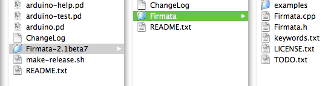
For Linux replace the files in <path to arduino>/examples
• connect Arduino board and lauch Arduino application
• now setup your board:
select your Arduino board type (...)
and your serial port

Here you can see if the usb-driver is correctly installed. If the usb-port /tty.usbserial... does not appear in the list you have to install the driver again.
After setting up the board and serial port, in the tool bar click the " Verify button "
• in order to upload firmware, first press the reset switch button on your Arduino board, which is located closer to the main Atmel AVR ATmega chip on your board. The location of the reset switch on the board might vary based the type of the Arduino board.

• now open menu >File >Examples >Firmata >SimpleAnalogFirmata and the Fimata will be opened in your Arduino application.
In this chapter we will introduce analog sensor examples; therefore we will upload SimpleAnalogFirmata to the board. For other types of sensors, such as any digital sensor or servo motor sensor, you need to choose the related Firmata based on your sensor type.
• press the upload-button in Arduino.app
if it is finished you can see this at the bottom of the Arduino-window:

• now you can close Arduino application
Installing Pduino-objects
• move the 3 pd-files, so called "pduino-objects", to Your pd-patches-folder

or create a new folder:

Lauch Pure Data
In Pure Data [arduino] object will set the connection with the firmata that you just uploaded to your Arduino board. When you create an [arduino] object in your patch, all the abstractions that are required for Pduino library will be loaded as well. The inlet of this object lets us to send messages to start serial port communication between the computer and Pd. Since there are more than one serial port in a computer, first we have to figure out the number of the serial port that the Arduino board is connected. Simply by sending a [devices( message to the [arduino] object, you can get the list of devices connected to your computer on the main Pd window.
Once you are sure that you have connected your Arduino board to the computer, click the [devices( message box and you get similar type of information in the main Pd window as below.
[comport]: available serial ports :
4 /dev/ttyUSB0
In this case, Arduino board is connected on the port /dev/ttyUSB0 and its port number is 4. Therefore, in order to start Arduino - Pd communication, related to the above example, you send [open 4( message to the [arduino] object.

Main Pd window will display similar type of below information if the serial connection is opened successfully.
get_baud_ratebits: 115200.000000
set_baudrate baudbits: 4098
[comport] opened serial line device 4 (/dev/ttyUSB0)
Once you open the serial port connection, you can immediately receive data from your Arduino board. First you need to enable sensor data to pass through [arduino] object and later separate the sensor data types. In this below example, we focus on analog input sensors; therefore [route] object only enables analog sensor type. The later [route] object separates the analog input data so that you can receive each sensor data in a separate number box.
Even though there is not any sensor connected to the Arduino analog pins yet, when you enable the data to flow through [arduino] object, analog input pins number boxes in above patch receive flow of numbers. These are simply noise data that the empty pins on Arduino board generates.
Pduino Light Sensor
Below images show a basic photoresistor sensor connection with Arduino board. In this circuit 5V power, ground and Analog in 0 pins are used. After you build up the photoresistor circuit below, simply by blocking the amount of the light that photoresistor receives, you can change the value of the electric current in this circuit and you can receive the value changes in the above Pd patch.
Because in this circuit there is only one analog sensor and it is connected to the Arduino Analog in 0 pin, if you connect a0 number box output to a [send] object, you can receive the sensor data in different Pd patches as well. Just a reminder, you should use the same target name in both [send] and [receive] objects.
Below Pd patch example receives the photoresistor sensor data to control the amplitude value and the central frequency of the bandpass filter.

These are the basic examples for Pduino library; however arduino-test.pd includes other type of sensor connections through [arduino] object.
[netsend] and [netreceive]
The [netsend] and [netreceive] objects are for transmitting and receiving messages over a network. An example use would be an installation where two computers are needed to communicate with each other to lighten the processing load. Because these two objects are intrinsically linked, we will talk about them together.
[netsend]
Creating an instance of [netsend] will open a network socket to another computer. Both TCP and UDP protocols are supported. [netsend] defaults to a TCP connection. You can change to UDP adding the argument 1 when creating the object. You will need to supply an IP address or hostname, of a host machine, as well as a port number. You can provide this information with the message "connect IP_address port_number".

The outlet on the [netsend] object indicates if it is connected to a remote computer or not. It will report 1 if it is connected, 0 if it is disconnected.
Once you have established a connection, you may send messages. You must prepend all messages with the word "send". For establishing a stable protocol, it is advisable to name each message being sent.

You can terminate a connection with the message "disconnect".
The messages are sent using the FUDI protocol. If we were to examine one of the messages sent above, it would appear like this:
MyText anything;
[netreceive]
Creating an instance of [netreceive] will open a network listener socket on the local computer. Just like [netsend], UDP and TCP are supported. [netreceive] takes one argument, the port it is listening on. An optional second argument will change the object from TCP to UDP. [netsend] has two outlets when it is listening for TCP, and one when listening for UDP. The left outlet prints out any data it has received. The right outlet reports the number of active connections.
An example with multiple arguments is below.

Connecting with other applications
[netsend]/[netreceive] can communicate with other networked applications that communiate via TCP and UDP. Max/MSP has a pair of objects with the same name created by Olaf Matthes. A PHP script connecting to a UDP netreceive object on port 13000 would look like this :
$socket = socket_create(AF_INET, SOCK_DGRAM, SOL_UDP);
$result = socket_connect($socket, $address, 13001);
socket_send($socket, $data, strlen($data), MSG_DONTROUTE);
Open Sound Control (OSC)
zip file of patches
The OSC objects are for sharing musical data over a network. OSC is a standard that lets you format and structure messages. OSC enables communication at a higher level than the PureData [netsend] objects and is both more flexible and more precise than MIDI. OSC is network enabled, using common network cables and hardware.
Using OSC you can exchange data with a number of devices, such as Lemur, iPhone (through OSCulator), Monome, or applications such as Ardour, Modul8, Reaktor and many more. Most modern programming languages are OSC enabled, notably Processing, Java, Python, C++, Max/MSP and SuperCollider.
Setting up an OSC connection
There are several OSC implementations in PureData. At the time of writing, the mrpeach implementation is best supported. PureData is in the process of migrating to mrpeach OSC objects, but in the current release you still have to import them explicitly.
Sending a simple message

osc_udpsend.pd
Sending a connect message to an [udpsend] object opens an UDP connection to another computer. As with [netsend], you have to provide an IP address or hostname, and a port number.
The UDP connection you just opened can only really send bytes. In order to send an OSC message over the opened connection, you have to pack it first, using the [packOSC] object.
Receiving a simple message

osc_udpreceive.pd
The [udpreceive] object tells the patch to listen to a given port number.
The OSC message has to be unpacked using the [unpackOSC] object.
IP addresses, hostnames
If both sending and receiving PureData patches are on the same computer, you can use the special loopback interface: the IP address is 127.0.0.1 and the hostname is "localhost".
If both computers are on a local network, you can use their network names, or else, to find out a computers IP address, open a terminal and type "ifconfig" (Mac/Linux) or "ipconfig /all" (Windows).
If you want to open a remote connection to a computer over the internet, consider using TCP instead of UDP (see below) and proceed as with a local connection.
Ports
Every computer has a large number of ports. Each service (such as a webserver, a database etc.) may listen or send data through it's assigned port. Which port is used for what is a matter of configuration, but PureData uses port 9001 by default. You can choose another port if you want to, just make sure the port you choose is not already in use. If you are communicating with another application, you will have to find out which port it is using.
UDP vs. TCP
In all these examples, you can replace the [udpsend] and [udpreceive] objects by their corresponding TCP counterparts [tcpsend] and [tcpreceive]. The TCP protocol is much more reliable than UDP, so if you are connecting to a computer over the internet, or data packets are lost or shuffled underway, use TCP.
The OSC address pattern
The first part of an OSC message is an URL-style address (in the previous example, “/test”). The address lets you route the data on the receiving end.
This example sends 2 different OSC messages. Messages are told apart by their address components (/test/voice and /test/mute).

osc_pathsend.pd
On the receiving end, the messages are routed using the [routeOSC] object and used to control an oscillator.
osc_pathreceive.pd
It is important to understand that OSC does not come with predefined messages, like MIDI does. It is up to you to define the messages you want to send and receive.
OSC arguments
An OSC message can have any number of arguments. This example creates a message with 2 arguments for note (MIDI note number) and amplitude.

osc_argssend.pd
On the receiving patch, the arguments are unpacked using the [unpack] object, and used to control an oscillator's pitch and amplitude.

osc_argsreceive.pd
Types
The previous examples all send typed-guessed messages. It is also possible (and good practice) to set the types of the arguments.
Common types are:
i: integer
f: float
s: string
T: TRUE
F: FALSE
This example uses the [sendtyped] object to send a boolean (true or false), an integer (a MIDI note number) and a float (amplitude).

osc_typesend.pd
Depending on the value of the first argument (the boolean argument), the receiving patch puts out a sine or a sawtooth wave.

osc_typereceive.pd
Note that PureData and OSC use different types. PureData only knows floats, strings and symbols.
Bundles
Sometimes you might want to send several messages at the same time. This example sends one bundle containing 3 notes.
Bundles are enclosed in square brackets. Inside the brackets, you can pack any number of messages.
osc_bundlesend.pd
Receiving a bundle is no different than receiving a single message.

osc_bundlereceive.pd
Designing your namespace
Unlike MIDI, OSC requires you to define your own messages. This is one of OSC's main advantages, and if you are doing anything more complex than the examples above, you should start by getting your set of messages (your namespace) right. There is no single strategy to do this, but here are some ideas to get you started.
Connecting to hardware or external applications
The easiest case, since these will come with their own predefined set of commands. You will find them specified in the documentation. Not much you can do here but stick to the specs.
Connecting to another PureData patch or to your own application written in another language
Avoiding name conflicts: Keep in mind that you, or the person using your patch, are on a network. This network is shared by a number of computers running a number of applications, some of which might be using OSC too. So you should be careful to avoid name conflicts. A conflict happens when two applications use the same address pattern but mean different things. To avoid this, the first part of your address pattern should be unique. A foolproof, albeit pedantic, method is to use your domain as a prefix for all your messages e.g. /net/mydomain/...
Type conversion caveats: PureData and OSC use different data types, so type conversion takes place every time you send or receive anything else than a float or a string. Due to the way data is handled internally, PureData can only work accurately with 24 bit numbers. Above this, integers gradually loose precision. Since OSC can carry 32 bit integers, you will get strange results above 16777216.
Using a predefined namespace
If this is your life's work (or your idée fixe), then using a predefined, domain-specific namespace might be a good move. Examples of these include: SYNoscopy for MIDI style controls (specification and examples) and GDIF, for music related movements and gestures. You can also look at one of the many open source applications listed at opensoundcontrol.org for inspiration.
Midi
This chapter will show you how to use midi to receive notes from midi keyboards or control messages from standard midi devices and also how to send midi to other programs or to midi hardware.
Setup
Before start working with midi, you should select your device in the dialog: Preferences/midi settings

Then select which device you want to use for input/output midi, by default no device is selected. Before starting pd, you should plug your midi hardware, otherwise it will not show up in this dialog. In this case, we have selected our hardware "USB MIDI 1x1" (a midi interface) and the rest of "devices" called IAC are internal midi buses in osX.
Note to OSX Users : In some cases with OSX you will need to check and activate the device in this "Audio midi setup" app. This can be found inside the utilities folder as shown below.

Channels and Ports
Once we have chosen the midi device, we can check if it´s working. To do this you need to know a little about the concept of midi channels.
Midi channels are used to identify devices so you can receive and send notes with specific hardware (or software!). Usually midi devices use one 'channel' for sending and recieving this information. There are usually 16 midi channels in total.
Multiple Devices
Pd can use also multiple midi devices, so in the midi settings window (seen before), you can add more devices by clicking on the button "use multiple devices" and adding it in any free "port" (each one with the respective 16 channels...)
You can also in pd "filter" the midi messages by specifying which channel/port we want to "hear" with an "argument" in the midi object.
objects used to receive and send notes are [notein] and [noteout] respectively.
Here is an "extract" of the help for [notein], the object we will use when we want to connect a midi keyboard (or any other midi device that generates notes!) to pd in order to play sounds or doing anything.

3-Midi hardware:
Since midi was developed in the 1980´s you can find many devices compatibles with it that you can use with pd. Typically you can find synthesizers, midi interfaces, midi controllers, midi hubs and of course, the symbolic midi cable. the cable it´s a DIN 5 pin cable with two male conectors. the midi conector in the devices it´s always female, it doesn´t mater if it´s input or output so you have to take care when connecting the devices because it´s possible and easy to make a bad connection and then, your system will not work..
1- To connect any midi keyboard to pd, you have to connect the "midi out" of the keyboard with the "midi in" of your midi interface.

A midi interface it´s a device that adds standard midi hardware ports to the computer, tipically via USB connection.

Note: There are modern keyboards that have an USB/ midi interface integrated to transmit midi directly to the computer via USB cable. in this cases, you will not need the classic midi cable.
This is the setup Midi keyboard-->midi interface-->computer. In the midi settings configuration, you have to select your midi interface as midi input. when you create an [notein] object in pd and you play notes in the keyboard, you will see which note/s you are playing, the velocity and the channel. Here, we can see that this keyboard is transmitting only in the channel 2. Usually you can change the transmitting channel of the keyboards by looking in his own configuration.
4- Making notes in pd, Sending / reciving notes.
A standard midi note it´s a message formed by a number that determines the pitch of the note, the velocity (volume) and the note off message that is the same note but with the velocity=0
to send notes with pd to external hardware/software, we use the object [noteout],
This example patch, generates random numbers, then "format" this number into a midi note with velocity and note off message and then send it "out" using the object noteout.
When you have selected the same internal midi bus in midi devices for in/out, ex: device in = IAC1 / device out= IAC2, then you can create in pd a [notein] object to send midi notes to other pd patches.

This is the setup Pd-->midi interface-->hardware synthesizer.
In this case, you need to select the midi interface as midi output device in the pd midi settings.
In this case, was needed also to add (and bang) the message "2" into the right inlet of the object [noteout] because this roland synthesizer only listens channel 2. We know this because before we connected the keyboard as input in Pd and then, we could see that this machine works only on channel 2.
5- Midi controllers
When we want to control our pd patches with a midi controller we use the object [ctlin], this has 3 outlets, the left one outputs the controller value (0-127), the middle one outputs the controller number (cc) and the rightmost one outputs the channel and Port (channel "17" in Pd means midi channel 1 in port 2). In this picture we can see the output of [ctlin] object when I move one encoder in the midi controller "BCF2000" connected to the port 2.
When you create the ctlin object without arguments, it´s listening to all cc´s and to all channels. This is useful as an analysis tool to know which cc and channel sends each fader/ knob of your controller.
In some midi controllers, some faders send the same cc number than others but in other midi channel.
Tipically, we add the arguments cc (control change) and channel/port to the ctlin object to make it "hear" only the cc and channel specified because usually midi controllers have many knobs, faders, etc.. so each fader/knob it´s going to make only it´s specific/s function/s that you choose..
When we analyze each fader/potentiometer/button/etc, we can create a specific ctlin message to listen only one thing, this is the way to do an abstraction to have all the cc´s of our midi controller assigned to an individual output.
This is how it looks like my object "pd uc16", ready to receive the cc´s from my cheap midi controller evolution uc-16. it also reports in a "bang" which output of the abstraction correesponds to each potentiometer.
This is how a "tuned" uc-16 looks..

6- Sending midi to other softwares, sending CC (control change).
we can use the same random notes patch we´ve seen before also to send notes to any other software running in the same computer.
Here, the trick is to have the same midi bus selected in Pd midi out device and in the midi in of the software you want to use..
Control change messages:
These are special messages used to change parameters in the midi devices such as "cutoff frequency", "resonance"... etc.. There are about 127 different cc´s possibles in each midi channel.
In this patch we send the values of the slider to the cc number 7 in the channel 1.

7- Another midi objects:
There are more midi objects in pd and almost all of them are documented in the pd help.
[pgmin] / [pgmout] This objects receive and send "program changes". Program changes were used to change "programs" or sounds in synthesizers, patterns in rythmboxes, etc..
[bendin] / [bendout] This objects receive and send "pitchbend" changes. Argument is midi channel.
All the objects we have seen till now are the "basic" midi objects included also in pd vanilla but there are more objects like [midiin][sysexin] that runs only in linux or [touchin] and[polytouchin] that are not docummented yet..
In pd extended there are more "advanced" midi objects inside libraries such as maxlib or cyclone. In the chapter "list of objects" you have a short explanation about this new objects.
Streaming Audio
We shall look at streaming mp3 to a streaming server using Pure Data. You should have a running version of Pd installed.
Additionally, you should have access to a streaming server.
If you have somebody that can lend you a server for this trial, then you will need to know to from them the following:
- what mountpoint do you use?
- the hostname or IP Address of the server
- the password for sending streams
- the port number of the server
- the type of server (Icecast2? Icecast1? Darwin? Shoutcast?)
1. Create the mp3cast object
Now create a new object and type mp3cast~ :
If all is installed well the object will look like the above. If there is a problem the object will be surrounded by dotted lines, this means that the object couldn't be created.
2. Connect an osc~ object
If all is ok, you can now add an audio object to the page so that we can send some audio to the signal inlet of the patch. We will use the osc~ object.
The osc~ object is created in the same way and it we will also give it a parameter. This parameter sets the frequency of the osc~ sound wave, and we will use 440 (Hz). Then attach the signal outlet of osc~ to the signal inlet of mp3cast~:

Now we have a mono input to mp3cast~ but we want a stereo connection, so we will connect the same signal outlet to right signal inlet of mp3cast~ :
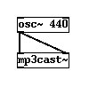
3. Settings
We now want to send our server details to the mp3cast object so first we need to create 4 empty messages boxes. Put them on your document like so:
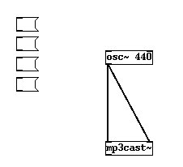
Enter the following into these newly created message boxes. One should contain the following:
passwd
another should have:
connect
the third should have:
mountpoint
and the last:
icecast2

OK, so now we are ready to enter the details of our streaming server.
In the passwd message box type a space after 'passwd' and enter your password. In this example the I will use the password 'hackme', and I would type this:
passwd hackme
So I get this:
Then we enter the mountpoint in a similar fashion into the mountpoint message box . I will use the mountpoint live.mp3.

note : you do not need to enter the suffix ".mp3" in the mountpoint.
We also wish to enter the hostname and port of the streaming server. I will use the non-existant ice.streamingsuitcase.com as the hostname and port 8000:
note : do not put in the leading http:// in the hostname.
Lastly, we have the icecast2 message box. This defines what kind of server you are logging into. If you are using an Icecast1 server you would instead have icecast in this box. Similar for shoutcast. If you are streaming to a Darwin server use icecast.
Connect all the control outlets from these message boxes to the left control inlet of the mp3cast~ object box. You may have to move the boxes around a bit to make space :

4. Start the Stream
Now, to start to stream you must goto run mode and press the boxes in the following order:
- press passwd to set the password
- press icecast2 (or whatever server type you are using) to set the server type
- press mountpoint to set the mountpoint
Now...this process has loaded mp3cast~ with the server settings. Click the connect message box and you should be streaming!
To test connect with your favourite player using the the following syntax :
http://hostname:port/mountpoint
In my case this would be:
http://ice.streamingsuitcase.com:8000/live.mp3
5. Streaming from The Mic
Lets replace the osc~ with adc~ like so:

The adc~ object takes the input from your computers sound input. adc is short for Analog Digital Converter. If you now stream the sound will be coming from your soundcard input!
6. Disconnect
Incidentally, if you need to disconnect the stream make a new message box , type:
disconnect
then connect this to the left control inlet of mp3cast~ , return to run mode and press it.

oggcast~
Oggcast is known as a Pure Data External, it is not part of the Pure Data 'native' packages. Oggcast was written by Olaf Matthes.
Oggcast is a streaming object. It enables you to send audio encoded in ogg vorbis to an Icecast2 or JROAR streaming server. This means you can send live audio through the internet or a local network from Pure Data, and one or more computers can pick it up from the streaming server, like so:

This means you also need to have access to a streaming server. If you have not set one up before this might be tricky. You could also try borrowing some server time from someone. You will need to get the following details from the streaming server administrator to be able to stream to the server:
- Server address (hostname) of the server
- Port to stream on (usually 8000)
- Password
- Mount-name (the name of the stream you will create on the server)
Parameters
All Parameters are listed here:

The passwd parameter is passed to the oggcast~ object through a message box.
Streaming from your Sound Card
Streaming from your sound card is really easy with oggcast~, you just need to try this patch:

In the above example you would replace :
- localhost with the IP Number or hostname of your streaming server
- mystream.ogg with the mount point (name) of your stream
- 8000 with the servers port number (it is usually 8000)
- hackme with your servers password
In the above patch you will need to first press the password message box while Pd is in run mode, and then press the connect message box.
Streaming from Pure Data audio
Alternatively you can create a patch for synthesising sound and then stream this. Here is a simple example using a osc~ object.

Again, in the above example you would replace :
- localhost with the IP Number or hostname of your streaming server
- mystream.ogg with the mount point (name) of your stream
- 8000 with the servers port number (it is usually 8000)
- hackme with your servers password
Tips
- changing the parameters of oggcast~ while streaming can cause the stream to drop out
Object List
As Pd-Extended is constantly growing at the hand of several developers all around the world, it isn't possible to have a 100% complete list of objects. Neverthough, the next chapters include many of the most important libraries.
The chapter division takes the original categories designed by Miller Puckette. Only specific libraries which have a closed identity - for example like GEM - have a page of their own. The categories for now are:
Dataflow
- Glue - General dataflow control
- Math - Mathematical operations
- Time - Time-related operations
- Midi - Midi Input/Output
- Tables - Table and array management
- Misc - Objects that don't fit any previous category
Audio
- Audio Glue - General audio control
- Audio Math - Mathematical operations
- Audio Oscillators and Tables- Audio generators and table readers
- Audio Filters - Filters and convolvers
- Audio Delay- Time-related operations
Patch Management
- Subwindows - Patch structuring
- Data Templates and Accessing Data - Objects related to data structures
External libraries
- GEM - OpenGL graphics and video library
- PDP - Video library to provide a way to use data packets as messages
- Physical Modelling - Physical modelling library
Obsolete - Objects that for some reason became obsolete. Most of them are still available, but you should avoid using them.
Vanilla and Extended Objects
Each distribution of Pd comes with the core objects, which belong to Miller Puckette's original version - Pd-Vanilla. Besides that, it is possible for each user to use libraries of externals compiled by other users. Most people use Pd-Extended, which bundles many externals automatically - others prefer to download and install these libraries themselves.
Each page of this list is divided into two sections, Vanilla Objects and Extended Objects. In many pages you'll see many more extended objects than vanilla ones.
Organisation
Each chapter has a table with the following columns:
- Name - Name of the object
- Library/Path - name of the library to where it belongs (these libraries are stored in your pd/extra folder)
- Function - Short description given by the author
Due to the decentralised development of Pure Data externals, it sometimes happens that some name clashes between objects happen - sometimes even for objects with very different functions! In case the object you saw from the list isn't the object you were thinking about, the easiest way to make sure you have the right object is to write its complete namespace: for example, if you want to use the [makesymbol] object from the zexy library, you can either write [makesymbol] or [zexy/makesymbol].
Name
|
Library/Path
|
Function
|
|
GLUE
|
|
| Vanilla Objects |
|
| bang |
|
send 'bang' message |
|
| change |
|
eliminate redundancy in a number stream |
|
| float |
|
store a floating point number |
|
| int |
|
store an integer |
|
| makefilename |
|
format a string with a variable field |
|
| moses |
|
part a stream of numbers |
|
| pack |
|
combine several atoms into one message |
|
| print |
|
print messages to the terminal window |
|
| receive |
|
receive messages without patch cords |
|
| route |
|
route messages according to their first element |
|
| select |
|
compare numbers or symbols |
|
| send |
|
send messages without patch cords |
|
| spigot |
|
pass or block messages |
|
| swap |
|
swap two numbers, respecting right-to-left order |
|
| symbol |
|
store a symbol |
|
| trigger |
|
sequence messges in right-to-left order and convert data |
|
| unpack |
|
split a message into atoms |
|
| until |
|
looping mechanism |
|
| value |
|
nonlocal shared value (named variable) |
|
| Extended Objects |
|
| a2l any2list |
flatspace zexy |
convert "anythings" to "lists" |
|
| -dsp dsp01 |
jmmmp |
DSP switch |
|
| any |
|
store and recall any message (like f, or symbol) |
|
| active |
cyclone |
report if window is active / inactive |
|
| add2_comma |
flatspace iemlib |
add a comma after a message |
|
| add2_comma |
iemlib |
add a comma after a message |
|
| allow |
flatspace maxlib |
lets only "allowed" floats or symbols through |
|
| alternate |
flatspace markex |
alternate between two outlets |
|
| amplitude_n |
la-kitchen mapping |
return the amplitude covered by the last n values |
|
| any_argument float_argument symbol_argument |
|
initiate internals |
|
| any2string string2any |
flatspace iemlib |
converts ASCII strings to pd messages |
|
| Append |
cyclone |
append a list to the incoming list |
|
| ascii->int float->ascii |
hcs |
convert a stream of ASCII digits to a single value |
|
| atoi |
flatspace zexy |
convert ASCII to integer |
|
| bang-eater |
flatspace |
eat N bangs in every M bangs |
|
| bangbang |
cyclone |
send a number of bangs in order |
|
| bfilt |
cxc flatspace |
modulo + select 0 |
|
| bfilt2 |
cxc flatspace |
bang filter |
|
| bondo |
cyclone |
synx a group of messages |
|
| bpe |
flatspace iemlib |
break point envelope |
|
| Bucket |
cyclone |
pass numbers from outlet to outlet |
|
| buddy |
cyclone |
sync incoming data, output when all inlets received data |
|
| button |
flatspace ggee |
a bang with a label |
|
| change_n |
la-kitchen |
returns 0 if the last n datas are the same |
|
| choice |
vanilla/choice |
search for a best match to an incoming list |
|
| coll |
cyclone |
store and edit collections of messages |
|
| compare-any |
list-abs |
test if two anythings are the same |
|
| count_n |
la-kitchen |
counts from 0 to n-1 |
|
| counter |
cxc |
counter -> NV |
|
| counter gem-counter |
cyclone flatspace markex |
counts the number of bangs received |
|
| cup |
ekext flatspace |
counts up |
|
| cycle |
cyclone |
send data to individual outlets |
|
| debounce mapping |
la-kitchen |
blocks the value of incoming data for the further n samples after ech change |
|
| debounce_b |
la-kitchen |
blocks the input until a specified duration is over |
|
| decide |
cyclone |
output 1/0 randomly |
|
| Decode |
cyclone |
sent out 1/0 to a specific outlet |
|
| default |
iemlib |
replace initial argument, if it is zero |
|
| demultiplex demux |
flatspace zexy |
demultiplex the input to the specified output |
|
| deny |
flatspace maxlib |
blocks "denyed" floats or symbols |
|
| detox |
jasch_lib |
extract values, contents, attributes from xml-tag structures |
|
| disjoin join |
mapping |
split / joina range into two (0-1) |
|
| dist |
flatspace maxlib |
send data to a list of receive objects |
|
| dollarg |
flatspace iemlib |
receive parent initial arguments <list>, like a $n |
|
| downsample |
mapping |
output 1 over n data |
|
| drip |
flatspace zexy |
unfolds a package to a sequence |
|
| dsp dsp~ |
iemlib |
control audio, measure dsp load |
|
| edge |
flatspace maxlib |
detect rising or falling edge in floats |
|
| entry |
flatspace |
text entry box |
|
| env env+ env- |
mapping |
normal / positive / megative envelope follower |
|
| exp_inc |
flatspace iemlib |
linear and/or exponential increment counter, bang controlled |
|
| f+ |
jmmmp |
counter with variable increment |
|
| fifo |
flatspace maxlib |
first in first out buffer for floats |
|
| fifop |
flatspace zexy |
first in first out stack with priorities |
|
| float24 |
flatspace iemlib |
concatenate a list of float-fragment-strings to a 23 bit accurate mantissa |
|
| for++ |
flatspace iemlib |
incremental counter (triggered by internal metro) |
|
| forward |
cyclone |
send remote messages |
|
| fromsymbol tosymbol |
cyclone |
transform symbol to numbers or messages and vice versa |
|
| ftos |
ext13 flatspace |
float to symbol |
|
| funnel |
cyclone |
tag data based on the inlet it arrived in |
|
| gate |
cyclone iemlib |
send data out the specified output |
|
| gcanvas |
flatspace ggee |
click and drag to get pixel values |
|
| glue |
flatspace zexy |
glue together 2 packates (append, prepend, ...) |
|
| grab |
cyclone |
intercept the output of another object |
|
| hid_one2twohid_one2threehid_one2four |
hid |
one-to-x mapping object |
|
| hysteresis |
mapping |
add hysteresis to input data |
|
| iem_anything |
iemlib |
latch for anything |
|
| iem_append |
iemlib |
append a message to any messages |
|
| iem_i_route |
flatspace iemlib |
variation of route (abbr. iiroute) |
|
| iem_prepend |
iemlib |
prepend a message to any messages |
|
| iem_receive iem_r iem_send iem_s |
iemlib |
receive object with changeable receive label |
|
| iem_route |
flatspace iemlib |
improvement of route |
|
| iem_sel_any |
flatspace iemlib |
control a message-box with multiple content |
|
| ignore |
flatspace maxlib |
lets information through only when it was present at input longer than N ms |
|
| index |
flatspace zexy |
create a symbol->int map |
|
| init |
|
initialize a message via loadbang (abbr. ii) |
|
| iso |
flatspace maxlib |
queues up lists of pitches and attack points |
|
| iter |
cyclone |
split a list into a series of numbers |
|
| ixprint |
cxc flatspace |
print without identifier |
|
| k_receive |
|
|
|
| k_send |
|
|
|
| kalashnikov uzi |
ext13 flatspace |
send a specified number of bangs as fast as possible |
|
| knob |
flatspace |
|
|
| last_n |
la-kitchen mapping |
save the n last incoming datas into a list |
|
| last-x |
list-abs |
make a list of the last x floats |
|
| lbang |
jmmmp |
loadbang which can be triggered more often |
|
| length |
flatspace zexy |
get the length of a list |
|
| lifo |
flatspace maxlib |
last in first out buffer for floats |
|
| lifop |
flatspace zexy |
last-in-first-out stack with priorities |
|
| line3 |
flatspace |
line with 3rd order polynome |
|
| list-abs |
list-abs |
apply abs() on floats of a list |
|
| list-apply |
list-abs |
apply the object created by [arg1 arg2] on every list element |
|
| list-clip |
list-abs |
clip for lists |
|
| list-compare |
list-abs |
compare two lists element by element |
|
| list-delete |
list-abs |
delete element at a position |
|
| list-drip |
list-abs |
drips or serializes a list |
|
| list-drip2 |
list-abs |
drips two lists in sync (as long as 1st list lasts) |
|
| list-dripslow |
list-abs |
serialize a list on demand |
|
| list-enumerate |
list-abs |
serialize a list and put numbers in front of each element |
|
| list-extend |
list-abs |
build a list from incoming lists and output stored list |
|
| list-fifo |
list-abs |
first in, first out |
|
| list-filter |
list-abs |
returns a sequence of items for which the adjusted operation is true |
|
| list-find |
list-abs |
find positions of a value in a list |
|
| list-idx |
list-abs |
get element at position idx |
|
| list-insert |
list-abs |
insert LIST before ELEMENT at position POS in original list |
|
| list-l2s |
list-abs |
concatenate a list into a single symbol |
|
| list-lastx |
list-abs |
make a list of the last x floats |
|
| list-len |
list-abs |
calculate lenght of a list |
|
| list-lifo |
list-abs |
last in, first out |
|
| list-makefilename |
list-abs |
change symbols in a list, floats pass unchanged |
|
| list-map |
list-abs |
swiss army knife of list operations |
|
| list-map2 |
list-abs |
map an operation on element pairs from two lists |
|
| list-moses |
list-abs |
like moses for lists |
|
| list-onearg |
list-abs |
list with optional aegument |
|
| list-reduce |
list-abs |
list goes element per element through a user-defined operation |
|
| list-replace |
list-abs |
replace (overwrite) a list from position POS with a new list |
|
| list-rev |
list-abs |
reverse a list's order |
|
| list-rot |
list-abs |
rotate a list |
|
| list-seek |
list-abs |
walk through a list element by element |
|
| list-sieve |
list-abs |
look up ocorrence of incoming floats in a list |
|
| list-splat |
list-abs |
advanced list-split with negative indexes |
|
| list2int l2i |
flatspace zexy |
cast all floats of a list to integers |
|
| list2send |
flatspace iemlib |
convert some kind of lists to a sent message |
|
| list2symbol l2s symbol2list s2l |
flatspace zexy |
convert a list <-> symbol |
|
| lister l |
flatspace zexy |
stores a list |
|
| listfifo |
flatspace maxlib |
first in first out buffer for lists |
|
| listfunnel |
flatspace maxlib |
send values out as list with source index |
|
| listmoses |
ekext flatspace |
splits two lists according to the values contained within the 1st list |
|
| listto |
mapping |
separate a list into a stream of atoms |
|
| local_max local_min |
mapping |
give the value of every local maximum / minimum whenever there is a change in direction |
|
| lpt |
flatspace zexy |
write data to the parallel port |
|
| makesymbol |
flatspace zexy |
concatenate lists to formatted symbols |
|
| maskxor |
ekext |
exclusive-OR mask map |
|
| match |
cyclone flatspace |
look for a series of numbers and output as a list |
|
| mergefilename |
flatspace iemlib |
merge a list of symbols and floats to a symbol |
|
| modulo_counter |
flatspace iemlib |
increments counter-number from 0 to max-1 by a bang |
|
| multiplex mux |
flatspace zexy |
multiplex the selected inlet to the outlet |
|
| multiselect multisel |
flatspace markex |
select object which accepts a list in the right inlet |
|
| nchange |
flatspace maxlib |
a "new" [change] |
|
| next |
cyclone |
try to separate messages into logical parts |
|
| niagara |
flatspace zexy |
divide a package into 2 subpackages |
|
| nop |
|
no operation |
|
| nroute |
flatspace maxlib |
rout if Nth element is matched |
|
| once |
iemlib |
only the first message passes through |
|
| onebang |
cyclone |
traffic control for bang messages |
|
| oneshot |
flatspace markex |
blocks after initial bang |
|
| OSCprepend |
list-abs |
prepends first argument to an OSC message list |
|
| packel |
flatspace zexy |
get the nth element of a package |
|
| parentdollarzero parent$0 |
iemlib |
receives the parent $0 symbol |
|
| pique |
flatspace |
find peaks in an FFT spectrum |
|
| polymap |
ekext |
two-dimensional polyphony-restricted map |
|
| polystat |
ekext |
outputs statitics about voice usage |
|
| pre_inlet |
flatspace iemlib |
before an incoming message be released to an outlet, a message of 2 items will be sent |
|
| prepend |
cyclone |
prepend a message with another message |
|
| prepend |
flatspace iemlib |
list prefixer |
|
| prepend |
cxc |
list prefixer -> NV |
|
| prepend_ascii |
iemlib |
prepends a message + selector symbol |
|
| prepend_output |
|
an identifier |
|
| prepent |
list-abs |
shortcut for [list prepend]-[list trim] |
|
| pwm |
hcs |
pulse width modulation at message rate |
|
| rec-name |
jmmmp |
automatic naming for a record / playback machine |
|
| receive13 r13 send13 s13 |
ext13 flatspace |
like r and s, with set messages |
|
| receive2list |
iemlib |
convert received message to a list message and then the incoming message |
|
| recent |
ggee |
output only most „recent“ messages |
|
| relay |
flatspace zexy |
relay messages according to their first element |
|
| remote |
flatspace motex |
send data to any receive object |
|
| repack |
flatspace zexy |
(re)pack atoms to packages of a given size |
|
| repeat |
flatspace zexy |
repeat a message several times |
|
| scrolllist |
|
displays and scrolls a text in a patch window |
|
| segregate |
|
segregate the input to various outlets, depending on the type |
|
| sendlocal sl receivelocal rl |
ggee |
send messages locally per canvas |
|
| serialize |
cxc flatspace ggee |
turn a stream of floats into a list |
|
| sguigot |
jmmmp |
spigot with GUI |
|
| sieve |
ekext |
takes integers and maps them to floats |
|
| simile |
ekext flatspace |
compare two numbers according to an error window |
|
| slider sliderh |
ggee |
slider from ggee |
|
| sort |
flatspace zexy |
shell-sort a list of floats |
|
| soundfile_info |
flatspace iemlib |
show the header data of a wav file |
|
| speedlim maxlib_speedlim |
cyclone iemlib |
speed limit for incoming messages |
|
| spell |
cyclone |
convert input to ascii values |
|
| split maxlib_split |
cyclone iemlib |
look for a range of numbers |
|
| split_my_msgs |
hcs |
split a strem of messages |
|
| split_path |
flatspace hcs |
like splitfilename |
|
| split3 |
iemlib |
part a numeric stream into 3 ways |
|
| splitfilename |
flatspace iemlib |
split into path and filename |
|
| spray |
cyclone |
distribute an integer to a numbered outlet |
|
| sprinkler |
flatspace |
dynamic control message dissemination |
|
| sprintf |
cyclone |
format a message of strings and numbers |
|
| sroute |
list-abs |
settable route |
|
| state |
flatspace ggee |
saves settings in a patch to a file |
|
| strcat |
markex |
prepends its text to any symbol that is sent to it |
|
| strcmp |
flatspace zexy |
compare 2 lists as if they were strings |
|
| stripfilename |
flatspace iemlib |
strip the first or last characters of a symbol |
|
| strippath |
ext13 flatspace |
strip a path from a filename |
|
| subst |
flatspace motex |
self-similar substitution/diminution of rows |
|
| substitute |
cyclone |
substitue a symbol for another symbol in a message |
|
| switch |
cyclone |
output a message from a specific inlet |
|
| sync |
flatspace motex |
extended trigger object based on sync from jMax |
|
| t3_bpe |
flatspace iemlib |
time-tagged trigger break point envelope |
|
| take-two |
list-abs |
print all combinations of length 2 without repetition |
|
| temperature |
flatspace maxlib |
output number of input changes in N ms |
|
| thresh |
cyclone |
combine numbers into a list that are received close together |
|
| ticker |
flatspace ggee |
toggle from ggee |
|
| tilt |
flatspace maxlib |
measure "tilt" of input |
|
| toddle |
ggee |
bang that routes messages through |
|
| TogEdge |
cyclone |
report zero / nonzero transitions |
|
| toggle_mess |
flatspace iemlib |
control a message-box with multiple content (abbr. tm) |
|
| transf_fader |
flatspace iemlib |
transforms a slider range |
|
| universal |
cyclone |
send a message to all instances of the same class in this patch (and subatches if desired) |
|
| unroute |
flatspace maxlib |
merges all inputs into one output and prepend an identifier |
|
| unsymbol |
flatspace iemlib |
convert a symbol to a anything selector |
|
| unwonk |
|
unpack which sends unused symbols to the last outlet |
|
| Uzi |
cyclone |
send a specified number of bangs as fast as possible |
|
| xerox |
|
|
|
| zl |
cyclone |
multi purpose list processing object |
|
Name
|
Library/Path
|
Function
|
Math
|
| Vanilla Objects |
| & | << >> && || % |
|
logical operators |
| + - * / pow |
|
arithmetic |
> >= = <= < |
|
relational operators |
| clip |
|
force a number into a range |
| max min |
|
greater or lesser of 2 numbers |
| mod div sin cos tan atan atan2 exp log abs sqrt pow |
|
higher math |
| mtof ftom dbtorms rmstodb dbtopow powtodb |
|
convert acoustical units |
| random |
|
pseudorandom integer generator |
| wrap |
|
wrap a number to range [0,1] |
| Extended Objects |
| runden |
|
set numbers behind the comma |
| . |
|
scalar multiplication of vectors (=lists of floats) |
| 1/x inv |
flatspace ggee |
takes the inverse of the input |
| about |
flatspace mjlib |
delivers a number that is "about" the same as the input number |
| accum |
cyclone |
store, add to, and multiply a number |
| acos asin atan |
cyclone |
arc functions |
| anal |
cyclone |
generates a histogram of number pairs received |
| attract1 base base3 gingerbreadman henon hopalong ikeda latoocarfian latoomutalpha latoomutbeta latoomutgamma lorenz martin popcorn quadruptwo rossler standardmap |
flatspace |
attractors |
| autocal |
la-kitchen |
autocalibrating scaler (for sensors) |
| autoscale |
hcs mapping |
scales a stream of numbers with dynamic input range |
| average gem-average |
flatspace markex |
average together a series of numbers |
| beta bilex cauchy expo gauss linear poisson triang weibull |
flatspace maxlib |
random numbers distribution |
| breakpoint breakpoint_smooth |
mapping |
curves the input range with a double-linear interpolator with 2 control parameters |
| bytemask debytemask |
mapping |
generate / decode a bitmask byte from 8 inlets |
| capture |
cyclone |
store and edit numbers |
| cart2pol |
|
convert cartesian coordinates to polar |
| cart2sph |
|
convert cartesian coordinates to spheric |
| cartopol poltocar |
cyclone |
cartesian to polar conversion |
| catch_extremum catch_extremum2 |
la-kitchen |
return the last locals minimum and maximum values |
| center_point |
mapping |
convert 0-1 data into a center point with two 0-1 ranges |
| circular circular_seat circular_sigmoid |
mapping |
curves the input range with a double-circular seat with 1 control parameter |
| Clip |
cyclone |
limit numbers to a range |
| clip |
|
|
| correlation |
mapping |
correlation of 2 different streams |
| cosh sinh tanh |
cyclone flatspace |
hyperbolic functions |
| cubic_seat |
mapping |
curves the input range with cubic curves |
| curve |
mapping |
curves the input range |
| curve_exp curve_log |
mapping |
maps the input range to an exponential / logaritmic curve |
| curve_fade |
mapping |
3rd order polygone for natural fade |
| curve_graph |
mapping |
maps the input range to an arbitrary curve |
| db2v v2db |
flatspace iemlib |
db to rms conversion |
| dbtofad fadtodb |
iemlib |
convert midi-db to fader scale |
| deg2hid hid2deg |
hid |
conversion [hid]-range to degrees |
| deg2rad |
|
convert degree to radiant |
| degrees->mapping mapping->degrees |
mapping |
converts mapping – degrees |
| delta |
flatspace maxlib |
calculate 1st or 2nd order difference |
| diff_n |
mapping |
diferentiate the input |
| distance distance2d distance_n |
mapping |
distance from a point and a stream (normal, 2d, Nd) |
| divide |
flatspace maxlib |
like "/" but calculates result when second inlet is changed |
| divmod |
flatspace maxlib |
calculates division and modulo |
| drunk |
cyclone |
output random numbers in a moving range |
| elliptic elliptic_seat elliptic_sigmoid |
mapping |
curves the input range with 2 ellipses |
| exponential_curve exponential_seat exponential_sigmoid |
mapping |
curves the input range with a double-exponential seat |
| expr |
vanilla |
expression evaluation |
| f2note |
flatspace iemlib |
converts frequency to notes + cents |
| fadtorms rmstofad |
iemlib |
fader scale to rms |
| ffpoly |
creb flatspace |
finite field polynomial |
| fir iir |
mapping |
filters |
| fir_filter |
la-kitchen |
fir filter with coefficient list |
| fir_hip_n fir_mean_n |
la-kitchen |
fir high / low-pass filter with order n |
| funbuff |
cyclone |
store x,y pairs of numbers together |
| fwarp |
creb flatspace |
tangent warp frequency |
| gaussian |
mapping |
generate gaussian curve |
| hid_average hid_smooth |
hid |
smooths a stream of numbers through weighted averaging |
| hid_centered |
hid |
convert 0-1 to -1-1 |
| hid_cube hid_cuberoot hid_exp hid_log hid_square hid_squareroot |
hid |
maps the input range to the chosen curve |
| hid_graph |
hid |
draw an arbitrary curve, which is applied to the input range |
| hid_invert |
hid |
inverts the stream of numbers |
| hid_lowpass |
hid |
smooths a stream of numbers through audio conversion + lowpass filtering |
| hid_polar |
hid |
converts cartesian to polar coordinates |
| hid_spiral |
hid |
converts cartesian to spiral in polar coordinates |
| hid2rad rad2hid |
hid |
conversion [hid]-range to radians |
| Histo |
cyclone |
generates a histogram of the received numbers |
| history |
flatspace maxlib |
calculates the average of the items (floats) that came in within the last N miliseconds |
| iir_hip iir_lop |
la-kitchen |
iir high / low-pass filter |
| invert |
flatspace markex |
non-zero numbers to 0, 0 to 1 |
| limit |
flatspace maxlib |
limits input to lie between boundaries |
| list-accum |
list-abs |
add all floats in a list |
| list-add |
list-abs |
add two lists element by element |
| list-centroid |
list-abs |
calculates the centroid of a mass of a float-list |
| list-dotprod |
list-abs |
dot-product of two float-lists |
| list-emath |
list-abs |
do math on float-lists element by element |
| list-equalize |
list-abs |
scale a float-list so that all float elements sum up to 1 |
| list-geometric-mean |
list-abs |
calculate the geometric mean of a float-list |
| list-harmonic-mean |
list-abs |
calculate the harmonic mean of a float-list |
| list-inter |
list-abs |
elementwise linear interpolation between two float-lists |
| list-inter-many |
list-abs |
elementwise linear interpolation between several internally-stored float-lists |
| list-invint |
list-abs |
inverse intervals of a float-list |
| list-math |
list-abs |
simple mathematical operations on lists |
| list-mean |
list-abs |
calculates the arithmetical mean of a float-list |
| list-minmax |
list-abs |
find minimum and maximum in a float-list |
| list-mult |
list-abs |
multiply two float-lists |
| list-normalize |
list-abs |
normalizes a float-list |
| list-round |
list-abs |
round all numbers in a float-list to a nearest multiple |
| list-sub |
list-abs |
subtract two float-lists element by element |
| list-unitvec |
list-abs |
normalize a float-list geometrically |
| logistic_sigmoid |
mapping |
curves the input range with a double-exponential seat |
| mandelbrot |
ext13 flatspace |
z=z*z+c |
| mavg |
flatspace zexy |
moving average filter |
| max_n min_n |
la-kitchen |
return the maximum / minimum from the last n values |
| maximum |
cyclone |
output the greatest in a list of numbers |
| mean |
cyclone |
find the running average of a stream of numbers |
| mean |
flatspace zexy |
get the mean value of a list of floats |
| minimum |
cyclone |
output the smallest in a list of numbers |
| minmax |
flatspace zexy |
get minimum and maximum of a list of floats |
| minus |
flatspace maxlib |
like "-“ but calculates result when leftmost or second inlet is changed |
| mlife |
flatspace maxlib |
cellular automata object |
| mtosr |
bsaylor flatspace |
converts MIDI note value to samplerate |
| multi |
flatspace maxlib |
like "*" but calculates result when leftmost or second inlet is changed |
| n2m |
flatspace mjlib |
note to midi |
| notescale |
hid |
scales a stream of numbers to MIDI note numbers |
| offer |
cyclone |
store x, y pairs of values (x is int only) |
| one_n |
la-kitchen |
returns 1 if the last n datas were non-zeros |
| past |
cyclone |
report when the input decreases beyond a certain number |
| Peak |
cyclone |
output only numbers greater than the previous |
| pi |
hcs |
value of pi as accurate as Pd can manage |
| plus |
flatspace maxlib |
like "+" but calculates result when leftmost or second inlet is changed |
| pol2cart |
|
convert polar coordinates to cartesian |
| pol2sph |
|
convert polar coordinates to spheric |
| prime |
flatspace zexy |
prime number detector |
| rad2deg |
|
convert radiant to degree |
| randomF randF |
flatspace markex |
floating point random number |
| range |
deprecated flatspace |
like [scale] |
| ratio |
creb flatspace |
multiply by 2^k so result is 1<=r<2 (transposer) |
| rewrap |
flatspace maxlib |
wraps floats back and forth into a range |
| rmstofad |
|
rms to fader characteristic |
| round_zero |
flatspace iemlib |
round numbers near zero to zero |
| scale |
|
scale input from a certain input range to lie between output boundaries |
| seuil_n |
la-kitchen |
returns 1 if the difference between the current sample and the sample n before is up to the threshold value |
| shuffle |
flatspace motex |
no-repeat random number generator |
| sph2cart |
|
convert spheric coordinates to cartesian |
| sph2pol |
|
convert spheric coordinates to polar |
| steady |
ekext flatspace |
takes stream of numbers, outputs max, min, through |
| sum |
flatspace zexy |
sum the elements of a list |
| Through |
cyclone |
output only numbers smaller than the previous |
| triple-scale |
list-abs |
interpolate linearly between two points |
| tripleRand |
flatspace markex |
three random numbers |
| v+ v |
|
v* v/ math on a list of numbers |
| wrap |
|
wrap the float input between to boundaries |
| wrap maxlib_wrap |
flatspace iemlib maxlib |
wraparound |
| zero_n.pd |
la-kitchen |
returns 1 if the last n datas were 0 |
| zscale |
|
scale von pdjimmies |
Name
|
Library/Path
|
Function
|
Time
|
| Vanilla Objects |
| cputime |
|
measure CPU time |
| delay |
|
bang after time delay |
| line |
|
ramp generator |
| metro |
|
send „bang“ periodically ala metronome |
| pipe |
|
delay a message – a message „delay line“ |
| realtime |
|
ask operating system for elapsed real time |
| timer |
|
measure logical time |
| Extended Objects |
| bpm |
|
calculate meanvalue of times between clicks |
| clock |
|
show (simple) clock |
| help |
|
timeconvert shows conversion of hertz, milliseconds, bpm, ... |
| clock |
jmmmp |
chronometer with display in secs |
| date |
flatspace zexy |
get system date |
| exciter |
|
controls a list of bang events scheduled in time |
| ISOdate ISOtime |
hcs |
output current date / time in ISO format |
| linedrive |
cyclone |
scale numbers exponentially to use with line~ |
| metroplus |
flatspace mjlib |
allows complex timing bangs to be delivered |
| metrum |
jmmmp |
metro with GUI |
| monorhythm |
flatspace mjlib |
basic rhythm pattern building blocks that allows polyrhthms to be generated quickly and easily |
| prob |
cyclone |
weighted series of random numbers |
| pulse |
flatspace motex |
a better metro |
| step |
flatspace maxlib |
output sequence of numbers (similar to "line") |
| stoppuhr |
jmmmp |
chronometer with 2 layers |
| t3_delay |
flatspace iemlib |
time tagged trigger delay |
| t3_metro |
flatspace iemlib |
time tagged trigger metronom |
| t3_timer |
flatspace iemlib |
time tagged trigger timer |
| time |
flatspace zexy |
get system time |
| timebang |
flatspace maxlib |
send out bangs at given times of day |
| tripleLine |
flatspace markex |
line object for 3 values |
| uhr |
jmmmp |
shows the time |
| urn |
cyclone flatspace |
rng without duplicate numbers |
| utime |
cxc flatspace |
output seconds since epoch and microsecond faction |
| velocity |
flatspace maxlib |
get velocity of digits per second |
Name
|
Library/Path
|
Function
|
Midi
|
| Vanilla Objects |
| makenote |
|
send note-on messages and schedule note-off for later |
| notein ctlin pgmin bendin touchin polytouchin midiin sysexin |
|
MIDI input |
| noteout ctlout pgmout bendout touchout polytouchout midiout |
|
MIDI output |
| stripnote |
|
take note-off messages out of a MIDI stream |
| Extended Objects |
| beat |
flatspace maxlib |
beat tracker |
| Borax |
cyclone |
reports current info on note on/off |
| borax |
flatspace maxlib |
analyse incoming midi notes |
| chord |
flatspace maxlib |
tries to detect chords |
| flush |
cyclone |
provide note offs for held notes |
| gestalt |
flatspace maxlib |
gestalt detection for monophonic melodies |
| m-i |
jmmmp |
automatic conversion of MIDI controller |
| midiflush |
cyclone |
send note offs for all hanging notes in a raw midi state |
| midiformat midiparse |
cyclone |
de/construct midi messages |
| mk |
jmmmp |
fast visual control of MIDI inputs |
| pitch |
flatspace maxlib |
get info about pitch |
| rhythm |
flatspace maxlib |
detects the beat of rhythmic patterns |
| score |
flatspace maxlib |
score follower that tries to match incoming MIDI data to a score stored in an array |
| sustain |
cyclone |
hold note offs and output them on request |
| xbendin xbendin2 xbendout xbendout2 |
cyclone |
extra precision midi pitchbend objects (14 bit) |
| xnotein xnoteout |
cyclone |
interpret midi messages with release velocity |
Name
|
Library/Path
|
Function
|
Tables
|
| Vanilla Objects |
| tabread |
|
read numbers from a table |
| tabread4 |
|
read numbers from a table with 4-point interpolation |
| tabwrite |
|
write numbers to a table |
| soundfiler |
|
read and write soundfiles to arrays |
| Extended Objects |
| arraycopy |
flatspace maxlib |
copy data from one array to another |
| arraysize |
flatspace |
returns the size of an array |
| envgen |
flatspace ggee |
envelope generator |
| pianoroll |
|
graphical sequencer controller |
| tabdump |
flatspace zexy |
dump the contents of a table as a list |
| tabminmax |
flatspace zexy |
get minimum and maximum of a table |
| tabset |
flatspace zexy |
set a table with a list of floats |
| tabreadmix~ |
creb flatspace |
overlap add tabread clone |
Name
|
Library/Path
|
Function
|
Misc
|
| Vanilla Objects |
| loadbang |
|
send „bang“ automatically when patch loads |
| serial |
|
serial device control for NT only |
| netsend |
|
send Pd messages over a network |
| netreceive |
|
listen for incoming messages from network |
| qlist |
|
text-based sequencer |
| textfile |
|
read and write textfiles |
| openpanel |
|
„open“ dialog |
| savepanel |
|
„save as“ dialog |
| bag |
|
collection of numbers |
| poly |
|
MIDI-style polyphonic voice allocator |
| key keyup |
|
numeric key values from keyboard |
| keyname |
|
symbolic key name |
| declare |
|
set search path and/or load libraries |
| Extended Objects |
| hid |
hcs |
HID protocoll reader |
| classpath |
hcs |
returns each path in the global classpath |
| import |
hcs |
loads libraries from the path to local namespace |
| parazit |
gnd |
a patch for disrupting other patches using internal messages
|
| netclient |
flatspace maxlib |
simple client that connects to netserver or to pd's native netreceive object |
| netdist |
flatspace maxlib |
distribute data to several netreceive |
| netrec |
flatspace maxlib |
?report of netsend connections? |
| netserver |
flatspace maxlib |
netclient |
| getenv |
flatspace motex |
sends value of an environment variable argument on bang |
| init ii |
flatspace iemlib |
initialize anything by loadbang |
| grid |
|
|
| iem_pbank_csv |
flatspace iemlib |
parameter-bank with csv-syntax |
| mapper |
|
|
| msgfile |
flatspace zexy |
read and write messages into text files |
| operating_system |
flatspace zexy |
get the current OS |
| pool |
|
a hierarchical storage |
| stripdir |
flatspace ggee |
strips all leading directories from a path |
| system |
flatspace motex |
send a system message to the console |
| vbap |
ggee |
vector based amplitude panning external |
| wintablet |
|
external for using Wacom tablets on Windows |
| ENV |
cxc flatspace |
get and set environment variables |
| proc |
cxc flatspace |
interface to the linux proc filesystem |
| comment |
cyclone |
text comment with some formatting options, meant to be Max/MSP compatible |
| mousefilter |
cyclone |
passes numbers only when mousebutton is up |
| MouseState |
cyclone |
report mouse x/y/deltax/y and buttonpress |
| linuxevent |
deprecated flatspace |
outputs raw events from the linux event system |
| linuxmouse |
deprecated flatspace |
takes events directly from a linux event device |
| filesize fsize |
ext13 flatspace |
gives size of a file |
| wavinfo |
ext13 flatspace |
get samples, channels, bitspersample, amplerate of a file |
| beatpipe |
flatspace |
event scheduler / quantizer |
| comport |
flatspace |
serial port interface |
| folder_list |
flatspace hcs |
listing of files based on a wildcard pattern |
| getdir |
flatspace ggee |
get the directory this patch is operating in |
| ifeel |
flatspace hcs |
control the pulse of an iFeel mouse |
| image |
flatspace ggee |
incorporate images |
| openpatch opa |
flatspace |
open a patch file |
| popen |
flatspace |
shell commands |
| popup |
flatspace iemlib |
popup menu |
| shell |
flatspace ggee |
run commands in a UNIX shell |
| failsafe |
hcs |
turns off dsp and / or quits pd |
| file_type |
hcs |
find the file type of a file |
| gid->group_name group_name->gid |
hcs |
convert group name <-> GID |
| group |
hcs |
fetch password data based on a UID or group name |
| passwd |
hcs |
fetch password data based on a UID or username |
| stat |
hcs |
gets information about files |
| uid->username username->uid |
hcs |
convert group name <-> GID |
| version |
hcs |
version of the currently running Pd |
| joystick |
hid |
use a joystick device with Pd |
| keyboard |
hid |
use a keyboard device with Pd |
| keygate |
hid mapping |
simple keyboard-controlled gate |
| mouse |
hid |
use a mouse device with Pd |
| datei-l datei-o |
jmmmp |
send the message „open ...“ |
| datei-r |
jmmmp |
send the message „read ...“ |
| datei-w |
jmmmp |
send the message „write ...“ |
| pd-colors |
jmmmp |
Tcl/Tk and data structure's color palettes |
| gui-edit |
jmmmp |
GUI-editor abstraction |
| oscD |
jmmmp |
counts received OSC messages |
| oscS |
jmmmp |
interface for [sendOSC] |
| tastin |
jmmmp |
gate for keyboard input |
| keybang |
keyboardkeys |
key bang GUI |
| keytoggle |
keyboardkeys |
key toggle GUI |
| keyupdown |
keyboardkeys |
increase/decrease of any value GUI |
Name
|
Library/Path
|
Function
|
Audio Glue
|
| Vanilla Objects |
| adc~ |
|
audio input |
| dac~ |
|
audio output |
| bang~ |
|
output bang after each DSP cycle |
| block~ |
|
specify block size and overlap |
| switch~ |
|
switch DSP on and off |
| catch~ throw~ |
|
summing signal bus and non-local connection |
| line~ |
|
audio ramp generator |
| vline~ |
|
high-precision audio ramp generator |
| threshold~ |
|
trigger from audio signal |
| snapshot~ |
|
convert a signal to a number on demand |
| vsnapshot~ |
|
deluxe snapshot~ |
| samplerate~ |
|
get the sample rate |
| readsf~ |
|
read a soundfile |
| receive~ send~ |
|
one-to-many nonlocal signal connections |
| writesf~ |
|
write audio signals to a soundfile |
| sig~ |
|
convert numbers to audio signal |
| Extended Objects |
| blockmirror~ |
flatspace zexy |
play back a signal-vector in a time-reversed way |
| blockswap~ |
flatspace zexy |
swap the upper and lower half of a signal-vector |
| cooled~ |
|
sound editor |
| dfreq~ |
flatspace zexy |
frequency detector that counts zero-crossings |
| envrms~ |
flatspace zexy |
like env~, but outputting rms instead of dB |
| fade~ |
flatspace iemlib |
fade-in fade-out shaper (need line~) |
| iem_blocksize~ |
flatspace iemlib |
current blocksize of a window |
| iem_samplerate~ |
flatspace iemlib |
samplerate of a window in Hertz |
| int_fract~ |
iemlib |
split signal float to integer and fractal part |
| Line~ |
cyclone |
line~ with lists and bang in the end |
| mp3play~ |
flatspace iemlib |
mpeg layer III player |
| pack~ unpack~ |
flatspace zexy |
convert signals to float-packages |
| oggamp~ |
flatspace pdogg |
streaming client |
| oggcast~ |
flatspace pdogg |
stream to IceCast2 or JRoar |
| oggread~ |
flatspace pdogg |
file player |
| oggwrite~ |
flatspace pdogg |
strean to file |
| ogglive~ |
|
|
| patcher~ |
|
16x16 patchbay inspired by Synthi AKS |
| pdf~ |
flatspace zexy |
probability density function |
| peakenv~ |
flatspace iemlib |
signal-peak-envelope |
| polygate~ |
flatspace motex |
switch between multiple signal inputs |
| prvu~ |
flatspace iemlib |
peak- rms- vu-meter |
| pvu~ |
flatspace iemlib |
peak- vu-meter |
| rvu~ |
flatspace iemlib |
rms- vu-meter |
| rlshift~ |
|
shift signal vector elements left or right |
| Scope~ |
cyclone |
|
| sfplay sfrecord |
flatspace zexy |
play back/record (multichannel) soundfiles <- NICHT VERWENDEN |
| sfread~ sfwrite~ |
flatspace ggee |
NICHT VERWENDEN |
| sigzero~ |
flatspace zexy |
detects whether there is signal or not |
| spigot~ |
|
signal router |
| tavg~ |
flatspace zexy |
arithmetic mean of a signal between two bangs |
| t3_sig~ |
flatspace iemlib |
time tagged trigger sig~ |
| t3_line~ |
flatspace iemlib |
time tagged trigger line~ |
| bthresher~ |
|
similar to thresher~ but with more control |
| thresher~ |
|
an amplitude/frequency sensitive gating object |
| unsig~ |
iemlib |
signal to float converter |
| xgroove~ |
|
|
| xrecord~ |
|
|
| xplay~ |
|
|
| zerocross~ |
|
noise detector, counts zero crossings of signal |
| count~ |
cyclone |
sample counter |
| record~ |
cyclone |
read and write sample values |
| simile~ |
ekext flatspace |
compare two signals according to an error window |
| zeroxpos~ |
ekext flatspace |
find n-th zero crossing in frame |
| piperead~ pipewrite~ |
ext13 flatspace |
like sfread and write, but non-blocking |
| throw13~ t13~ catch13~ c13~ |
flatspace [ext13] |
like catch~ and throw~, with set messages |
| receive13~ send13~ |
flatspace [ext13] |
like r and s, with set messages |
| streamin~ streamout~ |
flatspace ggee |
streaming client |
| blocksize_in_ms |
hcs |
blocksize in ms |
| pwm~ |
hcs |
pulse width modulation at audio rate |
| mat~ met~ maat~ meet~ |
jmmmp |
mono/stereo level meter with amplitude control |
| snaps~ |
jmmmp |
snapshot~ GUI implementation |
Name
|
Library/Path
|
Function
|
Audio Math
|
| Vanilla Objects |
| +~ -~ *~ /~ |
|
operators on audio signals |
| max~ min~ |
|
maximum or minimum of 2 inputs |
| clip~ |
|
restrict a signal to lie between two limits |
| q8_rsqrt~ |
|
signal reciprocal square root |
| q8_sqrt~ |
|
signal square root |
| wrap~ |
|
remainder modulo 1 |
| fft~ ifft~ |
|
forward and inverse complex FFT |
| rfft~ rifft~ |
|
forward and inverse real FFT |
| framp~ |
|
estimate frequency and amplitude of FFT components |
| mtof~ ftom~ rmstodb~ dbtorms~ rmstopow~ powtorms~ |
|
conversions for audio signals |
| pow~ log~ exp~ abs~ |
|
math |
| Extended Objects |
| # >~, <~, ==~, &&~, ||~ |
|
logical operators |
| abs~ |
cyclone flatspace markex zexy |
absolute value of a signal |
| absgn~ |
flatspace zexy |
absolute value + signum |
| addl~ |
iemlib |
signal addition with line~ |
| amp~ |
hcs |
smooth amplitude control |
| atan2~ |
cyclone flatspace ggee |
get the phase from a imaginary value of the fft |
| avg~ |
cyclone flatspace zexy |
arithmetic mean of 1 signal-vector |
| Clip~ |
cyclone |
limit numbers to a range |
| divl~ |
iemlib |
signal divison with line~ |
| exp~ log~ |
|
signal math |
| expr~ fexpr~ |
vanilla |
expression evaluation |
| ln~ |
flatspace motex |
log~ |
| m2f~ |
flatspace iemlib |
convert MIDI pitch to frequency (obsolete) |
| mull~ |
iemlib |
signal multiplication with line~ |
| multiline~ |
flatspace zexy |
line~d multiplication of multiple signals |
| pol2rec~ |
flatspace motex |
inverse of rec2pol~ |
| rec2pol~ |
flatspace motex |
convert rectangular coordinates to polar |
| round~ |
iemlib |
round signal float to nearest integer |
| sgn~ |
flatspace zexy |
signum of a signal |
| sin_phase~ |
flatspace iemlib |
calculate phase difference between 2 sine-waves, in samples |
| subl~ |
iemlib |
signal subtraction with line~ |
| t3_sig~ |
|
convert numbers to signal with sample accuracy |
| bfft~ |
creb flatspace |
reordered fft |
| bitsplit~ |
creb |
convert signal to binary vector |
| blocknorm~ |
creb |
normalize a (set of) dsp block(s) (i.e. for spectral processing) |
| dwt~ |
creb flatspace |
discrete wavelet transform |
| idwt~ |
creb flatspace |
discrete inverse wavelet transform |
| delta~ |
cxc cyclone flatspace |
difference between this and last sample |
| acos~ asin~atan~ |
cyclone |
arc functions |
| acosh~ |
cyclone |
|
| asinh~ |
cyclone |
|
| atanh~ |
cyclone |
|
| average~ |
cyclone |
|
| cosh~ sinh~ tanh~ |
cyclone |
hyperbolic functions |
| cosx~ sinx~ tanx~ |
cyclone |
|
| log~ |
cyclone |
|
| cartopol~ poltocar~ |
cyclone |
cartesian to polar conversion |
| pow~ |
cyclone |
|
| framescore~ framespect~ |
ekext flatspace |
calculates weighted similarity value for 2 signal vectors |
| hssc~ |
ekext flatspace |
highest significant spectral component |
| mandelbrot~ |
ext13 flatspace |
z=z*z+c |
| bwin~ |
flatspace |
multiplies a signal block with a window |
| bmax~ |
flib |
gives block max |
| irreg~ |
flib |
irregularity |
| melf~ |
flib |
creates a mel spaced filterbank to generate mel frequency cepstral coefficients |
| mspec~ |
flib |
get amplitude or power spectrum from fft |
| peak~ |
flib |
get spectral peaks from magnitudes / estimate frequency |
| pspec~ |
flib |
get phase spectrum from fft |
| sc~ |
flib |
spectral centroid |
| scm~ |
flib |
spectral flatness measure |
| ss~ |
flib |
spectral smoothness |
| trist~ |
flib |
tristimulus x, y, z |
Name
|
Library/Path
|
Function
|
Audio Oscillators and Tables
|
| Vanilla Objects |
| phasor~ |
|
sawtooth generator |
| cos~ |
|
cosine waveshaper |
| osc~ |
|
cosine wave oscillator |
| tabwrite~ |
|
write a signal in an array |
| tabplay~ |
|
play a table as a sample (non-transposing) |
| tabread~ |
|
table lookup |
| tabread4~ |
|
4-point interpolating table lookup |
| tabosc4~ |
|
4-point interpolating table oscillator |
| tabsend~ |
|
writes one block of a signal continuously to an array |
| tabreceive~ |
|
read a block of signal from an array continuously |
| Extended Objects |
| agogo~ |
|
|
| bamboo~ |
|
|
| blotar~ |
|
|
| bonk~ |
vanilla/bonk~ |
attack detector for small percussion instruments |
| bowed~ |
|
|
| bowedbar~ |
|
|
| brass~ |
|
|
| buzz~ |
|
subctractive synthesis without filters |
| cabasa~ |
|
|
| cavoc~ |
|
An 8 rule cellular automata that generates spectra |
| cavoc27~ |
|
A 27 rule cellular automata object |
| chase~ |
|
uses a sync signal to determine who gets out which outlet |
| clarinet~ |
|
|
| dcblock~ |
|
blocks DC components in audio signals |
| dirac~ |
flatspace zexy |
produces a unit:sample:sequence |
| escalator~ |
|
|
| fiddle~ |
vanilla |
pitch estimator and sinusoidal peak finder |
| flute~ |
|
|
| formant~ |
|
formant synthesis |
| gq~ |
|
equalizer with variable number of filter banks |
| guiro~ |
|
|
| LFO_noise~ |
flatspace iemlib |
2-point-interpolated time-stretched white noise |
| loop~ |
extra flatspace loop~ |
phase generator for looping samples |
| lrshift~ |
flatspace lrshift~ |
shift signal vector elements left or right |
| mandolin~ |
|
|
| marimba~ |
|
|
| morse |
flatspace mjlib |
convert text to morse code |
| munger~ |
|
granular sampling instrument |
| noish~ noisi~ |
flatspace zexy |
draws a random number every n samples and interpolates between |
| paf~ 0.06 |
|
|
| pink~ |
cyclone iemlib |
pink noise (-3dB per octave) |
| plucked~ |
|
|
| rechteck~ |
|
a squarewave generator |
| scrub~ |
|
|
| sinesum |
|
examples of sinesum |
| sleigh~ |
|
sleigh bell |
| step~ |
flatspace zexy |
unit:step sequence or a rectangle:window |
| susloop~ |
bsaylor flatspace |
another phase generator for sample looping |
| syncgrain~ |
|
implements synchronous granular synthesis |
| vibraphone~ |
|
|
| testsig~ |
|
choose noise, osc, phasor by clicking |
| dynwav~ |
creb flatspace |
dynamic wavetable: use a signal block as wavetable |
| junction~ |
creb flatspace |
circulant lossless signal junction |
| sbosc~ |
creb |
smallband oscillator (i.e. for formant synthesis) |
| scrollgrid1D~ |
creb |
a stabilized scroll grid chaotic oscillator |
| index~ |
cyclone |
sample playback without interpolation |
| lookup~ |
cyclone |
transfer funcion lookup table |
| peek~ |
cyclone |
read and write sample values |
| play~ |
cyclone |
position based sample playback |
| rand~ |
cyclone |
bandlimited random noise |
| wave~ |
cyclone |
variable size wavetable |
| ambi_rot |
iem_ambi |
ambisonic rotation |
| ambi_encode ambi_decode ambi_decode3 ambi_decode_cube |
iem_ambi |
ambisonic encoding / decoding |
| bin_ambi_reduced_decode_fft2 bin_ambi_reduced_decode_2 |
iem_bin_ambi |
ambisonic binaural encoding / decoding |
Name
|
Library/Path
|
Function
|
Audio Filters
|
| Vanilla Objects |
| env~ |
|
envelope follower |
| vcf~ |
|
voltage-controlled bandpass filter |
| noise~ |
|
uniformly distributed white noise |
| hip~ |
|
one-pole high pass filter |
| lop~ |
|
one-pole low pass filter |
| bp~ |
|
bandpass filter |
| biquad~ |
|
2-pole-2-zero filter |
| samphold~ |
|
sample and hold unit |
| print~ |
|
print out raw values of a signal |
| rpole~ |
|
real one-pole (recursive) filter, raw |
| rzero~ |
|
real one-zero (non-recursive) filter, raw |
| rzero_rev~ |
|
real one-zero (non-recursive) „reverse“ filter, raw |
| cpole~ |
|
complex one-pole (recursive) filter, raw |
| czero~ |
|
complex one-zero (non-recursive) filter, raw |
| czero_rev~ |
|
complex one-zero (non-recursive) „reverse“ filter, raw |
| Extended Objects |
| bandpass equalizer highpass highshelf hlshelf lowpass lowshelf notch |
flatspace ggee |
coefficients for biquad~ |
| 1p1z |
iemlib |
control IIR filter 1. order |
| aenv~ |
bsaylor flatspace |
asymptotic ADSR envelope generator |
| allpass~ |
cyclone |
allpass filter |
| ap1~ ap2~ |
iemlib |
allpass 1. / 2. order |
| bpq2~ bp2~ |
iemlib |
bandpass 2.order with Q inlet |
| bpw2~ |
iemlib |
bandpass 2.order with bandwidth inlet |
| bsq2~ |
iemlib |
bandstop 2.order (notch) with Q inlet |
| bsw2~ |
iemlib |
bandstop 2.order (notch) with bandwidth inlet |
| burrow~ |
|
a cross-referenced filtering object |
| centerring~ |
|
a spectral modulation object |
| codepend~ |
|
a classic block convolution object |
| comb~ |
cyclone |
comb filter |
| complex |
|
mod~ frequency shifter |
| compressor~ |
|
audio compressor |
| complex-mod~ |
vanilla |
frequency shifter |
| convol~ |
|
convobrosfilter |
| crossx~ |
|
a cross synthesis object with gating |
| cverb~ |
|
implementation of the Csound reverb |
| dentist~ |
|
a partial knockout object |
| disarrain~ |
|
an interpolating version of disarray~ |
| disarray~ |
|
a spectral redistribution object |
| drown~ |
|
a noise reduction (or increase) object |
| enveloper~ |
|
the (old???) envelope generator of iemlib |
| ether~ |
|
another spectral compositing object |
| filter~ |
flatspace iemlib |
multiple object for all useful IIR-filters 1. and 2. order like lowpass, highpass, bandpass, bandstop, allpass, etc |
| filterbank~ |
|
outputs the frequence response against a set of band pass filters |
| filtersme1~ |
|
a hard filtering of low(soft) frequencies |
| filtersme2~ |
|
filtering by drawing with mouse in array |
| FIR~ |
flatspace iemlib |
convolve a signal with an array |
| freeverb~ |
freeverb |
Schroeder/Moorer reverb model |
| hilbert~ |
vanilla |
phase quadrature of input for complex modulation |
| hml_shelf~ |
flatspace iemlib |
high-mid-low-shelving filter |
| hp1~ hp2~ |
iemlib |
highpass 1. / 2. order |
| hp2_butt~ hp3_butt~ hp4_butt~ hp5_butt~ hp6_butt~ hp7_butt~ hp8_butt~ hp9_butt~ hp10_butt |
iemlib |
highpass 2.3.4.5.6.7.8.9.10.order with butterworth characteristic |
| hp2_cheb~ hp3_cheb~ hp4_cheb~ hp5_cheb~ hp6_cheb~ hp7_cheb~ hp8_cheb~ hp9_cheb~ hp10_cheb~ |
iemlib |
highpass 2.3.4.5.6.7.8.9.10.order with chebyshev characteristic |
| hp2_bess~ hp3_bess~ hp4_bess~ hp5_bess~ hp6_bess~ hp7_bess~ hp8_bess~ hp9_bess~ hp10_bess~ |
iemlib |
highpass 2.3.4.5.6.7.8.9.10.order with bessel characteristic |
| hp2_crit~ hp3_crit~ hp4_crit~ hp5_crit~ hp6_crit~ hp7_crit~ hp8_crit~ hp9_crit~ hp10_crit~ |
iemlib |
highpass 2.3.4.5.6.7.8.9.10.order with critical damping |
| leaker~ |
|
a sieve based cross fader |
| limiter~ |
flatspace zexy |
a limiter/compressor module |
| lp1~ lp2~ |
iemlib |
lowpass 1. / 2. order |
| lp1_t~ |
flatspace iemlib |
lowpass 1.order with time_constant inlet |
| lp2_butt~ lp3_butt~ lp4_butt~ lp5_butt~ lp6_butt~ lp7_butt~ lp8_butt~ lp9_butt~ lp10_butt~ |
iemlib |
lowpass 2.3.4.5.6.7.8.9.10.order with butterworth characteristic |
| lp2_cheb~ lp3_cheb~ lp4_cheb~ lp5_cheb~ lp6_cheb~ lp7_cheb~ lp8_cheb~ lp9_cheb~ lp10_cheb~ |
iemlib |
lowpass 2.3.4.5.6.7.8.9.10.order with chebyshev characteristic |
| lp2_bess~ lp3_bess~ lp4_bess~ lp5_bess~ lp6_bess~ lp7_bess~ lp8_bess~ lp9_bess~ lp10_bess~ |
iemlib |
lowpass 2.3.4.5.6.7.8.9.10.order with bessel characteristic |
| lp2_crit~ lp3_crit~ lp4_crit~ lp5_crit~ lp6_crit~ lp7_crit~ lp8_crit~ lp9_crit~ lp10_crit~ |
iemlib |
lowpass 2.3.4.5.6.7.8.9.10.order with critical damping |
| maverage~ |
|
moving average filter with IIR |
| mindwarp~ |
|
a spectral formant warping object |
| moog~ |
flatspace ggee |
signal controlled "moog" resonant lowpass |
| morphine~ |
|
a morphing object |
| multiverb~ |
|
Schroeder/Moorer reverb model |
| multyq~ |
|
a four band filter |
| pan~ |
|
equal power stereo panning |
| pansig~ |
flatspace motex |
same as above but takes a signal modulator rather than a float |
| para_bp2~ |
flatspace iemlib |
parametril bandpass 2. order |
| pin~ |
flatspace mjlib |
randomly delivers the input signal to either the right or left outlet with a given probability |
| pitchnoise~ |
|
Harmonic/inharmonic monophonic timbre separator |
| presidency~ |
|
a spectral sampler with pitch control |
| pvgrain~ |
|
a spectrum analyzer for granular resynthesis |
| pvharm~ |
|
a harmonizer |
| pvoc~ |
|
an additive synthesis phase vocoder |
| pvtuner~ |
|
a spectrum quantizer for tuning to arbitrary scales |
| pvwarp~ |
|
a non-linear frequency warper |
| reanimator~ |
|
an audio texture mapper |
| resent~ |
|
similar to residency~ but with independent bin control |
| residency~ |
|
a spectral sampler useful for time scaling |
| scrape~ |
|
a noise reduction (or increase) object with frequency control |
| shapee~ |
|
a frequency shaping object |
| swinger~ |
|
a phase swapping object |
| taint~ |
|
a cross synthesis object |
| vacancy~ |
|
a spectral compositing object |
| xsyn~ |
|
a cross synthesis with compression object |
| pvcompand~ |
|
a spectral compressor/expander object |
| quantize~ |
flatspace zexy |
quantize a signal with a variable step-number |
| mov_avrg_kern~ |
flatspace iemlib |
moving average filter kernel |
| mypol2rec~ |
|
fft stuff, needed as abstraction for some other patches |
| myrec2pol~ |
|
fft stuff, as above (ggee) |
| para_pb2~ |
|
parametrical bandpass ??? |
| rbpq2~ |
iemlib |
resonance bandpass 2.order with Q inlet |
| rbpw2~ |
iemlib |
resonance bandpass 2.order with bandwidth inlet |
| reccombfilter~ |
|
rough combfilter feedback |
| rev1~ |
vanilla |
series of allpass with exponentially growing delay lines |
| rev2~ |
vanilla |
simple 1-in, 4-out reverberator |
| rev3~ |
vanilla |
hard-core, 2-in, 4-out reverberator |
| schroeder~ |
|
schroeder reverb |
| swap~ |
flatspace zexy |
byte-swap a 16bit signal |
| svf~ |
bsaylor cyclone flatspace |
state-variable filter |
| vcf_hp2~ vcf_hp4~ vcf_hp6~ vcf_hp8~ |
iemlib |
highpass 2.4.6.8.order with freq and Q signal inlets |
| vcf_lp2~ vcf_lp4~ vcf_lp6~ vcf_lp8~ |
iemlib |
lowpass 2.4.6.8.order with freq and Q signal inlets |
| vcf_bp2~ vcf_bp4~ vcf_bp6~ vcf_bp8~ |
iemlib |
bandpass 2.4.6.8.order with freq and Q signal inlets |
| vcf_rbp2~ vcf_rbp4~ vcf_rbp6~ vcf_rbp8~ |
iemlib |
resonance bandpass 2.4.6.8.order with freq and Q signal inlets |
| bdiag~ |
creb flatspace |
block diagonal state space system (spectral processor) |
| cheby~ |
creb flatspace |
chebyshev polynomial waveshaper |
| dist~ |
creb flatspace |
dist~ waveshaper |
| eadsr~ |
creb flatspace |
exp. attack decay sustain release |
| ead~ |
creb flatspace |
exp. attack decay |
| ear~ |
creb flatspace |
exp. attack release |
| lattice~ |
creb flatspace |
lattice~ filter |
| permut~ |
creb flatspace |
random permute a signal block |
| qmult~ |
creb flatspace |
multiply 2 quaternion signals |
| qnorm~ |
creb flatspace |
normalize a quaternion signal (or any 4 channel sig) |
| resofilt~ |
creb |
a reso filter (4pole, 3pole) |
| xfm~ |
creb flatspace |
coupled frequency modulation |
| reson~ |
cxc cyclone flatspace markex |
interpolating reson filter |
| pan_gogins~ |
deprecated flatspace |
modification of pan~ |
| voiding_detector~ |
ekext |
estimates wether a frame of speech is voiced or unvoiced |
| scramble~ |
ext13 flatspace |
big fun with spoken words or beats |
| ap1c~ ap2c~ |
iemlib |
allpass 1. / 2. order for filter cascades |
| hp1c~ hp2c~ |
iemlib |
highpass 1. / 2. order for filter cascades |
| lp1c~ lp2c~ |
iemlib |
lowpass 1. / 2. order for filter cascades |
Name
|
Library/Path
|
Function
|
Audio Delay
|
| Vanilla Objects |
| delwrite~ |
|
writes a signal in a delay line |
| delread~ |
|
read a signal from a delay line |
| vd~ |
|
reads a signal from a delay line at a variable delay time (4-point-interpolation) |
| Extended Objects |
| blockdelay~ |
|
high-resolution delay for smaller delay times |
| delay~ |
cyclone |
delay incoming signal for a number of samples |
| z~ |
flatspace zexy |
samplewise delay |
| fdn~ |
creb flatspace |
feedback delay network |
Name
|
Library/Path
|
Function
|
Subwindows
|
| Vanilla Objects |
| pd |
|
define a subwindow |
| inlet outlet |
|
control inlet / outlet |
| inlet~ outlet~ |
|
audio inlet / outlet |
| table |
|
array of numbers |
| Extended Objects |
| dyn~ |
|
dynamic object mangement |
| py |
|
python script objects |
Name
|
Library/Path
|
Function
|
Data Templates and Acessing Data
|
| Vanilla Objects |
| drawcurve filledcurve |
|
draw a curve |
| drawpolygon filledpolygon |
|
draw a polygon |
| plot |
|
draw array elements of scalars |
| drawnumber |
|
draw numeric fields for data structures |
| struct |
|
declare the fields in a data structure |
| pointer |
|
remember the location of a scalar in a list |
| get |
|
get values from a scalar |
| set |
|
set values in a scalar |
| element |
|
get pointer to an element of an array |
| getsize |
|
get the number of elements of an array |
| setsize |
|
resize an array |
| append |
|
add item to a list |
| sublist |
|
get a list from a field of a scalar |
Name
|
Library/Path
|
Function
|
GEM
|
| Extended Objects |
| accumrotate |
manipulation |
accumulated rotation |
| alpha |
manipulation |
enable alpha blending |
| ambient ambientRGB |
manipulation |
ambient coloring |
| camera |
|
|
| circle |
geometric |
renders a circle |
| color colorRGB |
manipulation |
colouring |
| colorSquare |
geometric |
renders a square with several colors |
| cone |
geometric |
renders a cone |
| cube |
geometric |
renders a cone |
| cuboid |
geometric |
renders a cuboid box |
| curve |
geometric |
renders a bezier-curve |
| curve3d |
geometric |
renders a 3d bezier-curve |
| cylinder |
geometric |
renders a cylinder |
| depth |
|
turn on / off depth test |
| diffuse diffuseRGB |
manipulation |
diffuse colouring |
| disk |
geometric |
renders a disk |
| emission emissionRGB |
manipulation |
emission colouring |
| fragment_program |
shader |
load and apply an ARB fragment shader |
| gemhead |
|
connect gem objects to the window manager |
| gemkeyboard gemkeyname |
|
keyboard events in the gem window |
| gemlist_info |
information |
get current transformation of a gemlist |
| gemmouse |
|
mouse events in the gem window |
| gemwin |
|
access to the window manager |
| glsl_fragment |
shader |
load a GLSL fragment shader |
| glsl_program |
shader |
link GLSL-modules into a shader program |
| glsl_vertex |
shader |
load a GLSL vertex shader |
| hsv2rgb rgb2hsv |
|
convert between RGB and HSV colorspace |
| imageVertp |
geometric |
map luminance to height |
| light world_light |
non-geometric |
adds a point-light to the scene |
| pix_blobtracker |
pix analysis |
blob detector and tracker |
| rgb2yuv yuv2rgb |
|
convert between RGB and YUV colorspace |
| linear_path spline_path |
|
reads out a table |
| model |
geometric |
renders an Alias/Wavefront-Model |
| multimodel |
geometric |
load multiple an Alias/Wavefront-Model and renders one of them |
| newWave |
geometric |
renders a waving square (mass-spring-system) |
| ortho |
manipulation |
orthographic rendering |
| part_color |
particle system |
defines color of particles |
| part_damp |
particle system |
change velocity of particles |
| part_draw |
particle system |
draw a particle system |
| part_follow |
particle system |
particle follow each other |
| part_gravity |
particle system |
sets the gravity-vector of the particle system |
| part_head |
particle system |
starts a particle system |
| part_info |
particle system |
gives all available information of all the particles in the system |
| part_killold |
particle system |
kill all particles which are older than the kill time |
| part_killslow |
particle system |
kill all particles which are slower than the kill speed |
| part_orbitpoint |
particle system |
make the particles orbit about the postion x,y,z |
| part_render |
particle system |
draw a particle system |
| part_sink |
particle system |
sets up a sink for the particles within the system |
| part_size |
particle system |
change size of the particles |
| part_source |
particle system |
add a particle source |
| part_targetcolor |
particle system |
change the color of the particles |
| part_targetsize |
particle system |
change the size of the particles |
| part_velcone |
particle system |
sets a cone to be the velocity-domain of new particles |
| part_velocity |
particle system |
sets velocity of new particles |
| part_velsphere |
particle system |
sets a sphere to be the velocity-domain of new particles |
| part_vertex |
particle system |
add a particle at the specified outset |
| pix_2grey |
pix |
converts a pix to greyscale |
| pix_a_2grey |
pix |
converts a pix to greyscale based on alpha |
| pix_add |
pix image |
add 2 images |
| pix_aging |
pix |
apply a super8-like aging effect |
| pix_alpha |
pix |
set the alpha values of an RGBA-pix |
| pix_background |
pix |
separate an object from a background |
| pix_backlight |
pix |
blacklighting effect |
| pix_biquad pix_movement pix_tIIR |
pix timebased effect |
timebased IIR filter |
| pix_bitmask |
pix |
mask out pixels |
| pix_blob |
pix |
get the „center of gravity“ of an image |
| pix_blur |
pix |
deprecated, use pix_motionblur |
| pix_buffer |
pix |
storage place for a number of images |
| pix_buffer_read pix_buffer_write |
pix |
read / write images to a pix_buffer |
| pix_buf |
pix |
buffer a pix |
| pix_chroma_key |
pix mix |
mix 2 images based on their color |
| pix_clearblock |
pix |
clear an image without destroying the picture |
| pix_coloralpha |
pix |
calculate the alpha-channels from the RGB data |
| pix_colormatrix |
pix |
transform the pixel values by a matrix |
| pix_color |
pix |
set the color-channels of an image |
| pix_colorreduce |
pix |
reduce the number of color in the image |
| pix_compare |
pix |
mix 2 images based on their luminance |
| pix_composite |
pix mix |
alpha-blend 2 images |
| pix_contrast |
pix |
change contrast and saturation of an image |
| pix_convert |
pix |
convert the colorspace of an image |
| pix_convolve |
pix |
apply a convolution kernel |
| pix_coordinate |
pix |
set the texture coordinates for a pix |
| pix_crop |
pix |
get a subimage of an image |
| pix_curve |
pix |
apply color curves to an image |
| pix_data |
pix |
get pixel data from an image |
| pix_deinterlace |
pix |
deinterlace an image |
| pix_delay |
pix timebased effect |
delay a series of images |
| pix_diff |
pix mix |
get the difference between 2 pixes |
| pix_dot |
pix |
make dotty images |
| pix_draw |
pix |
draw pixels on the screen |
| pix_dump |
pix |
dump all the pixel data of an image |
| pix_duotone |
pix |
reduce the number of colors by thresholding |
| pix_fiducialtrack |
pix analysis |
fiducial [targe] detector and tracker |
| pix_film |
pix source |
load in a movie file |
| pix_flip |
pix |
flips the image along an axis |
| pix_freeframe |
pix |
run a FreeFrame object |
| pix_gain |
pix |
multiply pixel values |
| pix_grey |
pix |
convert the colorspace of an image into grey |
| pix_halftone |
pix fx |
make halftone patterns |
| pix_histo |
pix |
excerpt histograms of an image |
| pix_hsv2rgb pix_rgb2hsv |
pix |
convert between RGB and HSV |
| pix_imageInPlace |
pix source |
loads multiple image files |
| pix_image |
pix source |
loads an image file |
| pix_indycam |
pix |
create pixes from an SGI video camera |
| pix_info |
pix |
|
| pix_invert |
pix |
invert an image |
| pix_kaleidoscope |
pix |
kaleidoscope effect |
| pix_levels |
pix |
level adjustment |
| pix_lumaoffset |
pix |
offset pixels depending on the luminance |
| pix_mask |
pix mix |
mask out a pix |
| pix_mean_color |
pix |
get the mean color of the current image |
| pix_metaimage |
pix |
display a pix by itself |
| pix_mix |
pix |
mix 2 images based on mixing factors |
| pix_motionblur |
pix timebased effect |
apply motionbluring on a series of images |
| pix_movement2 |
pix timebased effect |
timebased IIR filter for motion detection |
| pix_movie |
pix source |
load in a movie file |
| pix_multiblob |
pix analysis |
blob detector for multiple blobs |
| pix_multiimage |
pix source |
loads multiple image files |
| pix_multiply |
pix mix |
multiply 2 images |
| pix_normalize |
pix |
normalize an images |
| pix_offset |
pix |
add an offset to the color |
| pix_pix2sig~ pix_sig2pix~ |
pix |
convert images <-> signals |
| pix_posterize |
pix |
posterialization effect |
| pix_puzzle |
pix |
shuffle an image |
| pix_rds |
pix |
random dot stereogram for luminance |
| pix_record |
pix output |
write a sequence of pixes to a movie file |
| pix_rectangle |
pix |
draw a rectangle into a pix |
| pix_refraction |
pix |
display a pix through glass bricks |
| pix_resize |
pix |
resize an image |
| pix_rgba |
pix |
convert the colorspace of an image to RGBA |
| pix_roll |
pix |
(sc)roll through an image |
| pix_rtx |
pix timebased effect |
Realtime vs. X tranformation |
| pix_scanline |
pix |
scan lines of an image |
| pix_set |
pix |
set the pixel data of an image |
| pix_share_read pix_share_write |
pix |
read / write pixels from a shared memory region |
| pix_snap2tex |
pix |
take a screenshot and texture it |
| pix_snap |
pix |
snap a pix of the frame buffer |
| pix_subtract |
pix mix |
subtract 2 images |
| pix_takealpha |
pix mix |
transfer the alpha channel |
| pix_texture |
pix |
apply texture mapping |
| pix_threshold_bernsen |
pix |
apply dynamic thresholds to pixes for binarization |
| pix_threshold |
pix |
apply a threshold to pixes |
| pix_videoDS |
pix source |
live video capture with VideoShow (windows only) |
| pix_video |
pix source |
open a camera and get input |
| pix_write |
pix |
make a snapshot of the frame buffer and write it to a file |
| pix_yuv |
pix |
convert the colorspace of an image to YUV |
| pix_zoom |
pix |
zoom the pixels |
| polygon |
geometric |
renders a polygon |
| polygon_smooth |
manipulation |
turn on / off polygon smoothing |
| pqtorusknots |
geometric |
renders a 3d knot |
| primTri |
geometric |
renders a triangle with gradient colors |
| rectangle |
geometric |
renders a rectangle |
| render_trigger |
control |
triggers on rendering |
| ripple rubber |
geometric |
renders and distorts a square |
| rotate rotateXYZ |
manipulation |
rotation |
| scale scaleXYZ |
manipulation |
scale |
| scopeXYZ~ |
geometric DSP |
3d oscilloscope |
| separator |
manipulation |
|
| shearXY shearXZ shearYX shearYZ shearZX shearZY |
manipulation |
shear |
| shininess |
manipulation |
shininess of the material |
| slideSquares |
geometric |
renders sliding squares |
| specular specularRGB |
manipulation |
specular coloring |
| sphere |
geometric |
renders a sphere |
| spot_light |
non-geometric |
adds a spot light to the scene |
| square |
geometric |
renders a square |
| teapot |
geometric |
renders a teapot |
| text2d text3d textextruded textoutline |
geometric |
renders a line of text |
| torus |
geometric |
renders a torus |
| translate translateXYZ |
manipulation |
translation |
| triangle |
geometric |
renders an equilateral triangle |
| tube |
geometric |
renders a complex tube |
| vertex_program |
shader |
set the ARB vertex shader |
Name
|
Library/Path
|
Function
|
PDP
|
| Extended Objects |
| pdp_affine |
|
|
| pdp_agc |
|
automatic gain control |
| pdp_blur_hor |
|
horizontal blur effect |
| pdp_blur |
|
blur effect |
| pdp_blur_ver |
|
vertical blur effect |
| pdp_cheby3o |
|
|
| pdp_contrast |
|
contrast enhancement |
| pdp_conv_alledge |
|
all edge sensitive convolution filter |
| pdp_conv_emboss |
|
emboss effect |
| pdp_conv_smooth |
|
averaging convolution filter |
| pdp_conv_sobel_edge |
|
sobel edge detector |
| pdp_conv_sobel_hor |
|
vertical sobel edge detector |
| pdp_conv_sobel_ver |
|
horizontal sobel edge detector |
| pdp_diff |
|
difference between current and previous frame |
| pdp_dither |
|
dither effect |
| pdp_gain3 |
|
independent gain for 3 channels |
| pdp_gradient |
|
gradient |
| pdp_grey |
|
|
| pdp_invert |
|
|
| pdp_m_inverse |
|
matrix inverse |
| pdp_motion_blur |
|
motion blur effect |
| pdp_motion_fade |
|
motion triggered fade-out effect |
| pdp_motion_phase |
|
motion phase shift effect |
| pdp_offset |
|
add an offset to an image |
| pdp |
|
|
| pdp_phase_hor |
|
horizontal phase shift effect |
| pdp_phase |
|
phase shift effect |
| pdp_phase_ver |
|
vertical phase shift effect |
| pdp_png_to |
|
load + convert a png file |
| pdp_pps |
|
measure number of packets per second |
| pdp_qt_control |
|
|
| pdp_qtloop2~ |
|
|
| pdp_qtloop~ |
|
|
| pdp_saturation |
|
adjust colour saturation |
| pdp_save_png_sequence |
|
saves a png sequence |
| pdp_sub |
|
|
| pdp_tag |
|
tag a pdp message |
| pdp_xv_keycursor |
|
keyboard/mouse controller |
Name
|
Library/Path
|
Function
|
Physical Modelling
|
| Extended Objects |
| iAmbient2D iAmbient3D |
flatspace |
ambient interaction – interaction between a collection of masses and a commun environment |
| iCircle2D iCircle3D |
flatspace |
circle interaction – interaction between a collection of masses and a circle |
| iCylinder3D |
flatspace |
cylinder interaction – interaction between a collection of masses and a cylinder |
| iLine2D |
flatspace |
line interaction – interaction between a collection of masses and a line |
| iPlane3D |
flatspace |
plane interaction – interaction between a collection of masses and a plane |
| iSeg2D |
flatspace |
segment interaction – interaction between a collection of masses and a segment |
| iSphere3D |
flatspace |
sphere interaction – interaction between a collection of masses and a sphere |
| link link2D link3D |
flatspace |
link between 2 masses |
| mass mass2D mass3D |
flatspace |
get liaison forces and output position |
| tCircle2D tCircle3D tCube3D tCylinder3D tLine2D tSeg2D tSquate2D |
flatspace |
test masse position |
| tLink2D tLink3D |
flatspace |
get position of masses, output forces |
| tPlane3D |
flatspace |
test interaction between mass and plane |
| tSphere3D |
flatspace |
test if a sphere is inside a mass |
Name
|
Library/Path
|
Function
|
Obsolete
|
| Vanilla Objects |
| scope~ |
|
use tabwrite~ now |
| namecanvas |
|
attach this canvas to a name |
| template |
|
use struct now |
| scalar |
|
draw a scalar on parent |
| Extended Objects |
| post_netreceive |
flatspace iemlib |
convert message lists with a prepended float index |
| gemorb |
Gem |
respond to events of a SpaceOrb |
| gemtablet |
Gem |
respond to events of a graph-tablet |
Glossary
(Names of other glossary entries are in bold when they first appear in an entry, while the names of Pd objects appear in [square brackets].)
Glossary Terms
Abstraction
A reusable block of code saved as a separate Pd patch and used as if it were an
object. Any abstraction to be used must either be saved in the same
working directory as the Pd patch it is used in, or the directory it is saved in must be included in the
path section of the Pd settings. Abstractions can be opened by clicking on them, and the
GUI elements inside can be displayed even when closed by setting their
properties to
Graph on Parent.
Inlets and
outlets can be used to send and receive information to and from an abstraction, as well as
send and
receive pairs.
ADC
Analog to Digital Converter - the line into Pd from the sound card. The Pd
object for this is [adc~].
ADSR
(
Attack,
Decay,
Sustain and
Release) the common points of change (or breakpoints) in the
envelope of a
note.
Aliasing
whenever a sound is replayed or synthesized whose
frequency is over the
Nyquist number (half the current
sampling rate), a second frequency will be heard "reflecting" off the Nyquist number downwards at the same increment in
Herz. Example: if the sampling rate is 44,100
Hz, the Nyquist number would be 22,050. If one attempted to play a sound at 23,050 Hz, an additional tone at 21,050 Hz (the difference between the two frequencies subtracted from the Nyquist number) would be heard.
ALSA
Advanced Linux Sound Architecture - the default set of
audio drivers for the Linux operating system.
AM Synthesis
See
Amplitude Modulation Synthesis.
Amplitude Modulation Synthesis
A type of sound synthesis where the
gain of one signal is controlled, or modulated, by the gain of another signal. The signal whose gain is being modulated is called the "carrier", and the signal responsible for the modulation is called the "modulator". In classical Amplitude Modulation, or
AM Synthesis, both the modulator and the carrier are oscillators, however the carrier can also be another kind of signal, such as an instrument or vocal input. Amplitude Modulation using a very low frequency modulator is known as
Tremolo, and the use of one audio signal to Amplitude Modulate another audio signal is known as
Ring Modulation.
Anything
A keyword in certain objects which matches an atom or series, sometimes written as "a" or "any".
Argument
A piece of information sent to an
object which sets a parameter of that object. Arguments can be sent as
messages, or taken from
creation arguments. Arguments are also used to replace
variables (often represented by
dollar signs) in messages and objects. By using the [pack] object, multiple arguments can be sent in a message.
Array
A way of graphically saving and manipulating numbers. It works in an X/Y format, meaning you can ask the array for information by sending it a value representing a location on the X (horizontal) axis, and it will return the value of that position value on the Y (vertical) axis. Arrays are often used to load soundfiles in Pd, and are displayed on screen in
graphs.
ASIO
Audio Stream Input/Output - an audio driver for low
latency audio input and output developed by the Steinberg audio software company and available for many soundcards using the Windows operating system.
Attack
The beginning of a
note, which is usually triggered by pressing a key on a keyboard or by a
sequencer. A slow attack means the sound takes longer to reach full volume than a faster attack. See also
envelope.
Atom
A keyword meaning the most basic element of data.
Audio Driver
Provides a system of input and output between the soundcard and applications using the soundcard. The more efficient the audio driver, the lower the
latency of an audio system will be. Examples include
MME and
ASIO for Windows,
CoreAudio for Mac OS X and
OSS,
ALSA and
JACK for Linux.
Bandlimited
When the waveform used by an
oscillator has been constructed with a limited number of harmonics in order to reduce
aliasing, then it is said to be bandlimited.
Bang
is special
message in Pd, which many
objects interpret as "do something now!", meaning do the operation the object is supposed to do with the information it already has received in its
inlets. Bang can be sent via a
GUI element, the [bang] object or a message box. [bang] can also be abbreviated to just [b].
Bit Depth
Refers to the number of bits used to write a
sample. Each sample of 16-bit audio, which is the CD standard, is made from 16 bits which can either be 0 or 1. This gives 2
16 (or 2x2x2x2x2x2x2x2x2x2x2x2x2x2x2x2 = 65,536) number of possible values that sample can have. A higher bit depth means a greater
dynamic range. In contrast to 16 bit audio for CDs, studio recordings are first made at 24 (or even 32) bit to preserve the most detail before transfer to CD, and DVDs are made at 24 bit, while video games from the 1980s remain famous for their distinctively rough "8 bit sound". Bit depth is also referred to as
word length.
Buffer
a chunk of memory inside the computer used to store sound. The soundcard uses a buffer to store audio from the audio applications for playback. If the
latency of the system is too low for the soundcard and
audio drivers, then the buffer will be too small and the soundcard will use all the audio data in the buffer before getting more from the audio application, resulting in an interruption know as a "dropout", or
glitch.
Canvas
An area of pixels in the
patch which is used to add color or graphical layout to the patch. Since Pd remembers when things were put in the patch, a canvas is placed in the patch before any other objects which must be seen on top of it. Alternately, objects to be seen on top of the canvas can be Cut and then Pasted over it.
Carrier
In
Amplitude Modulation or
Frequency Modulation synthesis, the carrier is the
oscillator which is affected by the
Modulator.
Clipping
Clipping occurs when a signal is too loud for the soundcard to reproduce it. This happens when the
samples used to represent the sound go out of the range between -1 and 1 due to amplifying them. Any samples out of this range will be
truncated to fit within that range, resulting in
distortion, a loss of audio detail and in
frequencies which were not present in the original sound. The clipping point of a system is referred to as 0 dB in the
gain scale, and the gain of any sound is measured in how far below the clipping point it is (-10 dB, -24 dB, etc).
Cold and Hot
In Pd, the left-most
inlet of an
object is called "hot", which means that any input to that inlet causes the object to do its function and create output at the
outlet. Any other inlet to the right of the left-most inlet is considered "cold", which means that input to these outlets is stored in the object until it receives input on the hot inlet, at which time all the information stored in the object is acted on.
Comment
A line of text in a
patch which explains some part of the patch, or is a reminder to the programmer or anyone else who opens the patch later on. Comments have no actual affect on the function of the patch.
Creation Argument
Additional information given when an
object is created. Example: making an object called [osc~ 440] would create a cosine
oscillator (the name of the object) with a starting frequency of 440
Hz (the creation argument). See also
Argument.
Cutoff Frequency
The
frequency at which a
filter begins to affect a sound.
DAC
Digital to Analog Converter - the line out to the sound card from Pd. The Pd
object for this is called [dac~].
DC Offset
DC offset is caused when a waveform doesn't cross the zero line, or has unequal amounts of signal in the positive and negative domains. This means that, in our model speaker, the membrane of the speaker does not return to its resting point during each cycle. This can affect the
dynamic range of the sound. While DC offset can be useful for some kinds of synthesis, it is generally considered undesirable in an audio signal.
Decay
The amount of time a sound takes to go from peak volume down to it's
sustain level (in the case of an
envelope), or to no sound at all (in the case of a
delay).
Decibel
Decibel is a scale used to measure the
gain or
loudness of a sound. Decibel is usually abbreviated to dB and usually denotes how far under 0 dB (the
clipping point of a system) a sound is (-10 dB, -24 dB, etc). The Decibel scale is
logarithmic.
Delay
The amount of time between one event and another. As an audio effect, a delay takes an incoming sound signal and delays it for a certain length of time. When mixed with the original sound, an "echo" is heard. By using
feedback to return the delayed signal back into the delay (usually after lowering its
gain), multiple echos with a
decay result. The Pd
objects to create a delay are named [delwrite~] and [delread~], and the pair must be given the same
creation argument in order to communicate (i.e. [delwrite~ rastaman] and [delread~ rastaman]). As a setting in Pd, delay changes the
latency of the program to allow for faster response time at the expense of more
gliltches or vice versa.
Distortion
Distortion occurs when an audio signal is changed in some way on the level of the
samples which produces
frequencies not present in the original. Distortion can be deliberate or unwanted, and can be produced by driving the signal to a
clipping point, or by using mathematical transformations to alter the shape (or "waveform") of the signal (usually referred to as "waveshaping").
Dollar Sign
A
symbol in Pd which is used to represent a
variable in either a
message or a
creation argument. Multiple dollar signs can be used, as in "$1 $2 $3". In such a case, $1 will take the first
argument in an incoming message, $2 the second, $3 the third, etc etc. And in the message "set $1", any number sent to this message would replace $1, resulting in "set 1", "set 2", "set 3" etc depending on what number the message received. In the case of a creation argument used in an
abstraction, one could create an abstraction named [myniceabs], and call it in a
patch as [myniceabs 34], [myniceabs 66] and [myniceabs 88]. In this case, the initial
frequency of an [osc~ $1]
object in [myniceabs] would be set to 34
Hzin the first abstraction, 66 Hz in the second and 88 Hz in the third, since the creation argument of the [osc~]
object sets its starting frequency. $0, however, is a special case, and is set to a unique random number for each abstraction it is used in (but it retains the same value everywhere inside that abstraction).
Dynamic Range
Used to refer to the difference between the loudest sound that can possibly recorded and the quietest, as well as the amount of detail which can be heard in between. Sounds which are too quiet to be recorded are said to be below the
noise floor of the recording system (microphone, recorder, sound card, audio software, etc). Sounds which are too loud will be
clipped. In digital audio, the
bit depth used to record the sound determines the dynamic range, while in analog electronics, the
self-noise of the equipment also determines the dynamic range.
Edit Mode
The mode in Pd where
objects,
messages,
comments,
GUI elements and other parts of the Pd can be placed on the screen and moved around. Edit mode can be switched in and out of by using the Edit menu or the Control (or Apple) and "E" keys. The opposite of Edit mode is
Play mode.
Envelope
A term used to describe changes to a sound over time. Traditionally, this is used to synthesize different instrumental sounds with
Attack,
Decay,
Sustain and
Release (or
ADSR) which are triggered at the beginning of a
note. A violin, for example, has a slow attack as the strings begin to vibrate, while a piano has a fast (or "percussive") attack which seperates it's distinctive sound (or "timbre") from that of other instruments.
External
An
object in Pd which was not written into the core Pd program by the author, Miller S. Puckette. Externals are created and maintained by the Pure Data development community, and account for many of the additional fucntions of Pd, including the ability to manipulate video and 3D as well as stream MP3s and many other things. Externals are usually loaded as an
external library at the start of a Pd session by including them in the
startup flags, although some can be loaded as single objects at anytime as long as the location where that external is saved on your system is listed in the
path setting of Pd.
External Library
A collection of
externals written for Pd. Taken as a library, externals can be loaded at the start of a Pd session by including them in the
startup flags.
Filter
An audio effect which lowers the
gain of
frequencies above and/or below a certain point, called the
cutoff frequency. The range it allows through is called the
pass band, and the frequencies which are reduced are called the
stop band. A High Pass filter [hip~] only allows frequencies above the cutoff frequency through. A Low Pass filter [hip~] allows only frequencies lower than the cutoff frequency through. A Band Pass filter [bp~] only allows frequencies close to the cutoff frequency through. The amount by which the filter lowers the gain of frequencies in the stop band is measured in
Decibels per
Octave, and is affected by the
resonance (or "Q") of the filter, which determines the amount of
feedback the filter uses and which frequency is most emphasized by the filter.
Feedback
Feedback occurs in any system where the output is played back into the input. 100% feedback means all of the output is returned to the input. A classic example is holding a microphone in front of a speaker. Less than 100% feedback means that the signal is decreased in some way with each pass through the system. In
delays, the amount of feedback determines how many repetitions of the "echo" one hears until the sound
decays to zero. In a
filter, feedback determines the
resonance of the filter, and how much emphasis in given to the filter's
cutoff frequency.
Float orFloating Point
A
number with a decimal point, which can be positive or negative and represent a range between -8388608 and 8388608. A special notation is used for extremely large or small floating point numbers, since Pd only uses up to 6 characters to represent a floating point number. Therefore, "1e+006" is a floating point number which represents "1000000" (or 1 with 6 decimal places after it), while "1e-006" represents "0.0000001" (or 1 with 6 decimal places in front of it).
FM Synthesis
See
Frequency Modulation Synthesis
Foldover
Foldover occurs when a
frequency higher than the
Nyquist number is played or synthesized. See
Aliasing.
Frequency
Refers to number of times in one second a vibration (in many cases a sonic vibration) occurs. Frequency is measured in
Herz, and often indicates the
pitch of a sound which is heard. Frequency is a
linear scale, however, while pitch is
logarithmic. This means that a sound which is heard as one
octave above another one is twice the frequency in
Hz, while two octaves above would be four times the frequency and three octaves above would be eight times.
Frequency Modulation Synthesis
A type of sound synthesis where the
frequency of one oscillator is controlled, or modulated, by the
gain of another oscillator. The signal whose gain is being modulated is called the "carrier", and the signal responsible for the modulation is called the "modulator". In classical Amplitude Modulation, or
AM Synthesis, both the modulator and the carrier are oscillators, however the carrier can also be another kind of signal, such as an instrument or vocal input. Very slow Amplitude Modulation is known as
Tremolo.
Gain
Expresses the strength of an audio signal, and is expressed in
Decibels. The scale of gain is
logarithmic, since it expresses the physical ratio of power between one sound and another. Gain is commonly measured in digital audio systems as the amount of Decibels below 0 dB, which is the
clipping point (-10 dB, -24 dB, etc). See also
loudness.
Glitch
A sonic error occurring when the computer does not have enough time to process the audio coming in or out of an audio application before sending it to the sound card. This is a result of having too low a
latency, so that the
buffers of the sound card are not filled up as fast as the soundcard is playing them, resulting in an temporary but audible loss of sound. Glitches can occur when other processes interrupt the processor with various tasks (such as refreshing the display on the screen, reading or writing a hard drive, etc etc).
Graph
A graph is a graphical container that can hold several
arrays. An array needs a graph to be displayed, so whenever you create an array from the menu, you will be asked whether you want to put it into a newly created graph or into an existing graph.
Graph on Parent
A
property of
subpatches and
abstractions where the
GUI elements of the subpatch or abstraction are visible in the main
patch even when that subpatch or abstraction is not open. This allows for better graphic design and usability for complicated patches.
GUI element
Graphical User Interface - visible parts of the Pd
patch which are used to control it via the mouse or to display information, such as
sliders,
radio buttons,
bangs,
toggles,
number boxes,
VU meters,
canvases,
graphs,
arrays,
symbols, etc.
Harmonics
HID
see
Human Interface Device
Hot and Cold
In Pd, the left-most
inlet of an
object is called "hot", which means that any input to that inlet causes the object to do its function and create output at the
outlet. Any other inlet to the right of the left-most inlet is considered "cold", which means that input to these outlets is stored in the object until it receives input on the hot inlet, at which time all the information stored in the object is acted on.
Hradio
A horizontal
radio button. See also
GUI element.
Hslider
A horizontal
slider. See also
GUI element.
Hertz or Hz
A term used to describe the number of times something occurs in one second. In digital audio, it is used to describe the
sampling rate, and in acoustics it is used to describe the
frequency of a sound. Thousands of Herz are described as KHz.
Human Interface Device
A Human Interface Device (aka HID) is any device that is meant to allow humans to interact with a computer. Usually, HIDs are mice, keyboards, joysticks, tablets, gamepads, etc. There a number of unusual HIDs, like the Griffin PowerMate on the low end, or the SensAble PHANTOM 6DOF on the high end.
Index number
Index numbers are used to look up values stored in
Arrays. If we ask an array what is stored at index number "0", it will return the first value stored there. And if the array has 100 values stored in it, asking it for index number "99" will give the last value stored.
Inlet
The small rectangular boxes at the top of
objects,
GUI elements,
messages,
subpatches and
abstractions. They receive input from the
outlets of the objects, messages, GUI elements, subpatches or abstractions above them. Inlets can be
hot or cold.
Integer
In Pd, this is a whole
number, without a decimal point, which can be positive or negative. See also
floating point.
JACK
JACK Audio Connection Kit - a low
latency audio system designed to run on Linux and Mac OSX in combination with various
audio drivers such as
ALSA and
Portaudio. On Linux, the
QJackctl application can be used to make audio and
MIDI connections between the soundcard, MIDI devices such as keyboards and Pd. On Mac OSX, JACK is referred to as JackOSX, and the JackPilot application functions like QJackCtl, but only for audio connections.
Latency
The amount of time needed to process all the
samples coming from sound applications on your computer and send it to the soundcard for playback, or to gather
samples from the sound card for recording or processing. A shorter latency means you will hear the results quicker, giving the impression of a more responsive system which musicians tend to appreciate when playing. However, with a shorter latency you run a greater risk of
glitches in the audio. This is because the computer might not have enough time to process the sound before sending it to the soundcard. A longer latency means less glitches, but at the cost of a slower response time. Latency is measured in milliseconds.
Linear
A scale of numbers which progresses in an additive fashion, such as by adding one (1, 2, 3, 4...), two (2, 4, 6, 8...) or ten (10, 20, 30, 40...). Another type of scale used in Pd is
logarithmic. Multiplying an audio signal, for example, by either a linear or a logarithmic scale will produce very different results. The scale of
frequency is linear, while the scales of
pitch and
gain are logarithmic.
List
A special type of message that is a collection of data. Specifically, a "list" is a series of 3 or more atoms whose first atom is the selector "list", or, a series of 2 or more atoms whose first atom is numeric, which causes the "list" selector to be implied, i.e. [list one two(, [1 2(, [1 two(.
Logarithmic
A scale of numbers which progresses according to a certain ratio, such as exponentially (2, 4, 8, 16, 256...). Another type of scale used in Pd is
linear. Multiplying an audio signal, for example, by either a linear or a logarithmic scale will produce very different results. Both scales of
pitch and
gain are logarithmic, while the scale of
frequency is linear.
Loudness
Unlike
gain, which expresses the physical power of a sound, loudness is the perceived strength of a sound. Higher
frequencies are perceived as louder than mid-range or lower frequencies with the same amount of gain, and the amount of perceived difference varies from person to person.
Message
A piece of information sent to the
objects of a
patch, often using the message
GUI element. Messages tell objects which functions to perform and how, and can be simply numeric, include text which describes which function to change or even contain other information such as the location of soundfiles on the computer.
MIDI
A system of describing musical information in electronic music using numbers between 0 and 127. There are various types of MIDI messages which can be sent in and out of Pd such as
note ([notein], [noteout]), pitchbend ([pitchin], [pitchout]), continuous controller ([ctlin], [ctlout]) and program change ([pgmin], [pgmout]). MIDI messages can be sent to and from external MIDI devices, such as keyboards, slider boxes or hardware
sequencers, or they can be exchanged with other MIDI applications inside the computer.
MME
The default set of
audio drivers for the Windows operating system. MME drivers do not have as low
latency as ASIO drivers.
Modulator
In
Amplitude Modulation or
Frequency Modulation synthesis, the modulator is the
oscillator which affects the
Carrier.
Monophonic
A monophonic electronic music instrument has one
voice, meaning that only one
note can be played at a time. See also
polyphonic.
Noise Floor
The part of the
dynamic range which represents the quietest sound which can be recorded or played back. Sounds below this level (expressed in
Decibels) will not be heard over the background noise of the system. In digital audio, the
bit depth used to record the sound determines the noise floor, while in analog electronics, the
self-noise of the equipment also determines the noise floor. Typical computer soundcards can have an analog noise floor between approximately -48 dB and -98 dB.
Normalize
To normalize an audio signal means to adjust its
gain to peak at the maximum the sound card allows before
clipping (i.e. -1 and 1). This is done to maximize the
dynamic range of the signal when it is played back.
Note
In electronic and computer music, a note is represented on the
MIDI scale by two numbers between 0 and 127 (the amount of keys available on the MIDI keyboard). A note is triggered either by pressing a key on the keyboard or by a sequencer. A MIDI note has two values: it's
pitch (the musical note it plays, expressed as a
frequency which has been assigned to that note) and it's
velocity (how hard the key is pressed, which determines how loud the note is heard). Notes also have an
envelope, which determines the change in volume that note has over time.
Number
A
GUI element used to display and store numbers. The number2 GUI element can also save numbers when that function is set in its
properties.
Nyquist Frequency
A number which is half the
sampling rate of the application which is being used, and represents the highest possible
frequency which can be played back without
aliasing. The Nyquist number is expressed in
Herz. Example: if the sampling rate is 44,100 Hz, the Nyquist number would be 22,050. If one attempted to play a sound at 23,050 Hz, an aliased additional sound at 21,050 Hz (the difference between the two frequencies subtracted from the Nyquist number) would be heard.
Object
The most basic building block of a Pd
patch. Objects have a names, which could be considered the "vocabulary" of the Pd language, and the name of the object determines its function. Objects can take
creation arguments to modify their functions at the time they are created. They receive information via
inlets and send output via
outlets. Objects with a tilde (~) in their name are audio generating or processing objects, otherwise they are objects to manipulate data (for example, an object named [+] would add two numbers together, and an object named [+~] would add two audio signals together). To see the documentation help file of any object, right click with the mouse, or use the Control (or Apple) key with a mouseclick.
Octave
The interval between one musical note and another with 12 semitones (or 12
notes in the
MIDI scale) between them, which is seen in acoustics as half or double the
frequency. While frequency is a
linear scale, however, while pitch is
logarithmic. This means that a sound which is heard as one
octave above another one is twice the frequency in Hz, while two octaves above would be four times the frequency, three octaves above would be eight times higher, and one octave below would be half the frequency.
Oscillator
An audio generator which produces a continuous, repeating waveform. A cosine oscillator [osc~] produces a pure sinus wave with no harmonics, while a sawtooth or ramp oscillator [phasor~] produces a richer sound with many harmonics. Other shapes for a waveform include square, pulse or triangle. Each waveform is defined by a mathematical function, and each shape has its own harmonic spectrum.
OpenGL
(Open Graphics Library) is a widely used, industry standard library of 2D and 3D graphics functions.
OSS
An outdated system of
audio drivers for the Linux operating system, replaced by
ALSA.
Outlet
The small rectangular boxes at the bottom of
objects,
GUI elements,
messages,
subpatches and
abstractions. They send output to the
inlets of the objects, subpatches, abstractions, messages and GUI elements below them.
Oversampling
The process of increasing the
sampling rate of digital audio, most often in order to remove
aliasing noise with a
filter.
Pass Band
The range of
frequencies allowed through by a
filter.
Patch
The document in which you build structures within Pd. One patch can contain many
objects,
comments,
GUI elements,
messages,
subpatches and
abstractions. If another patch is saved in the same
working directory or in another directory listed in the
path setting, then it can be used in the main or parent patch as an abstraction. Patches are saved as simple text files with the names and locations of all the contents listed inside. Patches are always saved with the .pd extension.
Path
Is a setting of Pd which determines two things. The first is the directories on your computer which Pd searches to load
externals, and the second is the directories where Pd searches to find
abstractions used in patches. Path can be set with
startup flags, or by entering the directories in the startup settings using the main window of Pd.
Pitch
A part of a
note in the
MIDI specification which determines what pitch is heard when the note is played. It is represented by a number between 0 and 127, with each number representing a key on the MIDI keyboard. The relation of pitch to
frequency is
logarithmic. This means that a sound which is heard as one
octave (+ 12 MIDI notes) above another one is twice the frequency in Hz, while two octaves (+ 24 MIDI notes) above would be four times the frequency, three octaves (+ 36 MIDI notes) above would be eight times, and one octave below (- 12 MIDI notes) would be half the frequency.
Play Mode
The mode in Pd where the
GUI elements and other parts of the Pd can be manipulated with the mouse. This is often when the
patch is being played. Play mode can be switched in and out of by using the Edit menu or the Control (or Apple) and "E" keys. The opposite of Play mode is
Edit mode.
Pointer
A reference to a position in a scalar used to manipulate and read data from it.
Polyphonic
A polyphonic electronic music instrument is capable of playing multiple
notes at a time, allowing for chords and other musical techniques. The number of notes it can play is determined by the number of
voices it has. See also
monophonic.
Portaudio
A Free and Open Source set of
audio drivers for Linux and Mac OS X.
Property
All the
GUI elements in Pd have a menu where their properties can be changed. This is accessed by using the right-click mouse button, or the Control (or Apple) key and a mouseclick. Under properties, the graphical appearance and function of the GUI element can be changed.
Radio
A
GUI element set of buttons which, when clicked, send the number of the box which was clicked to the
outlet, or display numbers received by its
inlet. Radio boxes can be vertical or horizontal, and the number of boxes seen can be changed in the
properties.
Real-time
A system where changes can be made in the program even as it is running, and the user can see or hear the results immediately. The opposite would be a non-real-time system, where data must be compiled or rendered by the computer in order to hear or see results.
Release
The amount of time it takes for the
gain of a
note to reach zero after the key on the keyboard has been released. See also
envelope.
Resonance
The
frequency in a filter or other system of
feedback which is most emphasized, resulting in that frequency being the loudest.
- Ring Modulation
- The use of one audio signal to Amplitude Modulate another audio signal.
-
Sample
In digital audio, a sample is the smallest possible element of a recorded sound. In CD audio, for example, it takes 44,100 samples to make one second of recorded sound, and so we can say that the sampling rate is 44,100 Herz. Samples also have a bit depth which determines the dynamic range that is possible to record and playback. Common bit depths are 8 (for old video games), 16 (for CD audio), 24 (for studio recording and DVDs) or 32 (for sounds inside the computer). In electronic music, a sample is also a prerecorded piece of sound which is played back by a sampler.
Sampler
An electronic music instrument which plays back a recorded sound (or sample) whenever it is sent a note. The pitch of the note determines how fast or slow the sample is played back, which emulates the pitch changes in other instruments. Samples can be looped (played over and over) and one-shot (played once).
Sampling Rate
The rate at which the computer records and plays back sound, which is measured in Herz representing the number of samples per second. CD audio is recorded and played at 44,100 Hz (or 44.1 KHz), while DVD audio runs at 96,000 Hz (or 96 KHz) and cheap consumer gadgets like voice recorders, video games, mobile phones, toys and some MP3 players often use a rate of 22,050 Hz (22.05 KHz) or even less. The sampling rate determines the highest frequency which can be recorded or played, which is expressed by the Nyquist number, or half the sampling rate. Sounds higher in frequency than the Nyquist rate will be aliased. Playing back sounds at a different sampling rate then they were recorded at will result in hearing that sound at the "wrong speed".
Scalar
A graphical instance of a struct in Pd's graphical data structures.
Sequencer
A MIDI device or application used to store notes which are sent to a synthesizer or sampler. Sequencers often play notes back at a rate specified in Beats per Minute.
Selector
A symbolic atom that serves as an instruction to the receiving object as how to handle the message.
Self-noise
The amount of analog noise a piece of electronic equipment produces without any further input, often due to parts of its circuitry or electromagnetic interference. Self-noise is measured in Decibels. The self noise of the equipment determines the noise floor. Professional or semiprofessional sound equipment often produces less self-noise than cheaper, consumer-grade equipment. Typical computer soundcards have self-noise which results in a noise floor between approximately -48 dB and -98 dB.
Send and Receive
A method of communicating between objects in a patch without the connecting cables. The objects [send] and [receive] are used, with a shared creation argument which sets the "channel" they transmit on, for example [send volume] and [receive volume]. The names of the objects can be abbreviated to [s] and [r], and a pair for audio signals also exists ([send~] and [receive~], or [s~] and [r~]).
Shell
The text-only interface to your computer, where commands are typed in order to start programs and get information. On Linux and Mac OSX, this is often called the "terminal". On Windows, it is referred to as the Command Prompt or as the DOS Prompt (now obsolete).
Slider
A GUI element which sends a number to its outlet when it is moved with the mouse, or display numbers received by its inlet. Sliders can be horizontal or vertical, and when they are created have a typical MIDI range of 0 to 127. This range can be changed under the properties.
Startup Flag
When starting Pd from the shell, the startup flags are used to pass information to Pd about how it should run, what audio drivers it should use, how many channels, what patch to open at startup, which external libraries to load and what paths to use to find externals and abstractions.
Stop Band
The frequencies which are reduced by a filter.
Struct
An object to create templates for data structures.
Subpatch
A graphical enclosure in a patch used to conceal parts of the patch which are not always used. Subpatches can be opened by clicking on them, and the GUI elements inside can be displayed even when closed by setting their properties to Graph on Parent. Inlets and outlets can be used to send and receive information to and from a subpatch, as well as send and receive pairs.
Sustain
The level of gain a note holds after the attack and decay. The note holds this gain level until the key is released. See also envelope.
Symbol
A string of characters, that is not interpreted as a number used in mathematic calculations. Single, "printable" words without (unescaped) whitespace are common symbols, but it's possible to construct unprintable symbols, symbols with escaped whitespace or symbols that look like a number, but consist of only numeric characters with objects like [makefilename] or some externals. Such symbols currently will not be saved properly in a .pd-file and they cannot be created by manually editing a message box. Internally a symbol is defined as an atom of type "t_symbol" in Pd.
Symbol Message
A message that has the symbol "symbol" as selector followed by another symbol atom as its data part.
Truncate
When a number goes out of a certain set of allowed boundaries, it will be truncated. This means that any numbers out of that range will be replaced by the closest number still within that range (either the highest or lowest). In a digital audio signal, this is called clipping.
Variable
A type of "placeholder", often within a message and written as a dollar sign, which is meant to be replaced with other information. For example, in the message "$1 $2 $3", there are three variables to be replaced with actual information.
Vector Based Graphics
The graphical system used by Pd to display patches where every element on the screen is defined by a set of numbers describing their appearance rather than an image, and every change to these elements means that the computer must recalculate that part of the screen.
Velocity
A part of a note in the MIDI specification which says how hard the key of the keyboard was pressed, and in turn determines the gain of that note when it is played. It is represented by a number between 0 and 127.
Voices
A polyphonic electronic music instrument can play as many simultaneous notes as it has voices. A monophonic instrument, on the other had, can only play one note at a time and is said to have one voice.
Vradio
A vertical radio button. See also GUI element.
Vslider
A vertical slider. See also GUI element.
VU
A GUI element in Pd which is used to display the gain of an audio signal in Decibels.
Word Length
See bit depth.
Working Directory
In Pd this is the directory which the patch you are working in has been saved to. Any abstractions used in that patch must either be saved to that directory, or the directory in which those abstractions have been saved must be added to the path setting in the startup preferences.
License
All chapters copyright of the authors (see below). Unless otherwise stated all chapters in this manual licensed with GNU General Public License version 2
This documentation is free documentation; you can redistribute it and/or modify it under the terms of the GNU General Public License as published by the Free Software Foundation; either version 2 of the License, or (at your option) any later version.
This documentation is distributed in the hope that it will be useful, but WITHOUT ANY WARRANTY; without even the implied warranty of MERCHANTABILITY or FITNESS FOR A PARTICULAR PURPOSE. See the GNU General Public License for more details.
You should have received a copy of the GNU General Public License along with this documentation; if not, write to the Free Software Foundation, Inc., 51 Franklin Street, Fifth Floor, Boston, MA 02110-1301, USA.
Authors
ABSTRACTIONS
© Luka Princic 2008
Modifications:
adam hyde 2009
Derek Holzer 2010
ADDITIVE SYNTHESIS
© Derek Holzer 2008
Modifications:
adam hyde 2009
Daniel Shiffman 2009
William Abernathy 2009
ADVANCED CONFIGURATION
© adam hyde 2009
Modifications:
Caio Barros 2009
Hans-Christoph Steiner 2010
AMPLIFIER
© Derek Holzer 2008
Modifications:
adam hyde 2009
AMPLITUDE MODULATION
© Derek Holzer 2008, 2009
Modifications:
adam hyde 2009
Daniel Shiffman 2009
Jonathan Wilkes 2010
ANTIALIASING
© Derek Holzer 2009, 2010
Modifications:
adam hyde 2009
Alexandre Porres 2009
Thomas Goose 2009
ARRAYS, GRAPHS, TABLES
© Luka Princic 2008
Modifications:
Derek Holzer 2009, 2010
AUDIO DELAY
© Joao Pais 2009
Modifications:
adam hyde 2009
Derek Holzer 2009
AUDIO FILTERS
© Joao Pais 2009
Modifications:
adam hyde 2009
Derek Holzer 2009
AUDIO GLUE
© Joao Pais 2009
Modifications:
adam hyde 2009
Derek Holzer 2009
AUDIO MATH
© Joao Pais 2009
Modifications:
adam hyde 2009
Derek Holzer 2009
AUDIO STREAMING
© adam hyde 2005, 2006, 2007, 2008, 2009
Modifications:
Ben Baker-Smith 2010
corey fogel 2007
Derek Holzer 2008
Felipe Ribeiro 2007
Heiko Recktenwald 2006
CONFIGURING
© Derek Holzer 2006, 2008
Modifications:
adam hyde 2007, 2008, 2009
Georg ... 2008
Martin Schied 2009
CONTROLLING THE SYNTH
© Derek Holzer 2008, 2009
Modifications:
adam hyde 2009
Paul Sobczak 2010
CREDITS
© adam hyde 2006, 2007, 2008, 2009
Modifications:
Derek Holzer 2006, 2008, 2009
DC OFFSET
© Derek Holzer 2009, 2010
Modifications:
adam hyde 2009
Alexandre Porres 2009
Thomas Goose 2009
DATAFLOW
© Derek Holzer 2008, 2010
Modifications:
adam hyde 2009
Jonathan Wilkes 2010
DATA TEMPLATES
© Joao Pais 2009
Modifications:
adam hyde 2009
Derek Holzer 2009
DOLLAR SIGNS
© Luka Princic 2008
Modifications:
Derek Holzer 2010
Hans-Christoph Steiner 2010
neil hickey 2010
ENVELOPE GENERATOR
© Derek Holzer 2008
Modifications:
adam hyde 2009
FILTERS
© Derek Holzer 2008
Modifications:
adam hyde 2009
4 STAGE SEQUENCER
© Derek Holzer 2008, 2009
Modifications:
adam hyde 2009
FREQUENCY
© Derek Holzer 2008
Modifications:
adam hyde 2009
Daniel Shiffman 2009
Laura Garcia-Barrio 2009
FREQUENCY MODULATION
© Derek Holzer 2008, 2009
Modifications:
adam hyde 2009
BASICS
© marius schebella 2009
Modifications:
adam hyde 2009
Derek Holzer 2010
Evan Raskob 2009
Hans-Christoph Steiner 2009
servando barreiro 2010
MOVING IMAGES
© marius schebella 2009
Modifications:
adam hyde 2009
servando barreiro 2010
INTRODUCTION
© marius schebella 2009
Modifications:
adam hyde 2009
Derek Holzer 2010
Evan Raskob 2009
Hans-Christoph Steiner 2009
olsen wolf 2009
servando barreiro 2010
GEM
© Joao Pais 2009
Modifications:
adam hyde 2009
Derek Holzer 2009
EFFECTS
© marius schebella 2009
Modifications:
adam hyde 2009, 2010
Jeremy Schaller 2009
servando barreiro 2010
vincent RIOUX 2009
RECORDING
© marius schebella 2009
Modifications:
adam hyde 2009, 2010
vincent RIOUX 2009
SCREENS
© marius schebella 2009
Modifications:
adam hyde 2009
Antonio Roberts 2009
servando barreiro 2009, 2010
VIDEO MIXER
© marius schebella 2009
Modifications:
adam hyde 2009
servando barreiro 2009, 2010
VIDEO TRACKING
© marius schebella 2009
Modifications:
adam hyde 2009, 2010
Derek Holzer 2010
Hans-Christoph Steiner 2009
max neupert 2009
GAME CONTROLLERS
© adam hyde 2009
Modifications:
David A. Arraya 2010
Derek Holzer 2010
Hans-Christoph Steiner 2009
Koray Tahiroglu 2009
servando barreiro 2009
GENERATING WAVEFORMS
© Derek Holzer 2009, 2010
Modifications:
Roman Haefeli 2009
GRAPH ON PARENT
© Luka Princic 2008
Modifications:
adam hyde 2009
Derek Holzer 2010
INSTALLING ARDUINO (REDHAT)
© Derek Holzer 2010
Modifications:
Lukas Kaser 2010
INSTALLING ARDUINO (OSX)
© Derek Holzer 2010
Modifications:
Lukas Kaser 2010
penko sound 2010
DEBIAN
© adam hyde 2008
Modifications:
Derek Holzer 2008
OSX
© Derek Holzer 2006, 2008
Modifications:
adam hyde 2008
Daniel Prieto 2007
Hans-Christoph Steiner 2009
Maarten Brinkerink 2007
Steve Bull 2010
INSTALLING PDUINO
© Hans-Christoph Steiner 2009
Modifications:
Derek Holzer 2010
UBUNTU
© adam hyde 2008
Modifications:
Derek Holzer 2008
WINDOWS
© adam hyde 2006, 2008
Modifications:
Derek Holzer 2008
Hans-Christoph Steiner 2009
INTRODUCTION
© adam hyde 2006, 2008, 2009
Modifications:
Derek Holzer 2006, 2007, 2008, 2010
Evelina Domnitch 2007
Hans-Christoph Steiner 2010
Patrick Davison 2009
GLUE
© Derek Holzer 2006, 2008
Modifications:
adam hyde 2009
Joao Pais 2009
Lachlan Wimsett 2010
LISTS
© Hans-Christoph Steiner 2009
Modifications:
adam hyde 2009
Derek Holzer 2010
Frank Barknecht 2010
MATH
© Derek Holzer 2008, 2010
Modifications:
adam hyde 2008, 2009
Hans-Christoph Steiner 2010
Joao Pais 2009
MATH
© Joao Pais 2009
Modifications:
adam hyde 2009
Derek Holzer 2009
MESSAGES
© Derek Holzer 2008, 2010
Modifications:
adam hyde 2008, 2009
Frank Barknecht 2010
Hans-Christoph Steiner 2009
Joao Pais 2009
Jonathan Wilkes 2010
MIDI
© Joao Pais 2009
Modifications:
adam hyde 2009
Derek Holzer 2009
MISC
© Joao Pais 2009
Modifications:
adam hyde 2009
Derek Holzer 2009
lucas kendo 2009
OSC
© Patrick Davison 2009
Modifications:
adam hyde 2009
alvaro ortiz 2010
Derek Holzer 2010
vincent RIOUX 2009
INTRODUCTION
© Joao Pais 2009
Modifications:
adam hyde 2009
OBSOLETE
© Joao Pais 2009
Modifications:
Derek Holzer 2009
Hans-Christoph Steiner 2009
OGGCAST
© adam hyde 2006, 2009
Modifications:
alejo duque 2009
Derek Holzer 2008
ORDER OF OPERATIONS
© Luka Princic 2008
Modifications:
adam hyde 2008, 2009
Derek Holzer 2010
Phil Tesner 2010
OSCILLATORS
© Derek Holzer 2008, 2010
Modifications:
adam hyde 2009
Daniel Shiffman 2009
Laura Garcia-Barrio 2009
Tad Bisaha 2009
OSCILLATRORS AND TABLES
© Joao Pais 2009
Modifications:
adam hyde 2009
Derek Holzer 2009
PDP
© Joao Pais 2009
Modifications:
adam hyde 2009
Derek Holzer 2009
STARTING PDUINO
© Koray Tahiroglu 2009
Modifications:
Derek Holzer 2009, 2010
Lukas Kaser 2010
penko sound 2010
PDUINO
© Derek Holzer 2010
LIGHT SENSOR
© Derek Holzer 2010
PHYSICAL MODELLING
© Joao Pais 2009
Modifications:
adam hyde 2009
Derek Holzer 2009
GLOSSARY
© Derek Holzer 2006, 2008, 2009
Modifications:
adam hyde 2008, 2009
Evan Raskob 2009
Frank Barknecht 2010
Hans-Christoph Steiner 2009
Laura Garcia-Barrio 2009
michela pelusio 2007
LINKS
© Derek Holzer 2006, 2007, 2008
Modifications:
adam hyde 2009
SEND AND RECEIVE
© adam hyde 2009
Modifications:
Hans-Christoph Steiner 2009
Scott Fitzgerald 2009
SEQUENCER
© anique vered 2010
SIMPLE SYNTH
© Derek Holzer 2008, 2009, 2010
Modifications:
adam hyde 2009
Jonathan Wilkes 2010
Laura Garcia-Barrio 2009
SQUARE WAVES
© Derek Holzer 2008, 2009
Modifications:
adam hyde 2009
STARTING
© Derek Holzer 2006, 2008
Modifications:
adam hyde 2008, 2009
Caio Barros 2009
corey fogel 2007
Daniel Prieto 2007
STEP SEQUENCER
© Derek Holzer 2008, 2009
Modifications:
adam hyde 2009
SUBPATCHES
© Luka Princic 2008
Modifications:
adam hyde 2009
Derek Holzer 2010
SUB WINDOW
© Joao Pais 2009
Modifications:
adam hyde 2009
Derek Holzer 2009
TABLES
© Joao Pais 2009
Modifications:
adam hyde 2009
Derek Holzer 2009
THE INTERFACE
© Derek Holzer 2006, 2007, 2008
Modifications:
adam hyde 2008, 2009
anique vered 2010
Caio Barros 2009
Daniel Prieto 2007
Julio Terra 2010
Steve Bull 2010
TIME
© Joao Pais 2009
Modifications:
adam hyde 2009
Derek Holzer 2009
TROUBLE SHOOTING
© Derek Holzer 2006, 2008
Modifications:
adam hyde 2008, 2009
anique vered 2010
Caio Barros 2009
Mark Hadman 2010
simone marin 2008
USING MIDI
© servando barreiro 2009
Modifications:
adam hyde 2009
WHAT IS DIGITAL AUDIO?
© Derek Holzer 2006, 2008, 2009
Modifications:
adam hyde 2008, 2009
Julio Terra 2010
Pall Thayer 2010
GRAPHICAL PROGRAMMING
© Derek Holzer 2006, 2008, 2009, 2010
Modifications:
adam hyde 2008, 2009
First Last 2009
Hans-Christoph Steiner 2010
Jonathan Wilkes 2010
Maarten Brinkerink 2007
WIRELESS CONNECTIONS
© Luka Princic 2008
Modifications:
adam hyde 2009
Derek Holzer 2010

Free manuals for free software
General Public License
Version 2, June 1991
Copyright (C) 1989, 1991 Free Software Foundation, Inc.
51 Franklin Street, Fifth Floor, Boston, MA 02110-1301, USA
Everyone is permitted to copy and distribute verbatim copies
of this license document, but changing it is not allowed.
Preamble
The licenses for most software are designed to take away your freedom to share and change it. By contrast, the GNU General Public License is intended to guarantee your freedom to share and change free software--to make sure the software is free for all its users. This General Public License applies to most of the Free Software Foundation's software and to any other program whose authors commit to using it. (Some other Free Software Foundation software is covered by the GNU Lesser General Public License instead.) You can apply it to your programs, too.
When we speak of free software, we are referring to freedom, not price. Our General Public Licenses are designed to make sure that you have the freedom to distribute copies of free software (and charge for this service if you wish), that you receive source code or can get it if you want it, that you can change the software or use pieces of it in new free programs; and that you know you can do these things.
To protect your rights, we need to make restrictions that forbid anyone to deny you these rights or to ask you to surrender the rights. These restrictions translate to certain responsibilities for you if you distribute copies of the software, or if you modify it.
For example, if you distribute copies of such a program, whether gratis or for a fee, you must give the recipients all the rights that you have. You must make sure that they, too, receive or can get the source code. And you must show them these terms so they know their rights.
We protect your rights with two steps: (1) copyright the software, and (2) offer you this license which gives you legal permission to copy, distribute and/or modify the software.
Also, for each author's protection and ours, we want to make certain that everyone understands that there is no warranty for this free software. If the software is modified by someone else and passed on, we want its recipients to know that what they have is not the original, so that any problems introduced by others will not reflect on the original authors' reputations.
Finally, any free program is threatened constantly by software patents. We wish to avoid the danger that redistributors of a free program will individually obtain patent licenses, in effect making the program proprietary. To prevent this, we have made it clear that any patent must be licensed for everyone's free use or not licensed at all.
The precise terms and conditions for copying, distribution and modification follow.
TERMS AND CONDITIONS FOR COPYING, DISTRIBUTION AND MODIFICATION
0. This License applies to any program or other work which contains a notice placed by the copyright holder saying it may be distributed under the terms of this General Public License. The "Program", below, refers to any such program or work, and a "work based on the Program" means either the Program or any derivative work under copyright law: that is to say, a work containing the Program or a portion of it, either verbatim or with modifications and/or translated into another language. (Hereinafter, translation is included without limitation in the term "modification".) Each licensee is addressed as "you".
Activities other than copying, distribution and modification are not covered by this License; they are outside its scope. The act of running the Program is not restricted, and the output from the Program is covered only if its contents constitute a work based on the Program (independent of having been made by running the Program). Whether that is true depends on what the Program does.
1. You may copy and distribute verbatim copies of the Program's source code as you receive it, in any medium, provided that you conspicuously and appropriately publish on each copy an appropriate copyright notice and disclaimer of warranty; keep intact all the notices that refer to this License and to the absence of any warranty; and give any other recipients of the Program a copy of this License along with the Program.
You may charge a fee for the physical act of transferring a copy, and you may at your option offer warranty protection in exchange for a fee.
2. You may modify your copy or copies of the Program or any portion of it, thus forming a work based on the Program, and copy and distribute such modifications or work under the terms of Section 1 above, provided that you also meet all of these conditions:
- a) You must cause the modified files to carry prominent notices stating that you changed the files and the date of any change.
- b) You must cause any work that you distribute or publish, that in whole or in part contains or is derived from the Program or any part thereof, to be licensed as a whole at no charge to all third parties under the terms of this License.
- c) If the modified program normally reads commands interactively when run, you must cause it, when started running for such interactive use in the most ordinary way, to print or display an announcement including an appropriate copyright notice and a notice that there is no warranty (or else, saying that you provide a warranty) and that users may redistribute the program under these conditions, and telling the user how to view a copy of this License. (Exception: if the Program itself is interactive but does not normally print such an announcement, your work based on the Program is not required to print an announcement.)
These requirements apply to the modified work as a whole. If identifiable sections of that work are not derived from the Program, and can be reasonably considered independent and separate works in themselves, then this License, and its terms, do not apply to those sections when you distribute them as separate works. But when you distribute the same sections as part of a whole which is a work based on the Program, the distribution of the whole must be on the terms of this License, whose permissions for other licensees extend to the entire whole, and thus to each and every part regardless of who wrote it.
Thus, it is not the intent of this section to claim rights or contest your rights to work written entirely by you; rather, the intent is to exercise the right to control the distribution of derivative or collective works based on the Program.
In addition, mere aggregation of another work not based on the Program with the Program (or with a work based on the Program) on a volume of a storage or distribution medium does not bring the other work under the scope of this License.
3. You may copy and distribute the Program (or a work based on it, under Section 2) in object code or executable form under the terms of Sections 1 and 2 above provided that you also do one of the following:
- a) Accompany it with the complete corresponding machine-readable source code, which must be distributed under the terms of Sections 1 and 2 above on a medium customarily used for software interchange; or,
- b) Accompany it with a written offer, valid for at least three years, to give any third party, for a charge no more than your cost of physically performing source distribution, a complete machine-readable copy of the corresponding source code, to be distributed under the terms of Sections 1 and 2 above on a medium customarily used for software interchange; or,
- c) Accompany it with the information you received as to the offer to distribute corresponding source code. (This alternative is allowed only for noncommercial distribution and only if you received the program in object code or executable form with such an offer, in accord with Subsection b above.)
The source code for a work means the preferred form of the work for making modifications to it. For an executable work, complete source code means all the source code for all modules it contains, plus any associated interface definition files, plus the scripts used to control compilation and installation of the executable. However, as a special exception, the source code distributed need not include anything that is normally distributed (in either source or binary form) with the major components (compiler, kernel, and so on) of the operating system on which the executable runs, unless that component itself accompanies the executable.
If distribution of executable or object code is made by offering access to copy from a designated place, then offering equivalent access to copy the source code from the same place counts as distribution of the source code, even though third parties are not compelled to copy the source along with the object code.
4. You may not copy, modify, sublicense, or distribute the Program except as expressly provided under this License. Any attempt otherwise to copy, modify, sublicense or distribute the Program is void, and will automatically terminate your rights under this License. However, parties who have received copies, or rights, from you under this License will not have their licenses terminated so long as such parties remain in full compliance.
5. You are not required to accept this License, since you have not signed it. However, nothing else grants you permission to modify or distribute the Program or its derivative works. These actions are prohibited by law if you do not accept this License. Therefore, by modifying or distributing the Program (or any work based on the Program), you indicate your acceptance of this License to do so, and all its terms and conditions for copying, distributing or modifying the Program or works based on it.
6. Each time you redistribute the Program (or any work based on the Program), the recipient automatically receives a license from the original licensor to copy, distribute or modify the Program subject to these terms and conditions. You may not impose any further restrictions on the recipients' exercise of the rights granted herein. You are not responsible for enforcing compliance by third parties to this License.
7. If, as a consequence of a court judgment or allegation of patent infringement or for any other reason (not limited to patent issues), conditions are imposed on you (whether by court order, agreement or otherwise) that contradict the conditions of this License, they do not excuse you from the conditions of this License. If you cannot distribute so as to satisfy simultaneously your obligations under this License and any other pertinent obligations, then as a consequence you may not distribute the Program at all. For example, if a patent license would not permit royalty-free redistribution of the Program by all those who receive copies directly or indirectly through you, then the only way you could satisfy both it and this License would be to refrain entirely from distribution of the Program.
If any portion of this section is held invalid or unenforceable under any particular circumstance, the balance of the section is intended to apply and the section as a whole is intended to apply in other circumstances.
It is not the purpose of this section to induce you to infringe any patents or other property right claims or to contest validity of any such claims; this section has the sole purpose of protecting the integrity of the free software distribution system, which is implemented by public license practices. Many people have made generous contributions to the wide range of software distributed through that system in reliance on consistent application of that system; it is up to the author/donor to decide if he or she is willing to distribute software through any other system and a licensee cannot impose that choice.
This section is intended to make thoroughly clear what is believed to be a consequence of the rest of this License.
8. If the distribution and/or use of the Program is restricted in certain countries either by patents or by copyrighted interfaces, the original copyright holder who places the Program under this License may add an explicit geographical distribution limitation excluding those countries, so that distribution is permitted only in or among countries not thus excluded. In such case, this License incorporates the limitation as if written in the body of this License.
9. The Free Software Foundation may publish revised and/or new versions of the General Public License from time to time. Such new versions will be similar in spirit to the present version, but may differ in detail to address new problems or concerns.
Each version is given a distinguishing version number. If the Program specifies a version number of this License which applies to it and "any later version", you have the option of following the terms and conditions either of that version or of any later version published by the Free Software Foundation. If the Program does not specify a version number of this License, you may choose any version ever published by the Free Software Foundation.
10. If you wish to incorporate parts of the Program into other free programs whose distribution conditions are different, write to the author to ask for permission. For software which is copyrighted by the Free Software Foundation, write to the Free Software Foundation; we sometimes make exceptions for this. Our decision will be guided by the two goals of preserving the free status of all derivatives of our free software and of promoting the sharing and reuse of software generally.
NO WARRANTY
11. BECAUSE THE PROGRAM IS LICENSED FREE OF CHARGE, THERE IS NO WARRANTY FOR THE PROGRAM, TO THE EXTENT PERMITTED BY APPLICABLE LAW. EXCEPT WHEN OTHERWISE STATED IN WRITING THE COPYRIGHT HOLDERS AND/OR OTHER PARTIES PROVIDE THE PROGRAM "AS IS" WITHOUT WARRANTY OF ANY KIND, EITHER EXPRESSED OR IMPLIED, INCLUDING, BUT NOT LIMITED TO, THE IMPLIED WARRANTIES OF MERCHANTABILITY AND FITNESS FOR A PARTICULAR PURPOSE. THE ENTIRE RISK AS TO THE QUALITY AND PERFORMANCE OF THE PROGRAM IS WITH YOU. SHOULD THE PROGRAM PROVE DEFECTIVE, YOU ASSUME THE COST OF ALL NECESSARY SERVICING, REPAIR OR CORRECTION.
12. IN NO EVENT UNLESS REQUIRED BY APPLICABLE LAW OR AGREED TO IN WRITING WILL ANY COPYRIGHT HOLDER, OR ANY OTHER PARTY WHO MAY MODIFY AND/OR REDISTRIBUTE THE PROGRAM AS PERMITTED ABOVE, BE LIABLE TO YOU FOR DAMAGES, INCLUDING ANY GENERAL, SPECIAL, INCIDENTAL OR CONSEQUENTIAL DAMAGES ARISING OUT OF THE USE OR INABILITY TO USE THE PROGRAM (INCLUDING BUT NOT LIMITED TO LOSS OF DATA OR DATA BEING RENDERED INACCURATE OR LOSSES SUSTAINED BY YOU OR THIRD PARTIES OR A FAILURE OF THE PROGRAM TO OPERATE WITH ANY OTHER PROGRAMS), EVEN IF SUCH HOLDER OR OTHER PARTY HAS BEEN ADVISED OF THE POSSIBILITY OF SUCH DAMAGES.
END OF TERMS AND CONDITIONS
{kind=link}
{kind=link}
{kind=link}
{kind=link}